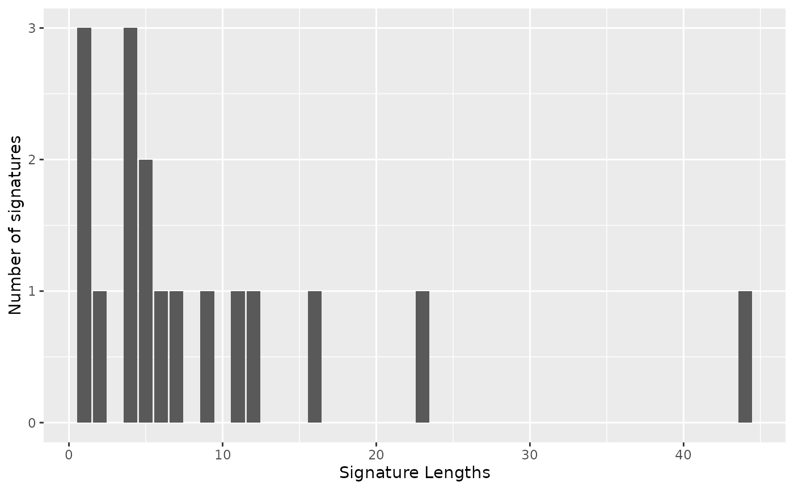
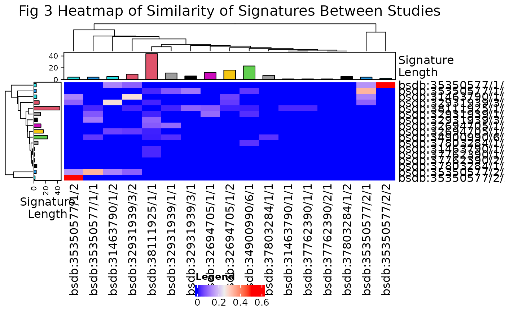
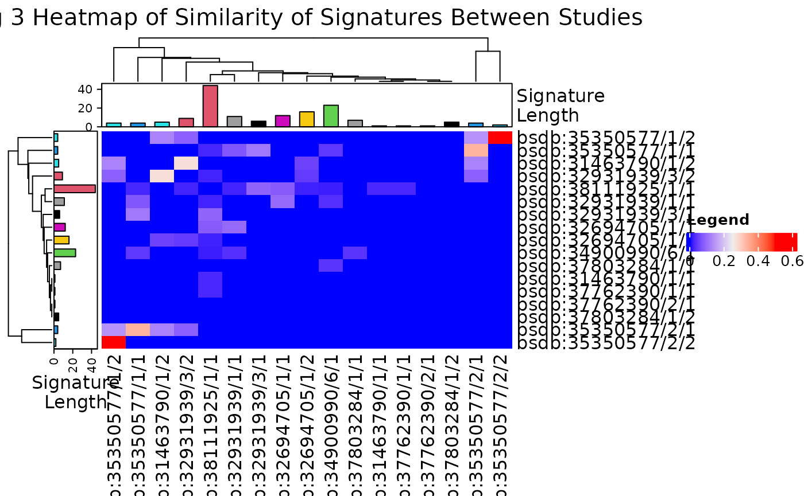

Differential Abundance in the ocular microbiome in Dry Eye Disaease
Mary Bearkland
09 November, 2026
Source:vignettes/capstoneanalysis_BearklandM.Rmd
capstoneanalysis_BearklandM.Rmd
if (!require("BiocManager", quietly = TRUE))
install.packages("BiocManager")
BiocManager::install(c("devtools", "tidyverse", "kableExtra"))
BiocManager::install(c("waldronlab/BugSigDBStats", "waldronlab/bugsigdbr"))
suppressPackageStartupMessages({
library(bugSigSimple)
library(BugSigDBStats)
library(bugsigdbr)
library(tidyverse)
library(stringr)
library(kableExtra)
library(dplyr)
library(magrittr)
library(boot)
})use version=“devel” and cache = FALSE to take the latest version from bugsigdb.org
dat <- bugsigdbr::importBugSigDB(version = "devel", cache = FALSE)
dim(dat)## [1] 17053 57Examine the data pulled in to view variable names
names(dat)## [1] "BSDB ID" "Study"
## [3] "Study design" "PMID"
## [5] "DOI" "URL"
## [7] "Authors list" "Title"
## [9] "Journal" "Year"
## [11] "Keywords" "Curation method"
## [13] "Curation protocol" "submittedBy"
## [15] "submissionDate" "Review state"
## [17] "Quality control tag" "Experiment"
## [19] "Location of subjects" "Host species"
## [21] "Body site" "UBERON ID"
## [23] "Condition" "EFO ID"
## [25] "Group 0 name" "Group 1 name"
## [27] "Group 1 definition" "Group 0 sample size"
## [29] "Group 1 sample size" "Antibiotics exclusion"
## [31] "Sequencing type" "16S variable region"
## [33] "Sequencing platform" "Data transformation"
## [35] "Statistical test" "Significance threshold"
## [37] "MHT correction" "LDA Score above"
## [39] "Matched on" "Confounders controlled for"
## [41] "Pielou" "Shannon"
## [43] "Chao1" "Simpson"
## [45] "Inverse Simpson" "Richness"
## [47] "Signature page name" "Source"
## [49] "Curated date" "Curator"
## [51] "Revision editor" "Description"
## [53] "Abundance in Group 1" "MetaPhlAn taxon names"
## [55] "NCBI Taxonomy IDs" "State"
## [57] "Reviewer"Subset to include only PMID numbers of interest
included.pmid <-
c(
31463790,
32931939,
37586456,
37762390,
34900990,
37803284,
35350577,
37026303,
32694705,
38111925
)
subset.dat <-
dat[dat$PMID %in% included.pmid,]
dim(subset.dat)## [1] 56 57Confirm all studies included
subset.dat %>%
kbl() %>%
kable_paper("hover", full_width = FALSE) %>%
scroll_box(width = "100%", height = "400px")| BSDB ID | Study | Study design | PMID | DOI | URL | Authors list | Title | Journal | Year | Keywords | Curation method | Curation protocol | submittedBy | submissionDate | Review state | Quality control tag | Experiment | Location of subjects | Host species | Body site | UBERON ID | Condition | EFO ID | Group 0 name | Group 1 name | Group 1 definition | Group 0 sample size | Group 1 sample size | Antibiotics exclusion | Sequencing type | 16S variable region | Sequencing platform | Data transformation | Statistical test | Significance threshold | MHT correction | LDA Score above | Matched on | Confounders controlled for | Pielou | Shannon | Chao1 | Simpson | Inverse Simpson | Richness | Signature page name | Source | Curated date | Curator | Revision editor | Description | Abundance in Group 1 | MetaPhlAn taxon names | NCBI Taxonomy IDs | State | Reviewer | |
|---|---|---|---|---|---|---|---|---|---|---|---|---|---|---|---|---|---|---|---|---|---|---|---|---|---|---|---|---|---|---|---|---|---|---|---|---|---|---|---|---|---|---|---|---|---|---|---|---|---|---|---|---|---|---|---|---|---|
| 3426 | bsdb:31463790/1/1 | 31463790 | case-control | 31463790 | 10.1007/s12275-019-9127-2 | NA | Li Z., Gong Y., Chen S., Li S., Zhang Y., Zhong H., Wang Z., Chen Y., Deng Q., Jiang Y., Li L., Fu M. , Yi G. | Comparative portrayal of ocular surface microbe with and without dry eye | Journal of microbiology (Seoul, Korea) | 2019 | 16S rRNA gene sequencing, dry eye, meibomian gland dysfunction, ocular surface bacteria | NA | NA | User:Mary Bearkland | 9 September 2023 16:25:46 | Reviewed | NA | Experiment 1 | China | Homo sapiens | Conjunctiva | UBERON:0001811 | Dry eye syndrome | MONDO:0006733 | healthy controls | Dry Eye |
Patients with Dry Eye (with or without Meibomian Gland Disease). Subjects were considered to have DE if a positive dry eye survey OSDI ≥ 13 was recorded in addition to a positive score in one or more tests (tear break-up time ≤ 10; osmolarity ≥ 308 mOsm/L or interocular difference > 8 mOsm/L; ocular surface staining > 5 corneal spots, > 9 conjunctival spots, or lid margin ≥ 2 mm length, and 25% width). |
54 | 35 | 6 months | 16S | 34 | Illumina | relative abundances | LEfSe | 0.05 | NA | 4.00 | NA | NA | NA | decreased | unchanged | decreased | NA | unchanged | Signature 1 | Figure 4 | 9 September 2023 | Mary Bearkland | Mary Bearkland,Peace Sandy,Folakunmi,WikiWorks | Taxa listed according to their linear discriminant analysis (LDA) values determined from comparisons between the DE patients and NDE subjects as computed by the use of the LEfSe algorithm. | increased | k__Pseudomonadati|p__Bacteroidota|c__Bacteroidia | 3379134|976|200643 | Complete | Folakunmi |
| 3427 | bsdb:31463790/1/2 | 31463790 | case-control | 31463790 | 10.1007/s12275-019-9127-2 | NA | Li Z., Gong Y., Chen S., Li S., Zhang Y., Zhong H., Wang Z., Chen Y., Deng Q., Jiang Y., Li L., Fu M. , Yi G. | Comparative portrayal of ocular surface microbe with and without dry eye | Journal of microbiology (Seoul, Korea) | 2019 | 16S rRNA gene sequencing, dry eye, meibomian gland dysfunction, ocular surface bacteria | NA | NA | User:Mary Bearkland | 9 September 2023 16:25:46 | Reviewed | NA | Experiment 1 | China | Homo sapiens | Conjunctiva | UBERON:0001811 | Dry eye syndrome | MONDO:0006733 | healthy controls | Dry Eye |
Patients with Dry Eye (with or without Meibomian Gland Disease). Subjects were considered to have DE if a positive dry eye survey OSDI ≥ 13 was recorded in addition to a positive score in one or more tests (tear break-up time ≤ 10; osmolarity ≥ 308 mOsm/L or interocular difference > 8 mOsm/L; ocular surface staining > 5 corneal spots, > 9 conjunctival spots, or lid margin ≥ 2 mm length, and 25% width). |
54 | 35 | 6 months | 16S | 34 | Illumina | relative abundances | LEfSe | 0.05 | NA | 4.00 | NA | NA | NA | decreased | unchanged | decreased | NA | unchanged | Signature 2 | Figure 4 | 9 September 2023 | Mary Bearkland | Mary Bearkland,Folakunmi,WikiWorks | Taxa listed according to their linear discriminant analysis (LDA) values determined from comparisons between the DE patients and NDE subjects as computed by the use of the LEfSe algorithm. | increased | k__Pseudomonadati|p__Pseudomonadota|c__Gammaproteobacteria , k__Pseudomonadati|p__Pseudomonadota|c__Gammaproteobacteria|o__Pseudomonadales|f__Pseudomonadaceae , k__Pseudomonadati|p__Pseudomonadota , k__Pseudomonadati|p__Pseudomonadota|c__Gammaproteobacteria|o__Pseudomonadales|f__Pseudomonadaceae|g__Pseudomonas , k__Pseudomonadati|p__Pseudomonadota|c__Gammaproteobacteria|o__Pseudomonadales|f__Pseudomonadaceae|g__Pseudomonas|s__Pseudomonas plecoglossicida | 3379134|1224|1236 , 3379134|1224|1236|72274|135621 , 3379134|1224 , 3379134|1224|1236|72274|135621|286 , 3379134|1224|1236|72274|135621|286|70775 | Complete | Folakunmi |
| 3428 | bsdb:31463790/2/1 | 31463790 | case-control | 31463790 | 10.1007/s12275-019-9127-2 | NA | Li Z., Gong Y., Chen S., Li S., Zhang Y., Zhong H., Wang Z., Chen Y., Deng Q., Jiang Y., Li L., Fu M. , Yi G. | Comparative portrayal of ocular surface microbe with and without dry eye | Journal of microbiology (Seoul, Korea) | 2019 | 16S rRNA gene sequencing, dry eye, meibomian gland dysfunction, ocular surface bacteria | NA | NA | User:Mary Bearkland | 9 September 2023 16:25:46 | Reviewed | NA | Experiment 2 | China | Homo sapiens | Conjunctiva | UBERON:0001811 | Dry eye syndrome | MONDO:0006733 | Non-MGD | MGD | Patients with Dry Eye with Meibomian Gland Disease | 10 | 25 | 6 months | 16S | 34 | Illumina | relative abundances | LEfSe | 0.05 | NA | 4.00 | NA | NA | NA | unchanged | unchanged | unchanged | NA | unchanged | Signature 1 | Figure 6 | 9 September 2023 | Mary Bearkland | Mary Bearkland,Folakunmi,WikiWorks | Taxa listed according to their linear discriminant analysis (LDA) values determined from comparisons between the MGD patients and NMGD subjects in DE group as computed by the use of the LEfSe algorithm. | increased | k__Bacillati|p__Bacillota|c__Bacilli|o__Caryophanales|f__Bacillaceae , k__Bacillati|p__Bacillota|c__Bacilli|o__Caryophanales , k__Bacillati|p__Bacillota|c__Bacilli , k__Bacillati|p__Bacillota|c__Bacilli|o__Caryophanales|f__Bacillaceae|g__Bacillus|s__Bacillus pumilus | 1783272|1239|91061|1385|186817 , 1783272|1239|91061|1385 , 1783272|1239|91061 , 1783272|1239|91061|1385|186817|1386|1408 | Complete | Folakunmi |
| 3429 | bsdb:31463790/2/2 | 31463790 | case-control | 31463790 | 10.1007/s12275-019-9127-2 | NA | Li Z., Gong Y., Chen S., Li S., Zhang Y., Zhong H., Wang Z., Chen Y., Deng Q., Jiang Y., Li L., Fu M. , Yi G. | Comparative portrayal of ocular surface microbe with and without dry eye | Journal of microbiology (Seoul, Korea) | 2019 | 16S rRNA gene sequencing, dry eye, meibomian gland dysfunction, ocular surface bacteria | NA | NA | User:Mary Bearkland | 9 September 2023 16:25:46 | Reviewed | NA | Experiment 2 | China | Homo sapiens | Conjunctiva | UBERON:0001811 | Dry eye syndrome | MONDO:0006733 | Non-MGD | MGD | Patients with Dry Eye with Meibomian Gland Disease | 10 | 25 | 6 months | 16S | 34 | Illumina | relative abundances | LEfSe | 0.05 | NA | 4.00 | NA | NA | NA | unchanged | unchanged | unchanged | NA | unchanged | Signature 2 | Figure 6 | 9 September 2023 | Mary Bearkland | Mary Bearkland,Aleru002,Folakunmi,WikiWorks | Taxa listed according to their linear discriminant analysis (LDA) values determined from comparisons between the MGD patients and NMGD subjects in DE group as computed by the use of LEfSe algorithm. | decreased | k__Pseudomonadati|p__Bacteroidota|c__Bacteroidia|o__Bacteroidales|f__Prevotellaceae|g__Alloprevotella , k__Pseudomonadati|p__Bacteroidota|c__Bacteroidia|o__Bacteroidales , k__Bacillati|p__Bacillota|c__Clostridia|o__Eubacteriales|f__Eubacteriaceae|g__Eubacterium|s__Eubacterium coprostanoligenes, k__Bacillati|p__Bacillota|c__Clostridia|o__Eubacteriales|f__Oscillospiraceae , k__Pseudomonadati|p__Pseudomonadota|c__Gammaproteobacteria|o__Lysobacterales|f__Lysobacteraceae|g__Thermomonas | 3379134|976|200643|171549|171552|1283313 , 3379134|976|200643|171549 , 1783272|1239|186801|186802|186806|1730|290054, 1783272|1239|186801|186802|216572 , 3379134|1224|1236|135614|32033|141948 | Complete | Folakunmi |
| 4347 | bsdb:32694705/1/1 | 32694705 | case-control | 32694705 | 10.1038/s41598-020-68952-w | NA | Willis K.A., Postnikoff C.K., Freeman A., Rezonzew G., Nichols K., Gaggar A. , Lal C.V. | The closed eye harbours a unique microbiome in dry eye disease | Scientific reports | 2020 | NA | NA | NA | User:Mary Bearkland | 1 December 2023 16:36:13 | Reviewed | NA | Experiment 1 | United States of America | Homo sapiens | Tear film | UBERON:0022287 | Dry eye syndrome | MONDO:0006733 | Normal Control (NC) | Dry Eye | Participants with moderate or severe dry eye disease | 36 | 36 | 1 month | 16S | 4 | Illumina | relative abundances | LEfSe | 0.05 | TRUE | NA | NA | NA | unchanged | unchanged | NA | NA | NA | unchanged | Signature 1 | Fig. S5 and Fig. S6. | 14 February 2024 | Peace Sandy | Peace Sandy,WikiWorks |
The acquisition of unique taxa separates the dry from the normal eye at baseline. (b) Linear discriminant analysis of effect size (LEfSe). Additional unique taxa separate the dry from the normal eye after a month. (b) Linear discriminant analysis of effect size (LEfSe). |
increased | k__Bacillati|p__Bacillota|c__Bacilli|o__Lactobacillales|f__Lactobacillaceae , k__Bacillati|p__Bacillota|c__Bacilli|o__Lactobacillales|f__Streptococcaceae|g__Streptococcus , k__Bacillati|p__Cyanobacteriota|c__Cyanophyceae|o__Nostocales|f__Calotrichaceae|g__Calothrix , k__Bacillati|p__Actinomycetota|c__Actinomycetes|o__Actinomycetales|f__Actinomycetaceae|g__Varibaculum , k__Viridiplantae|p__Streptophyta|c__Magnoliopsida|o__Fabales|f__Fabaceae|s__Papilionoideae|g__Rothia , k__Pseudomonadati|p__Pseudomonadota|c__Gammaproteobacteria|o__Pasteurellales|f__Pasteurellaceae|g__Haemophilus , k__Thermotogati|p__Deinococcota|c__Deinococci|o__Thermales|f__Thermaceae|g__Meiothermus , k__Bacillati|p__Bacillota|c__Negativicutes|o__Veillonellales|f__Veillonellaceae|g__Dialister , k__Bacillati|p__Actinomycetota|c__Actinomycetes|o__Micrococcales|f__Dermacoccaceae|g__Dermacoccus , k__Pseudomonadati|p__Bacteroidota|c__Bacteroidia|o__Bacteroidales|f__Prevotellaceae|g__Prevotella , k__Bacillati|p__Bacillota|c__Clostridia|o__Eubacteriales|f__Oscillospiraceae|g__Faecalibacterium , k__Pseudomonadati|p__Pseudomonadota|c__Alphaproteobacteria|o__Hyphomicrobiales|f__Rhizobiaceae|g__Agrobacterium | 1783272|1239|91061|186826|33958 , 1783272|1239|91061|186826|1300|1301 , 1783272|1117|3028117|1161|2661849|1186 , 1783272|201174|1760|2037|2049|184869 , 33090|35493|3398|72025|3803|3814|508215 , 3379134|1224|1236|135625|712|724 , 3384194|1297|188787|68933|188786|65551 , 1783272|1239|909932|1843489|31977|39948 , 1783272|201174|1760|85006|145357|57495 , 3379134|976|200643|171549|171552|838 , 1783272|1239|186801|186802|216572|216851, 3379134|1224|28211|356|82115|357 | Complete | Peace Sandy |
| 4348 | bsdb:32694705/1/2 | 32694705 | case-control | 32694705 | 10.1038/s41598-020-68952-w | NA | Willis K.A., Postnikoff C.K., Freeman A., Rezonzew G., Nichols K., Gaggar A. , Lal C.V. | The closed eye harbours a unique microbiome in dry eye disease | Scientific reports | 2020 | NA | NA | NA | User:Mary Bearkland | 1 December 2023 16:36:13 | Reviewed | NA | Experiment 1 | United States of America | Homo sapiens | Tear film | UBERON:0022287 | Dry eye syndrome | MONDO:0006733 | Normal Control (NC) | Dry Eye | Participants with moderate or severe dry eye disease | 36 | 36 | 1 month | 16S | 4 | Illumina | relative abundances | LEfSe | 0.05 | TRUE | NA | NA | NA | unchanged | unchanged | NA | NA | NA | unchanged | Signature 2 | NA | 14 February 2024 | Peace Sandy | Peace Sandy,WikiWorks |
The acquisition of unique taxa separates the dry from the normal eye at baseline. (b) Linear discriminant analysis of effect size (LEfSe). Additional unique taxa separate the dry from the normal eye after a month. (b) Linear discriminant analysis of effect size (LEfSe). |
decreased | k__Pseudomonadati|p__Pseudomonadota|c__Gammaproteobacteria|o__Pseudomonadales|f__Pseudomonadaceae|g__Pseudomonas , k__Pseudomonadati|p__Pseudomonadota|c__Alphaproteobacteria|o__Hyphomicrobiales|f__Methylobacteriaceae , k__Pseudomonadati|p__Campylobacterota|c__Epsilonproteobacteria|o__Campylobacterales|f__Helicobacteraceae|g__Helicobacter , k__Pseudomonadati|p__Pseudomonadota|c__Alphaproteobacteria|o__Acetobacterales|f__Acetobacteraceae|g__Acetobacter , k__Pseudomonadati|p__Pseudomonadota|c__Alphaproteobacteria|o__Hyphomicrobiales|f__Nitrobacteraceae|g__Bradyrhizobium , k__Pseudomonadati|p__Pseudomonadota|c__Gammaproteobacteria|o__Lysobacterales|f__Lysobacteraceae|g__Stenotrophomonas , k__Bacillati|p__Actinomycetota|c__Coriobacteriia|o__Coriobacteriales|f__Coriobacteriaceae , k__Bacillati|p__Actinomycetota|c__Actinomycetes|o__Mycobacteriales|f__Dietziaceae|g__Dietzia , k__Pseudomonadati|p__Pseudomonadota|c__Betaproteobacteria|o__Neisseriales|f__Chromobacteriaceae|g__Vogesella , k__Pseudomonadati|p__Pseudomonadota|c__Alphaproteobacteria|o__Rhodospirillales|f__Azospirillaceae|g__Azospirillum , k__Pseudomonadati|p__Pseudomonadota|c__Alphaproteobacteria|o__Hyphomicrobiales|f__Pleomorphomonadaceae|g__Pleomorphomonas, k__Pseudomonadati|p__Bdellovibrionota|c__Bacteriovoracia|o__Bacteriovoracales|f__Bacteriovoracaceae|g__Peredibacter , k__Pseudomonadati|p__Pseudomonadota|c__Alphaproteobacteria|o__Hyphomicrobiales|f__Beijerinckiaceae , k__Pseudomonadati|p__Pseudomonadota|c__Alphaproteobacteria|o__Rhodobacterales|f__Roseobacteraceae|g__Rubellimicrobium , k__Pseudomonadati|p__Pseudomonadota|c__Gammaproteobacteria|o__Enterobacterales|f__Enterobacteriaceae|g__Escherichia , k__Pseudomonadati|p__Pseudomonadota|c__Gammaproteobacteria|o__Chromatiales|f__Chromatiaceae|g__Rheinheimera | 3379134|1224|1236|72274|135621|286 , 3379134|1224|28211|356|119045 , 3379134|29547|3031852|213849|72293|209 , 3379134|1224|28211|3120395|433|434 , 3379134|1224|28211|356|41294|374 , 3379134|1224|1236|135614|32033|40323 , 1783272|201174|84998|84999|84107 , 1783272|201174|1760|85007|85029|37914 , 3379134|1224|28216|206351|1499392|57739 , 3379134|1224|28211|204441|2829815|191 , 3379134|1224|28211|356|2843308|261933 , 3379134|3018035|3031419|2024979|263369|263370, 3379134|1224|28211|356|45404 , 3379134|1224|28211|204455|2854170|295418 , 3379134|1224|1236|91347|543|561 , 3379134|1224|1236|135613|1046|67575 | Complete | Peace Sandy |
| 4572 | bsdb:32931939/1/1 | 32931939 | case-control | 32931939 | 10.1016/j.jtos.2020.09.003 | NA | Andersson J., Vogt J.K., Dalgaard M.D., Pedersen O., Holmgaard K. , Heegaard S. | Ocular surface microbiota in patients with aqueous tear-deficient dry eye | The ocular surface | 2021 | 16S rRNA gene amplicon sequencing, ADDE, Bacilli class, Bacterial biomarker, Dry eye, Ocular surface microbiota | NA | NA | User:Mary Bearkland | 4 September 2023 16:45:58 | Reviewed | NA | Experiment 1 | Denmark | Homo sapiens | Conjunctival fornix | UBERON:0010307 | Dry eye syndrome | MONDO:0006733 | control | Dry Eye | Patients with Aqueous Deficient Dry Eye without Ocular Graft vs Host Disease | 28 | 21 | 3 months | 16S | 34 | Illumina | raw counts | DESeq2 | 0.05 | NA | NA | NA | NA | NA | decreased | NA | NA | NA | decreased | Signature 1 | Figure 4a, within result text (Several genera were less abundant in ADDE, lines 8-15) | 4 September 2023 | Mary Bearkland | Mary Bearkland,Folakunmi,WikiWorks | Comparison of the relative abundances of genera with DESeq2 between patients with DryEye and Control | decreased | k__Bacillati|p__Actinomycetota|c__Actinomycetes|o__Mycobacteriales|f__Corynebacteriaceae|g__Corynebacterium , k__Pseudomonadati|p__Bacteroidota|c__Flavobacteriia|o__Flavobacteriales|f__Flavobacteriaceae|g__Flavobacterium , k__Fusobacteriati|p__Fusobacteriota|c__Fusobacteriia|o__Fusobacteriales|f__Fusobacteriaceae|g__Fusobacterium , k__Pseudomonadati|p__Pseudomonadota|c__Gammaproteobacteria|o__Pasteurellales|f__Pasteurellaceae|g__Haemophilus , k__Pseudomonadati|p__Pseudomonadota|c__Betaproteobacteria|o__Burkholderiales|f__Oxalobacteraceae|g__Massilia , k__Bacillati|p__Actinomycetota|c__Actinomycetes|o__Micrococcales|f__Microbacteriaceae|g__Microbacterium , k__Pseudomonadati|p__Pseudomonadota|c__Betaproteobacteria|o__Burkholderiales|f__Comamonadaceae|g__Ottowia , k__Bacillati|p__Actinomycetota|c__Actinomycetes|o__Micrococcales|f__Micrococcaceae|g__Rothia , k__Pseudomonadati|p__Pseudomonadota|c__Alphaproteobacteria|o__Sphingomonadales|f__Sphingomonadaceae|g__Sphingomonas, k__Thermotogati|p__Deinococcota|c__Deinococci|o__Thermales|f__Thermaceae|g__Thermus , k__Bacillati|p__Bacillota|c__Negativicutes|o__Veillonellales|f__Veillonellaceae|g__Veillonella | 1783272|201174|1760|85007|1653|1716 , 3379134|976|117743|200644|49546|237 , 3384189|32066|203490|203491|203492|848 , 3379134|1224|1236|135625|712|724 , 3379134|1224|28216|80840|75682|149698 , 1783272|201174|1760|85006|85023|33882 , 3379134|1224|28216|80840|80864|219181 , 1783272|201174|1760|85006|1268|32207 , 3379134|1224|28211|204457|41297|13687 , 3384194|1297|188787|68933|188786|270 , 1783272|1239|909932|1843489|31977|29465 | Complete | Folakunmi |
| 4573 | bsdb:32931939/2/1 | 32931939 | case-control | 32931939 | 10.1016/j.jtos.2020.09.003 | NA | Andersson J., Vogt J.K., Dalgaard M.D., Pedersen O., Holmgaard K. , Heegaard S. | Ocular surface microbiota in patients with aqueous tear-deficient dry eye | The ocular surface | 2021 | 16S rRNA gene amplicon sequencing, ADDE, Bacilli class, Bacterial biomarker, Dry eye, Ocular surface microbiota | NA | NA | User:Mary Bearkland | 4 September 2023 16:45:58 | Reviewed | NA | Experiment 2 | Denmark | Homo sapiens | Conjunctival fornix | UBERON:0010307 | Dry eye syndrome | MONDO:0006733 | control | OGVHD | Patients with Aqueous Deficient Dry Eye and Ocular Graft vs Host Disease as diagnosed using the criteria described by the International Chronic Ocular Graft-vs-Host-Disease (GVHD) Consensus. Group and the patients included were classified as either probable or definite chronic GVHD | 28 | 18 | 3 months | 16S | 34 | Illumina | raw counts | DESeq2 | 0.05 | NA | NA | NA | NA | NA | decreased | NA | NA | NA | decreased | Signature 1 | Figure 4b, within result text (Several genera were less abundant in ADDE, line 19) | 4 September 2023 | Mary Bearkland | Mary Bearkland,Folakunmi,WikiWorks | Comparison of the relative abundances of genera with DESeq2 between patients with OGVHD and Control | decreased | k__Bacillati|p__Bacillota|c__Bacilli|o__Lactobacillales|f__Carnobacteriaceae|g__Carnobacterium , k__Pseudomonadati|p__Bacteroidota|c__Flavobacteriia|o__Flavobacteriales|f__Weeksellaceae|g__Cloacibacterium , k__Bacillati|p__Bacillota|c__Bacilli|o__Caryophanales|f__Listeriaceae|g__Listeria , k__Bacillati|p__Actinomycetota|c__Actinomycetes|o__Micrococcales|f__Microbacteriaceae|g__Microbacterium , k__Pseudomonadati|p__Pseudomonadota|c__Gammaproteobacteria|o__Pseudomonadales|f__Pseudomonadaceae|g__Pseudomonas | 1783272|1239|91061|186826|186828|2747 , 3379134|976|117743|200644|2762318|501783, 1783272|1239|91061|1385|186820|1637 , 1783272|201174|1760|85006|85023|33882 , 3379134|1224|1236|72274|135621|286 | Complete | Folakunmi |
| 4574 | bsdb:32931939/2/2 | 32931939 | case-control | 32931939 | 10.1016/j.jtos.2020.09.003 | NA | Andersson J., Vogt J.K., Dalgaard M.D., Pedersen O., Holmgaard K. , Heegaard S. | Ocular surface microbiota in patients with aqueous tear-deficient dry eye | The ocular surface | 2021 | 16S rRNA gene amplicon sequencing, ADDE, Bacilli class, Bacterial biomarker, Dry eye, Ocular surface microbiota | NA | NA | User:Mary Bearkland | 4 September 2023 16:45:58 | Reviewed | NA | Experiment 2 | Denmark | Homo sapiens | Conjunctival fornix | UBERON:0010307 | Dry eye syndrome | MONDO:0006733 | control | OGVHD | Patients with Aqueous Deficient Dry Eye and Ocular Graft vs Host Disease as diagnosed using the criteria described by the International Chronic Ocular Graft-vs-Host-Disease (GVHD) Consensus. Group and the patients included were classified as either probable or definite chronic GVHD | 28 | 18 | 3 months | 16S | 34 | Illumina | raw counts | DESeq2 | 0.05 | NA | NA | NA | NA | NA | decreased | NA | NA | NA | decreased | Signature 2 | Figure 4b, within result text (Several genera were less abundant in ADDE, line 20) | 4 September 2023 | Mary Bearkland | Mary Bearkland,Folakunmi,WikiWorks | Comparison of the relative abundances of genera with DESeq2 between patients with OGVHD and Control | increased | k__Bacillati|p__Bacillota|c__Bacilli|o__Caryophanales|f__Bacillaceae|g__Bacillus | 1783272|1239|91061|1385|186817|1386 | Complete | Folakunmi |
| 4575 | bsdb:32931939/3/1 | 32931939 | case-control | 32931939 | 10.1016/j.jtos.2020.09.003 | NA | Andersson J., Vogt J.K., Dalgaard M.D., Pedersen O., Holmgaard K. , Heegaard S. | Ocular surface microbiota in patients with aqueous tear-deficient dry eye | The ocular surface | 2021 | 16S rRNA gene amplicon sequencing, ADDE, Bacilli class, Bacterial biomarker, Dry eye, Ocular surface microbiota | NA | NA | User:Mary Bearkland | 4 September 2023 16:45:58 | Reviewed | NA | Experiment 3 | Denmark | Homo sapiens | Conjunctival fornix | UBERON:0010307 | Dry eye syndrome | MONDO:0006733 | control | ADDE | Patients with Aqueous Deficient Dry Eye including those with and without Ocular Graft vs Host Disease as diagnosed using the criteria described by the International Chronic Ocular Graft-vs-Host-Disease (GVHD) Consensus. Group and the patients included were classified as either probable or definite chronic GVHD | 28 | 39 | 3 months | 16S | 34 | Illumina | relative abundances | LEfSe | 0.05 | NA | 3.00 | NA | NA | NA | NA | NA | NA | NA | NA | Signature 1 | Figure 5 | 4 September 2023 | Mary Bearkland | Mary Bearkland,WikiWorks | Fig. 5. Bacterial biomarkers identified with the LEfSe algorithm. A. Circular cladogram displaying the relation between taxa at different taxonomic levels (i.e. phylum to genus level). Among the enriched bacteria (biomarkers) in aqueous tear-deficient dry eye (ADDE) (red) was Bacilli and for controls (green) was Pseudomonadaceae. The size of the nodes represents the taxa abundance. B. Scores for linear discriminant analysis (LDA) with LEfSe tool for taxa with LDA score >3 and p <0.05 are shown in the histogram. Similarly, as the cladogram demonstrated, among the bacterial biomarkers, Pseudomonas was identified for controls and Bacilli for ADDE. | increased | k__Bacillati|p__Bacillota|c__Bacilli , k__Bacillati|p__Bacillota , k__Bacillati|p__Actinomycetota|c__Actinomycetes|o__Micrococcales|f__Brevibacteriaceae|g__Brevibacterium, k__Pseudomonadati|p__Pseudomonadota|c__Alphaproteobacteria|o__Hyphomicrobiales|g__Enhydrobacter , k__Pseudomonadati|p__Pseudomonadota|c__Gammaproteobacteria|o__Moraxellales|f__Moraxellaceae , k__Bacillati|p__Actinomycetota|c__Actinomycetes|o__Micrococcales|f__Brevibacteriaceae | 1783272|1239|91061 , 1783272|1239 , 1783272|201174|1760|85006|85019|1696, 3379134|1224|28211|356|212791 , 3379134|1224|1236|2887326|468 , 1783272|201174|1760|85006|85019 | Complete | Folakunmi |
| 4576 | bsdb:32931939/3/2 | 32931939 | case-control | 32931939 | 10.1016/j.jtos.2020.09.003 | NA | Andersson J., Vogt J.K., Dalgaard M.D., Pedersen O., Holmgaard K. , Heegaard S. | Ocular surface microbiota in patients with aqueous tear-deficient dry eye | The ocular surface | 2021 | 16S rRNA gene amplicon sequencing, ADDE, Bacilli class, Bacterial biomarker, Dry eye, Ocular surface microbiota | NA | NA | User:Mary Bearkland | 4 September 2023 16:45:58 | Reviewed | NA | Experiment 3 | Denmark | Homo sapiens | Conjunctival fornix | UBERON:0010307 | Dry eye syndrome | MONDO:0006733 | control | ADDE | Patients with Aqueous Deficient Dry Eye including those with and without Ocular Graft vs Host Disease as diagnosed using the criteria described by the International Chronic Ocular Graft-vs-Host-Disease (GVHD) Consensus. Group and the patients included were classified as either probable or definite chronic GVHD | 28 | 39 | 3 months | 16S | 34 | Illumina | relative abundances | LEfSe | 0.05 | NA | 3.00 | NA | NA | NA | NA | NA | NA | NA | NA | Signature 2 | Figure 5 | 4 September 2023 | Mary Bearkland | Mary Bearkland,WikiWorks | Fig. 5. Bacterial biomarkers identified with the LEfSe algorithm. A. Circular cladogram displaying the relation between taxa at different taxonomic levels (i.e. phylum to genus level). Among the enriched bacteria (biomarkers) in aqueous tear-deficient dry eye (ADDE) (red) was Bacilli and for controls (green) was Pseudomonadaceae. The size of the nodes represents the taxa abundance. B. Scores for linear discriminant analysis (LDA) with LEfSe tool for taxa with LDA score >3 and p <0.05 are shown in the histogram. Similarly, as the cladogram demonstrated, among the bacterial biomarkers, Pseudomonas was identified for controls and Bacilli for ADDE. | decreased | k__Bacillati|p__Bacillota|c__Bacilli|o__Lactobacillales|f__Carnobacteriaceae , k__Bacillati|p__Bacillota|c__Bacilli|o__Lactobacillales|f__Carnobacteriaceae|g__Carnobacterium , k__Pseudomonadati|p__Bacteroidota|c__Flavobacteriia|o__Flavobacteriales|f__Flavobacteriaceae , k__Pseudomonadati|p__Pseudomonadota|c__Gammaproteobacteria|o__Pseudomonadales|f__Pseudomonadaceae , k__Pseudomonadati|p__Pseudomonadota , k__Pseudomonadati|p__Pseudomonadota|c__Gammaproteobacteria|o__Pseudomonadales|f__Pseudomonadaceae|g__Pseudomonas, k__Bacillati|p__Actinomycetota|c__Actinomycetes|o__Mycobacteriales , k__Bacillati|p__Actinomycetota|c__Actinomycetes|o__Mycobacteriales|f__Corynebacteriaceae , k__Bacillati|p__Actinomycetota|c__Actinomycetes|o__Micrococcales|f__Micrococcaceae | 1783272|1239|91061|186826|186828 , 1783272|1239|91061|186826|186828|2747, 3379134|976|117743|200644|49546 , 3379134|1224|1236|72274|135621 , 3379134|1224 , 3379134|1224|1236|72274|135621|286 , 1783272|201174|1760|85007 , 1783272|201174|1760|85007|1653 , 1783272|201174|1760|85006|1268 | Complete | Folakunmi |
| 6486 | bsdb:34900990/1/2 | 34900990 | case-control | 34900990 | 10.3389/fcell.2021.731867 | NA | Liang Q., Li J., Zou Y., Hu X., Deng X., Zou B., Liu Y., Wei L., Liang L. , Wen X. | Metagenomic Analysis Reveals the Heterogeneity of Conjunctival Microbiota Dysbiosis in Dry Eye Disease | Frontiers in cell and developmental biology | 2021 | aqueous tear deficiency, conjunctival microbiota, dry eye disease, meibomian gland dysfunction, metagenomic shotgun sequencing | NA | NA | User:Mary Bearkland | 13 October 2023 02:39:25 | Reviewed | NA | Experiment 1 | China | Homo sapiens | Bulbar conjunctiva | UBERON:0010306 | Biological sex | PATO:0000047 | female patients with dry eye disease | male patients with dry eye disease | male patients with dry eye disease | 22 | 25 | 3 months | WMS | NA | Illumina | relative abundances | NA | 0.05 | NA | NA | NA | age | NA | decreased | NA | NA | NA | NA | Signature 2 | Supp fig 2c and 2d | 14 October 2023 | Mary Bearkland | Mary Bearkland,ChiomaBlessing,WikiWorks | Sex-related differences of the conjunctival microbiota in patients with dry eye. | decreased | k__Thermotogati|p__Deinococcota|c__Deinococci|o__Deinococcales|f__Deinococcaceae|g__Deinococcus|s__Deinococcus sp. NW-56 , k__Pseudomonadati|p__Pseudomonadota|c__Gammaproteobacteria|o__Pseudomonadales|f__Pseudomonadaceae|g__Pseudomonas|s__Pseudomonas aeruginosa | 3384194|1297|188787|118964|183710|1298|2080419, 3379134|1224|1236|72274|135621|286|287 | Complete | ChiomaBlessing |
| 6487 | bsdb:34900990/2/1 | 34900990 | case-control | 34900990 | 10.3389/fcell.2021.731867 | NA | Liang Q., Li J., Zou Y., Hu X., Deng X., Zou B., Liu Y., Wei L., Liang L. , Wen X. | Metagenomic Analysis Reveals the Heterogeneity of Conjunctival Microbiota Dysbiosis in Dry Eye Disease | Frontiers in cell and developmental biology | 2021 | aqueous tear deficiency, conjunctival microbiota, dry eye disease, meibomian gland dysfunction, metagenomic shotgun sequencing | NA | NA | User:Mary Bearkland | 13 October 2023 02:39:25 | Reviewed | NA | Experiment 2 | China | Homo sapiens | Bulbar conjunctiva | UBERON:0010306 | Biological sex | PATO:0000047 | Healthy female | Healthy male | Healthy male without dry eye disease | 22 | 25 | 3 months | WMS | NA | Illumina | relative abundances | NA | 0.05 | NA | NA | NA | age | NA | increased | NA | NA | NA | NA | Signature 1 | Supp fig 2c and 2d, Figure 3D | 14 October 2023 | Mary Bearkland | Mary Bearkland,ChiomaBlessing,WikiWorks | Sex-related differences of the conjunctival microbiota in healthy individuals. | increased | k__Pseudomonadati|p__Pseudomonadota|c__Gammaproteobacteria|o__Pseudomonadales|f__Pseudomonadaceae|g__Pseudomonas|s__Pseudomonas aeruginosa, k__Fungi|p__Basidiomycota|c__Malasseziomycetes|o__Malasseziales|f__Malasseziaceae|g__Malassezia|s__Malassezia globosa | 3379134|1224|1236|72274|135621|286|287 , 4751|5204|1538075|162474|742845|55193|76773 | Complete | ChiomaBlessing |
| 6488 | bsdb:34900990/3/1 | 34900990 | case-control | 34900990 | 10.3389/fcell.2021.731867 | NA | Liang Q., Li J., Zou Y., Hu X., Deng X., Zou B., Liu Y., Wei L., Liang L. , Wen X. | Metagenomic Analysis Reveals the Heterogeneity of Conjunctival Microbiota Dysbiosis in Dry Eye Disease | Frontiers in cell and developmental biology | 2021 | aqueous tear deficiency, conjunctival microbiota, dry eye disease, meibomian gland dysfunction, metagenomic shotgun sequencing | NA | NA | User:Mary Bearkland | 13 October 2023 02:39:25 | Reviewed | NA | Experiment 3 | China | Homo sapiens | Bulbar conjunctiva | UBERON:0010306 | Dry eye syndrome | MONDO:0006733 | Aqueous tear deficient (ATD) DED | Meibomian Gland Dysfunction (MGD) DED | Patients with MGD DED | 14 | 19 | 3 months | WMS | NA | Illumina | relative abundances | Mann-Whitney (Wilcoxon) | 0.15 | NA | NA | NA | age,sex | NA | unchanged | NA | NA | NA | NA | Signature 1 | Supp. fig 5 | 14 October 2023 | Mary Bearkland | Mary Bearkland,ChiomaBlessing,WikiWorks | Differentially abundant Staphylococcus species between patients with aqueous tear deficiency (ATD) and meibomian gland dysfunction (MGD) | increased | k__Bacillati|p__Bacillota|c__Bacilli|o__Caryophanales|f__Staphylococcaceae|g__Staphylococcus|s__Staphylococcus aureus , k__Bacillati|p__Bacillota|c__Bacilli|o__Caryophanales|f__Staphylococcaceae|g__Staphylococcus|s__Staphylococcus capitis | 1783272|1239|91061|1385|90964|1279|1280 , 1783272|1239|91061|1385|90964|1279|29388 | Complete | ChiomaBlessing |
| 6489 | bsdb:34900990/3/2 | 34900990 | case-control | 34900990 | 10.3389/fcell.2021.731867 | NA | Liang Q., Li J., Zou Y., Hu X., Deng X., Zou B., Liu Y., Wei L., Liang L. , Wen X. | Metagenomic Analysis Reveals the Heterogeneity of Conjunctival Microbiota Dysbiosis in Dry Eye Disease | Frontiers in cell and developmental biology | 2021 | aqueous tear deficiency, conjunctival microbiota, dry eye disease, meibomian gland dysfunction, metagenomic shotgun sequencing | NA | NA | User:Mary Bearkland | 13 October 2023 02:39:25 | Reviewed | NA | Experiment 3 | China | Homo sapiens | Bulbar conjunctiva | UBERON:0010306 | Dry eye syndrome | MONDO:0006733 | Aqueous tear deficient (ATD) DED | Meibomian Gland Dysfunction (MGD) DED | Patients with MGD DED | 14 | 19 | 3 months | WMS | NA | Illumina | relative abundances | Mann-Whitney (Wilcoxon) | 0.15 | NA | NA | NA | age,sex | NA | unchanged | NA | NA | NA | NA | Signature 2 | Supp. fig 5 | 14 October 2023 | Mary Bearkland | Mary Bearkland,ChiomaBlessing,WikiWorks | Differentially abundant Staphylococcus species between patients with aqueous tear deficiency (ATD) and meibomian gland dysfunction (MGD) | decreased | k__Bacillati|p__Bacillota|c__Bacilli|o__Caryophanales|f__Staphylococcaceae|g__Staphylococcus|s__Staphylococcus hominis | 1783272|1239|91061|1385|90964|1279|1290 | Complete | ChiomaBlessing |
| 6490 | bsdb:34900990/4/1 | 34900990 | case-control | 34900990 | 10.3389/fcell.2021.731867 | NA | Liang Q., Li J., Zou Y., Hu X., Deng X., Zou B., Liu Y., Wei L., Liang L. , Wen X. | Metagenomic Analysis Reveals the Heterogeneity of Conjunctival Microbiota Dysbiosis in Dry Eye Disease | Frontiers in cell and developmental biology | 2021 | aqueous tear deficiency, conjunctival microbiota, dry eye disease, meibomian gland dysfunction, metagenomic shotgun sequencing | NA | NA | User:Mary Bearkland | 13 October 2023 02:39:25 | Reviewed | NA | Experiment 4 | China | Homo sapiens | Bulbar conjunctiva | UBERON:0010306 | Dry eye syndrome | MONDO:0006733 | Aqueous tear deficient (ATD) DED | Mixed DED | Patients with mixed type diagnosis of DED (more closely related to MGD than ATD) | 14 | 35 | 3 months | WMS | NA | Illumina | relative abundances | Mann-Whitney (Wilcoxon) | 0.15 | NA | NA | NA | age,sex | NA | increased | NA | NA | NA | NA | Signature 1 | Supp fig 5 | 15 October 2023 | Mary Bearkland | Mary Bearkland,ChiomaBlessing,WikiWorks | Differentially abundant Staphylococcus species between patients with aqueous tear deficiency (ATD) and mixed dry eye | increased | k__Bacillati|p__Bacillota|c__Bacilli|o__Caryophanales|f__Staphylococcaceae|g__Staphylococcus|s__Staphylococcus aureus , k__Bacillati|p__Bacillota|c__Bacilli|o__Caryophanales|f__Staphylococcaceae|g__Staphylococcus|s__Staphylococcus capitis, k__Bacillati|p__Bacillota|c__Bacilli|o__Caryophanales|f__Staphylococcaceae|g__Staphylococcus|s__Staphylococcus cohnii | 1783272|1239|91061|1385|90964|1279|1280 , 1783272|1239|91061|1385|90964|1279|29388, 1783272|1239|91061|1385|90964|1279|29382 | Complete | ChiomaBlessing |
| 6491 | bsdb:34900990/5/NA | 34900990 | case-control | 34900990 | 10.3389/fcell.2021.731867 | NA | Liang Q., Li J., Zou Y., Hu X., Deng X., Zou B., Liu Y., Wei L., Liang L. , Wen X. | Metagenomic Analysis Reveals the Heterogeneity of Conjunctival Microbiota Dysbiosis in Dry Eye Disease | Frontiers in cell and developmental biology | 2021 | aqueous tear deficiency, conjunctival microbiota, dry eye disease, meibomian gland dysfunction, metagenomic shotgun sequencing | NA | NA | User:Mary Bearkland | 13 October 2023 02:39:25 | Reviewed | NA | Experiment 5 | China | Homo sapiens | Bulbar conjunctiva | UBERON:0010306 | Dry eye syndrome | MONDO:0006733 | Meibomian Gland Dysfunction (MGD) DED | Mixed DED | Patients with mixed type diagnosis of DED (more closely related to MGD than ATD) | 19 | 35 | 3 months | WMS | NA | Illumina | relative abundances | Mann-Whitney (Wilcoxon) | 0.15 | NA | NA | NA | age,sex | NA | unchanged | NA | NA | NA | NA | NA | NA | NA | NA | NA | NA | NA | NA | NA | NA | NA |
| 6492 | bsdb:34900990/6/1 | 34900990 | case-control | 34900990 | 10.3389/fcell.2021.731867 | NA | Liang Q., Li J., Zou Y., Hu X., Deng X., Zou B., Liu Y., Wei L., Liang L. , Wen X. | Metagenomic Analysis Reveals the Heterogeneity of Conjunctival Microbiota Dysbiosis in Dry Eye Disease | Frontiers in cell and developmental biology | 2021 | aqueous tear deficiency, conjunctival microbiota, dry eye disease, meibomian gland dysfunction, metagenomic shotgun sequencing | NA | NA | User:Mary Bearkland | 13 October 2023 02:39:25 | Reviewed | NA | Experiment 6 | China | Homo sapiens | Bulbar conjunctiva | UBERON:0010306 | Dry eye syndrome | MONDO:0006733 | healthy controls | Dry Eye | Patients with Dry eye disease | 48 | 47 | 3 months | WMS | NA | Illumina | relative abundances | MaAsLin2 | 0.05 | NA | NA | NA | age,sex | NA | decreased | NA | NA | NA | NA | Signature 1 | Supp table 4 | 3 December 2023 | Mary Bearkland | Mary Bearkland,ChiomaBlessing,WikiWorks | Comparison between dry eye group and healthy group showing species with polarized abundance (decreased abundance) in dry eye samples | increased | k__Pseudomonadati|p__Pseudomonadota|c__Gammaproteobacteria|o__Moraxellales|f__Moraxellaceae|g__Acinetobacter|s__Acinetobacter radioresistens , k__Pseudomonadati|p__Pseudomonadota|c__Gammaproteobacteria|o__Moraxellales|f__Moraxellaceae|g__Acinetobacter|s__Acinetobacter sp. WCHA45 , k__Pseudomonadati|p__Pseudomonadota|c__Gammaproteobacteria|o__Pasteurellales|f__Pasteurellaceae|g__Aggregatibacter|s__Aggregatibacter segnis , k__Pseudomonadati|p__Bacteroidota|c__Flavobacteriia|o__Flavobacteriales|f__Weeksellaceae|g__Chryseobacterium|s__Chryseobacterium sp. , k__Pseudomonadati|p__Bacteroidota|c__Flavobacteriia|o__Flavobacteriales|f__Weeksellaceae|g__Chryseobacterium|s__Chryseobacterium taklimakanense, k__Bacillati|p__Actinomycetota|c__Actinomycetes|o__Mycobacteriales|f__Corynebacteriaceae|g__Corynebacterium|s__Corynebacterium matruchotii , k__Thermotogati|p__Deinococcota|c__Deinococci|o__Deinococcales|f__Deinococcaceae|g__Deinococcus|s__Deinococcus ficus , k__Thermotogati|p__Deinococcota|c__Deinococci|o__Deinococcales|f__Deinococcaceae|g__Deinococcus|s__Deinococcus sp. NW-56 , k__Fusobacteriati|p__Fusobacteriota|c__Fusobacteriia|o__Fusobacteriales|f__Fusobacteriaceae|g__Fusobacterium|s__Fusobacterium nucleatum , k__Bacillati|p__Actinomycetota|c__Actinomycetes|o__Micrococcales|f__Intrasporangiaceae|g__Janibacter|s__Janibacter melonis , k__Bacillati|p__Bacillota|c__Bacilli|o__Lactobacillales|f__Lactobacillaceae|g__Lactobacillus|s__Lactobacillus iners , k__Fungi|p__Basidiomycota|c__Malasseziomycetes|o__Malasseziales|f__Malasseziaceae|g__Malassezia|s__Malassezia globosa , k__Bacillati|p__Actinomycetota|c__Actinomycetes|o__Propionibacteriales|f__Nocardioidaceae|g__Micropruina|s__Micropruina glycogenica , k__Pseudomonadati|p__Pseudomonadota|c__Betaproteobacteria|o__Neisseriales|f__Neisseriaceae|g__Neisseria|s__Neisseria subflava , k__Pseudomonadati|p__Pseudomonadota|c__Alphaproteobacteria|o__Rhodobacterales|f__Paracoccaceae|g__Paracoccus|s__Paracoccus yeei , k__Bacillati|p__Bacillota|c__Tissierellia|o__Tissierellales|f__Peptoniphilaceae|g__Parvimonas|s__Parvimonas micra , k__Bacillati|p__Actinomycetota|c__Actinomycetes|o__Micrococcales|f__Micrococcaceae|g__Rothia|s__Rothia mucilaginosa , k__Bacillati|p__Bacillota|c__Bacilli|o__Caryophanales|f__Staphylococcaceae|g__Staphylococcus|s__Staphylococcus aureus , k__Bacillati|p__Bacillota|c__Bacilli|o__Caryophanales|f__Staphylococcaceae|g__Staphylococcus|s__Staphylococcus hominis , k__Bacillati|p__Bacillota|c__Bacilli|o__Lactobacillales|f__Streptococcaceae|g__Streptococcus|s__Streptococcus sanguinis , k__Bacillati|p__Bacillota|c__Bacilli|o__Lactobacillales|f__Streptococcaceae|g__Streptococcus|s__Streptococcus sp. oral taxon 431 , k__Bacillati|p__Bacillota|c__Negativicutes|o__Veillonellales|f__Veillonellaceae|g__Veillonella|s__Veillonella parvula , k__Bacillati|p__Actinomycetota|c__Actinomycetes|o__Mycobacteriales|f__Corynebacteriaceae|g__Corynebacterium | 3379134|1224|1236|2887326|468|469|40216 , 3379134|1224|1236|2887326|468|469|2004644 , 3379134|1224|1236|135625|712|416916|739 , 3379134|976|117743|200644|2762318|59732|1871047 , 3379134|976|117743|200644|2762318|59732|536441 , 1783272|201174|1760|85007|1653|1716|43768 , 3384194|1297|188787|118964|183710|1298|317577 , 3384194|1297|188787|118964|183710|1298|2080419 , 3384189|32066|203490|203491|203492|848|851 , 1783272|201174|1760|85006|85021|53457|262209 , 1783272|1239|91061|186826|33958|1578|147802 , 4751|5204|1538075|162474|742845|55193|76773 , 1783272|201174|1760|85009|85015|116071|75385 , 3379134|1224|28216|206351|481|482|28449 , 3379134|1224|28211|204455|31989|265|147645 , 1783272|1239|1737404|1737405|1570339|543311|33033, 1783272|201174|1760|85006|1268|32207|43675 , 1783272|1239|91061|1385|90964|1279|1280 , 1783272|1239|91061|1385|90964|1279|1290 , 1783272|1239|91061|186826|1300|1301|1305 , 1783272|1239|91061|186826|1300|1301|712633 , 1783272|1239|909932|1843489|31977|29465|29466 , 1783272|201174|1760|85007|1653|1716 | Complete | ChiomaBlessing |
| 6493 | bsdb:34900990/7/1 | 34900990 | case-control | 34900990 | 10.3389/fcell.2021.731867 | NA | Liang Q., Li J., Zou Y., Hu X., Deng X., Zou B., Liu Y., Wei L., Liang L. , Wen X. | Metagenomic Analysis Reveals the Heterogeneity of Conjunctival Microbiota Dysbiosis in Dry Eye Disease | Frontiers in cell and developmental biology | 2021 | aqueous tear deficiency, conjunctival microbiota, dry eye disease, meibomian gland dysfunction, metagenomic shotgun sequencing | NA | NA | User:Mary Bearkland | 13 October 2023 02:39:25 | Reviewed | NA | Experiment 7 | China | Homo sapiens | Bulbar conjunctiva | UBERON:0010306 | Dry eye syndrome | MONDO:0006733 | Dry Eye -nonATD | Dry Eye- ATD | Patients with Dry eye disease characterized as aqueous tear deficient | 54 | 14 | 3 months | WMS | NA | Illumina | relative abundances | MaAsLin2 | 0.10 | NA | NA | NA | age,sex | NA | NA | NA | NA | NA | NA | Signature 1 | Figure 4b | 29 December 2023 | Mary Bearkland | Mary Bearkland,WikiWorks |
|
increased | k__Bacillati|p__Actinomycetota|c__Actinomycetes|o__Micrococcales|f__Intrasporangiaceae|g__Janibacter|s__Janibacter melonis | 1783272|201174|1760|85006|85021|53457|262209 | Complete | Folakunmi |
| 6494 | bsdb:34900990/7/2 | 34900990 | case-control | 34900990 | 10.3389/fcell.2021.731867 | NA | Liang Q., Li J., Zou Y., Hu X., Deng X., Zou B., Liu Y., Wei L., Liang L. , Wen X. | Metagenomic Analysis Reveals the Heterogeneity of Conjunctival Microbiota Dysbiosis in Dry Eye Disease | Frontiers in cell and developmental biology | 2021 | aqueous tear deficiency, conjunctival microbiota, dry eye disease, meibomian gland dysfunction, metagenomic shotgun sequencing | NA | NA | User:Mary Bearkland | 13 October 2023 02:39:25 | Reviewed | NA | Experiment 7 | China | Homo sapiens | Bulbar conjunctiva | UBERON:0010306 | Dry eye syndrome | MONDO:0006733 | Dry Eye -nonATD | Dry Eye- ATD | Patients with Dry eye disease characterized as aqueous tear deficient | 54 | 14 | 3 months | WMS | NA | Illumina | relative abundances | MaAsLin2 | 0.10 | NA | NA | NA | age,sex | NA | NA | NA | NA | NA | NA | Signature 2 | Figure 4b | 29 December 2023 | Mary Bearkland | Mary Bearkland,WikiWorks | Figure 4b) Model coefficients of top-ranked species associated with either ATD or non-ATD dry eye (p < 0.1, coefficient >0.2) ( | decreased | k__Pseudomonadati|p__Bacteroidota|c__Flavobacteriia|o__Flavobacteriales|f__Flavobacteriaceae|g__Capnocytophaga|s__Capnocytophaga gingivalis | 3379134|976|117743|200644|49546|1016|1017 | Complete | Folakunmi |
| 6495 | bsdb:34900990/8/1 | 34900990 | case-control | 34900990 | 10.3389/fcell.2021.731867 | NA | Liang Q., Li J., Zou Y., Hu X., Deng X., Zou B., Liu Y., Wei L., Liang L. , Wen X. | Metagenomic Analysis Reveals the Heterogeneity of Conjunctival Microbiota Dysbiosis in Dry Eye Disease | Frontiers in cell and developmental biology | 2021 | aqueous tear deficiency, conjunctival microbiota, dry eye disease, meibomian gland dysfunction, metagenomic shotgun sequencing | NA | NA | User:Mary Bearkland | 13 October 2023 02:39:25 | Reviewed | NA | Experiment 8 | China | Homo sapiens | Bulbar conjunctiva | UBERON:0010306 | Dry eye syndrome | MONDO:0006733 | Dry Eye -nonMGD | Dry Eye- MGD | Patients with Dry eye disease characterized as meibomian gland disorder | 49 | 19 | 3 months | WMS | NA | Illumina | relative abundances | MaAsLin2 | 0.10 | NA | NA | NA | age,sex | NA | NA | NA | NA | NA | NA | Signature 1 | Figure 4c | 29 December 2023 | Mary Bearkland | Mary Bearkland,WikiWorks | Model coefficients of top-ranked species associated with either MGD or non-MGD dry eye (p < 0.1, coefficient >0.2) | increased | k__Pseudomonadati|p__Pseudomonadota|c__Gammaproteobacteria|o__Moraxellales|f__Moraxellaceae|g__Acinetobacter|s__Acinetobacter sp. WCHA45, k__Thermotogati|p__Deinococcota|c__Deinococci|o__Deinococcales|f__Deinococcaceae|g__Deinococcus|s__Deinococcus sp. NW-56 , k__Bacillati|p__Bacillota|c__Bacilli|o__Caryophanales|f__Staphylococcaceae|g__Staphylococcus|s__Staphylococcus aureus , k__Bacillati|p__Bacillota|c__Bacilli|o__Caryophanales|f__Staphylococcaceae|g__Staphylococcus|s__Staphylococcus capitis , k__Bacillati|p__Bacillota|c__Bacilli|o__Caryophanales|f__Staphylococcaceae|g__Staphylococcus|s__Staphylococcus cohnii | 3379134|1224|1236|2887326|468|469|2004644 , 3384194|1297|188787|118964|183710|1298|2080419, 1783272|1239|91061|1385|90964|1279|1280 , 1783272|1239|91061|1385|90964|1279|29388 , 1783272|1239|91061|1385|90964|1279|29382 | Complete | Folakunmi |
| 6496 | bsdb:34900990/8/2 | 34900990 | case-control | 34900990 | 10.3389/fcell.2021.731867 | NA | Liang Q., Li J., Zou Y., Hu X., Deng X., Zou B., Liu Y., Wei L., Liang L. , Wen X. | Metagenomic Analysis Reveals the Heterogeneity of Conjunctival Microbiota Dysbiosis in Dry Eye Disease | Frontiers in cell and developmental biology | 2021 | aqueous tear deficiency, conjunctival microbiota, dry eye disease, meibomian gland dysfunction, metagenomic shotgun sequencing | NA | NA | User:Mary Bearkland | 13 October 2023 02:39:25 | Reviewed | NA | Experiment 8 | China | Homo sapiens | Bulbar conjunctiva | UBERON:0010306 | Dry eye syndrome | MONDO:0006733 | Dry Eye -nonMGD | Dry Eye- MGD | Patients with Dry eye disease characterized as meibomian gland disorder | 49 | 19 | 3 months | WMS | NA | Illumina | relative abundances | MaAsLin2 | 0.10 | NA | NA | NA | age,sex | NA | NA | NA | NA | NA | NA | Signature 2 | Figure 4c | 29 December 2023 | Mary Bearkland | Mary Bearkland,WikiWorks | Model coefficients of top-ranked species associated with either MGD or non-MGD dry eye (p < 0.1, coefficient >0.2) | decreased | k__Bacillati|p__Actinomycetota|c__Coriobacteriia|o__Coriobacteriales|f__Coriobacteriaceae|g__Collinsella|s__Collinsella aerofaciens | 1783272|201174|84998|84999|84107|102106|74426 | Complete | Folakunmi |
| 7103 | bsdb:35350577/1/1 | 35350577 | case-control | 35350577 | 10.3389/fmed.2022.841112 | NA | Song H., Xiao K., Chen Z. , Long Q. | Analysis of Conjunctival Sac Microbiome in Dry Eye Patients With and Without Sjögren’s Syndrome | Frontiers in medicine | 2022 | Sjögren’s syndrome, dry eyes, microbial composition, microbial diversity, ocular surface | NA | NA | User:Mary Bearkland | 10 November 2023 18:13:33 | Reviewed | NA | Experiment 1 | China | Homo sapiens | Conjunctival sac | UBERON:0005908 | Dry eye syndrome | MONDO:0006733 | Normal Control (NC) | Sjogrens Syndrome Dry Eye (SSDE) | Patients with Sjogrens Syndrome Dry Eye | 39 | 23 | 1 month | 16S | 34 | Illumina | relative abundances | ANOVA | 0.05 | NA | NA | NA | NA | NA | decreased | decreased | NA | NA | NA | Signature 1 | Tables 3 and 4 | 10 November 2023 | Mary Bearkland | Mary Bearkland,Peace Sandy,WikiWorks | TABLE 3 Percentage of the top five phyla in each group. TABLE 4 Percentage of the top five genus in each group. | increased | k__Pseudomonadati|p__Pseudomonadota|c__Gammaproteobacteria|o__Moraxellales|f__Moraxellaceae|g__Acinetobacter, k__Bacillati|p__Bacillota|c__Clostridia|o__Eubacteriales|f__Clostridiaceae|g__Clostridium , k__Bacillati|p__Actinomycetota|c__Actinomycetes|o__Mycobacteriales|f__Corynebacteriaceae|g__Corynebacterium , k__Bacillati|p__Bacillota | 3379134|1224|1236|2887326|468|469 , 1783272|1239|186801|186802|31979|1485, 1783272|201174|1760|85007|1653|1716 , 1783272|1239 | Complete | Peace Sandy |
| 7104 | bsdb:35350577/1/2 | 35350577 | case-control | 35350577 | 10.3389/fmed.2022.841112 | NA | Song H., Xiao K., Chen Z. , Long Q. | Analysis of Conjunctival Sac Microbiome in Dry Eye Patients With and Without Sjögren’s Syndrome | Frontiers in medicine | 2022 | Sjögren’s syndrome, dry eyes, microbial composition, microbial diversity, ocular surface | NA | NA | User:Mary Bearkland | 10 November 2023 18:13:33 | Reviewed | NA | Experiment 1 | China | Homo sapiens | Conjunctival sac | UBERON:0005908 | Dry eye syndrome | MONDO:0006733 | Normal Control (NC) | Sjogrens Syndrome Dry Eye (SSDE) | Patients with Sjogrens Syndrome Dry Eye | 39 | 23 | 1 month | 16S | 34 | Illumina | relative abundances | ANOVA | 0.05 | NA | NA | NA | NA | NA | decreased | decreased | NA | NA | NA | Signature 2 | Tables 3 and 4 | 10 November 2023 | Mary Bearkland | Mary Bearkland,Peace Sandy,WikiWorks | TABLE 3 Percentage of the top five phyla in each group. TABLE 4 Percentage of the top five genus in each group. | decreased | k__Bacillati|p__Bacillota|c__Bacilli|o__Caryophanales|f__Bacillaceae|g__Bacillus, k__Pseudomonadati|p__Bacteroidota , k__Bacillati|p__Cyanobacteriota , k__Pseudomonadati|p__Pseudomonadota | 1783272|1239|91061|1385|186817|1386, 3379134|976 , 1783272|1117 , 3379134|1224 | Complete | Peace Sandy |
| 7105 | bsdb:35350577/2/1 | 35350577 | case-control | 35350577 | 10.3389/fmed.2022.841112 | NA | Song H., Xiao K., Chen Z. , Long Q. | Analysis of Conjunctival Sac Microbiome in Dry Eye Patients With and Without Sjögren’s Syndrome | Frontiers in medicine | 2022 | Sjögren’s syndrome, dry eyes, microbial composition, microbial diversity, ocular surface | NA | NA | User:Mary Bearkland | 10 November 2023 18:13:33 | Reviewed | NA | Experiment 2 | China | Homo sapiens | Conjunctival sac | UBERON:0005908 | Dry eye syndrome | MONDO:0006733 | Normal Control (NC) | Non Sjogrens Syndrome Dry Eye (NSSDE) | Patients with Non-Sjogrens Syndrome Dry Eye | 39 | 36 | 1 month | 16S | 34 | Illumina | NA | ANOVA | 0.05 | NA | NA | NA | NA | NA | decreased | decreased | NA | NA | NA | Signature 1 | Tables 3 and 4 | 10 November 2023 | Mary Bearkland | Mary Bearkland,WikiWorks | TABLE 3 Percentage of the top five phyla in each group. TABLE 4 Percentage of the top five genus in each group. | increased | k__Pseudomonadati|p__Pseudomonadota , k__Bacillati|p__Actinomycetota , k__Pseudomonadati|p__Pseudomonadota|c__Gammaproteobacteria|o__Moraxellales|f__Moraxellaceae|g__Acinetobacter, k__Bacillati|p__Bacillota|c__Clostridia|o__Eubacteriales|f__Clostridiaceae|g__Clostridium | 3379134|1224 , 1783272|201174 , 3379134|1224|1236|2887326|468|469 , 1783272|1239|186801|186802|31979|1485 | Complete | Peace Sandy |
| 7106 | bsdb:35350577/2/2 | 35350577 | case-control | 35350577 | 10.3389/fmed.2022.841112 | NA | Song H., Xiao K., Chen Z. , Long Q. | Analysis of Conjunctival Sac Microbiome in Dry Eye Patients With and Without Sjögren’s Syndrome | Frontiers in medicine | 2022 | Sjögren’s syndrome, dry eyes, microbial composition, microbial diversity, ocular surface | NA | NA | User:Mary Bearkland | 10 November 2023 18:13:33 | Reviewed | NA | Experiment 2 | China | Homo sapiens | Conjunctival sac | UBERON:0005908 | Dry eye syndrome | MONDO:0006733 | Normal Control (NC) | Non Sjogrens Syndrome Dry Eye (NSSDE) | Patients with Non-Sjogrens Syndrome Dry Eye | 39 | 36 | 1 month | 16S | 34 | Illumina | NA | ANOVA | 0.05 | NA | NA | NA | NA | NA | decreased | decreased | NA | NA | NA | Signature 2 | Tables 3 and 4 | 10 November 2023 | Mary Bearkland | Mary Bearkland,WikiWorks | TABLE 3 Percentage of the top five phyla in each group. TABLE 4 Percentage of the top five genus in each group. | decreased | k__Bacillati|p__Bacillota|c__Bacilli|o__Caryophanales|f__Bacillaceae|g__Bacillus, k__Bacillati|p__Cyanobacteriota | 1783272|1239|91061|1385|186817|1386, 1783272|1117 | Complete | Peace Sandy |
| 7107 | bsdb:35350577/3/1 | 35350577 | case-control | 35350577 | 10.3389/fmed.2022.841112 | NA | Song H., Xiao K., Chen Z. , Long Q. | Analysis of Conjunctival Sac Microbiome in Dry Eye Patients With and Without Sjögren’s Syndrome | Frontiers in medicine | 2022 | Sjögren’s syndrome, dry eyes, microbial composition, microbial diversity, ocular surface | NA | NA | User:Mary Bearkland | 10 November 2023 18:13:33 | Reviewed | NA | Experiment 3 | China | Homo sapiens | Conjunctival sac | UBERON:0005908 | Dry eye syndrome | MONDO:0006733 | Non Sjogrens Syndrome Dry Eye (NSSDE) | Sjogrens Syndrome Dry Eye (SSDE) | Patients with Sjogrens Syndrome Dry Eye | 36 | 23 | 1 month | 16S | 34 | Illumina | NA | ANOVA | 0.05 | NA | NA | NA | NA | NA | decreased | decreased | NA | NA | NA | Signature 1 | Tables 3 and 4 | 10 November 2023 | Mary Bearkland | Mary Bearkland,WikiWorks | TABLE 3 Percentage of the top five phyla in each group. TABLE 4 Percentage of the top five genus in each group. | increased | k__Bacillati|p__Actinomycetota | 1783272|201174 | Complete | Peace Sandy |
| 7108 | bsdb:35350577/3/2 | 35350577 | case-control | 35350577 | 10.3389/fmed.2022.841112 | NA | Song H., Xiao K., Chen Z. , Long Q. | Analysis of Conjunctival Sac Microbiome in Dry Eye Patients With and Without Sjögren’s Syndrome | Frontiers in medicine | 2022 | Sjögren’s syndrome, dry eyes, microbial composition, microbial diversity, ocular surface | NA | NA | User:Mary Bearkland | 10 November 2023 18:13:33 | Reviewed | NA | Experiment 3 | China | Homo sapiens | Conjunctival sac | UBERON:0005908 | Dry eye syndrome | MONDO:0006733 | Non Sjogrens Syndrome Dry Eye (NSSDE) | Sjogrens Syndrome Dry Eye (SSDE) | Patients with Sjogrens Syndrome Dry Eye | 36 | 23 | 1 month | 16S | 34 | Illumina | NA | ANOVA | 0.05 | NA | NA | NA | NA | NA | decreased | decreased | NA | NA | NA | Signature 2 | Tables 3 and 4 | 10 November 2023 | Mary Bearkland | Mary Bearkland,WikiWorks | TABLE 3 Percentage of the top five phyla in each group. TABLE 4 Percentage of the top five genus in each group. | decreased | k__Bacillati|p__Bacillota|c__Clostridia|o__Eubacteriales|f__Clostridiaceae|g__Clostridium, k__Pseudomonadati|p__Pseudomonadota | 1783272|1239|186801|186802|31979|1485, 3379134|1224 | Complete | Peace Sandy |
| 8936 | bsdb:37026303/1/1 | 37026303 | case-control | 37026303 | https://doi.org/10.4103/IJO.IJO_2821_22 | https://journals.lww.com/ijo/fulltext/2023/04000/tear_film_microbiome_in_sjogren_s_and.75.aspx | Pal S., Vani G., Donthineni P.R., Basu S. , Arunasri K. | Tear film microbiome in Sjogren’s and non-Sjogren’s aqueous deficiency dry eye | Indian journal of ophthalmology | 2023 | Dry eye disease, Prevotella, Sjogren’s syndrome, non-Sjogren’s syndrome, tear film microbiome | NA | NA | User:Mary Bearkland | 10 November 2023 22:14:11 | Reviewed | NA | Experiment 1 | India | Homo sapiens | Tear film | UBERON:0022287 | Dry eye syndrome | MONDO:0006733 | Healthy Control (HC) | Sjogren’s syndrome (SS) and non-Sjogren’s syndrome (NSS) cohorts | Patients with aqueous-deficient dry eye (ADDE), including both Sjogren’s syndrome (SS) and non-Sjogren’s syndrome (NSS) cases with chronic cicatrizing conjunctivitis such as Stevens–Johnson syndrome (SJS) and ocular cicatricial pemphigoid (OCP), who were not on prior immuno-suppressant drugs | 33 | 45 | 1 month | 16S | 34 | Illumina | relative abundances | Mann-Whitney (Wilcoxon) | 0.05 | TRUE | NA | NA | NA | NA | unchanged | NA | unchanged | NA | unchanged | Signature 1 | Supplementary Table S2A and Figure 4d | 18 November 2023 | Mary Bearkland | Mary Bearkland,WikiWorks,LightAmadi | Discriminative genera in Sjogren’s syndrome (SS) and Non-Sjogren’s syndrome (NSS) compared with healthy controls (HC) using the Mann–Whitney (Wilcoxon) test. | increased | k__Pseudomonadati|p__Pseudomonadota|c__Gammaproteobacteria|o__Enterobacterales|f__Enterobacteriaceae|g__Enterobacter , k__Bacillati|p__Bacillota|c__Bacilli|o__Lactobacillales|f__Enterococcaceae|g__Enterococcus , k__Bacillati|p__Bacillota|c__Tissierellia|g__Ezakiella , k__Bacillati|p__Bacillota|c__Clostridia|o__Eubacteriales|f__Oscillospiraceae|g__Fastidiosipila , k__Bacillati|p__Actinomycetota|c__Actinomycetes|o__Bifidobacteriales|f__Bifidobacteriaceae|g__Gardnerella , k__Pseudomonadati|p__Pseudomonadota|c__Gammaproteobacteria|o__Pasteurellales|f__Pasteurellaceae|g__Haemophilus , k__Pseudomonadati|p__Pseudomonadota|c__Betaproteobacteria|o__Burkholderiales|f__Burkholderiaceae|g__Lautropia , k__Pseudomonadati|p__Pseudomonadota|c__Gammaproteobacteria|o__Lysobacterales|f__Lysobacteraceae|g__Luteimonas , k__Bacillati|p__Bacillota|c__Bacilli|o__Caryophanales|f__Bacillaceae|g__Marinococcus , k__Bacillati|p__Actinomycetota|c__Actinomycetes|o__Mycobacteriales|f__Nocardiaceae|g__Nocardia , k__Bacillati|p__Bacillota|c__Tissierellia|o__Tissierellales|f__Peptoniphilaceae|g__Parvimonas , k__Pseudomonadati|p__Pseudomonadota|c__Alphaproteobacteria|o__Hyphomicrobiales|f__Phreatobacteraceae|g__Phreatobacter, k__Pseudomonadati|p__Pseudomonadota|c__Gammaproteobacteria|o__Pseudomonadales|f__Pseudomonadaceae|g__Pseudomonas , k__Pseudomonadati|p__Pseudomonadota|c__Alphaproteobacteria|o__Rhodobacterales|g__Rhodobacter , k__Bacillati|p__Actinomycetota|c__Coriobacteriia|o__Eggerthellales|f__Eggerthellaceae|g__Slackia , k__Pseudomonadati|p__Pseudomonadota|c__Alphaproteobacteria|o__Sphingomonadales|f__Sphingobiaceae|g__Sphingobium , k__Fusobacteriati|p__Fusobacteriota|c__Fusobacteriia|o__Fusobacteriales|f__Leptotrichiaceae|g__Streptobacillus , k__Bacillati|p__Actinomycetota|c__Actinomycetes|o__Kitasatosporales|f__Streptomycetaceae|g__Streptomyces , k__Bacillati|p__Actinomycetota|c__Actinomycetes|o__Mycobacteriales|f__Tsukamurellaceae|g__Tsukamurella , k__Pseudomonadati|p__Pseudomonadota|c__Betaproteobacteria|o__Rhodocyclales|f__Zoogloeaceae|g__Zoogloea , k__Pseudomonadati|p__Bacteroidota|c__Flavobacteriia|o__Flavobacteriales|f__Weeksellaceae|g__Bergeyella , k__Bacillati|p__Actinomycetota|c__Actinomycetes|o__Micrococcales|f__Microbacteriaceae|g__Microbacterium , k__Pseudomonadati|p__Bacteroidota|c__Bacteroidia|o__Bacteroidales|f__Prevotellaceae|g__Prevotella | 3379134|1224|1236|91347|543|547 , 1783272|1239|91061|186826|81852|1350 , 1783272|1239|1737404|1582879 , 1783272|1239|186801|186802|216572|236752 , 1783272|201174|1760|85004|31953|2701 , 3379134|1224|1236|135625|712|724 , 3379134|1224|28216|80840|119060|47670 , 3379134|1224|1236|135614|32033|83614 , 1783272|1239|91061|1385|186817|1370 , 1783272|201174|1760|85007|85025|1817 , 1783272|1239|1737404|1737405|1570339|543311, 3379134|1224|28211|356|2843305|1632780 , 3379134|1224|1236|72274|135621|286 , 3379134|1224|28211|204455|1060 , 1783272|201174|84998|1643822|1643826|84108 , 3379134|1224|28211|204457|3423717|165695 , 3384189|32066|203490|203491|1129771|34104 , 1783272|201174|1760|85011|2062|1883 , 1783272|201174|1760|85007|85028|2060 , 3379134|1224|28216|206389|2008794|349 , 3379134|976|117743|200644|2762318|59735 , 1783272|201174|1760|85006|85023|33882 , 3379134|976|200643|171549|171552|838 | Complete | Peace Sandy |
| 8937 | bsdb:37026303/1/2 | 37026303 | case-control | 37026303 | https://doi.org/10.4103/IJO.IJO_2821_22 | https://journals.lww.com/ijo/fulltext/2023/04000/tear_film_microbiome_in_sjogren_s_and.75.aspx | Pal S., Vani G., Donthineni P.R., Basu S. , Arunasri K. | Tear film microbiome in Sjogren’s and non-Sjogren’s aqueous deficiency dry eye | Indian journal of ophthalmology | 2023 | Dry eye disease, Prevotella, Sjogren’s syndrome, non-Sjogren’s syndrome, tear film microbiome | NA | NA | User:Mary Bearkland | 10 November 2023 22:14:11 | Reviewed | NA | Experiment 1 | India | Homo sapiens | Tear film | UBERON:0022287 | Dry eye syndrome | MONDO:0006733 | Healthy Control (HC) | Sjogren’s syndrome (SS) and non-Sjogren’s syndrome (NSS) cohorts | Patients with aqueous-deficient dry eye (ADDE), including both Sjogren’s syndrome (SS) and non-Sjogren’s syndrome (NSS) cases with chronic cicatrizing conjunctivitis such as Stevens–Johnson syndrome (SJS) and ocular cicatricial pemphigoid (OCP), who were not on prior immuno-suppressant drugs | 33 | 45 | 1 month | 16S | 34 | Illumina | relative abundances | Mann-Whitney (Wilcoxon) | 0.05 | TRUE | NA | NA | NA | NA | unchanged | NA | unchanged | NA | unchanged | Signature 2 | Supplementary Table S2A | 18 November 2023 | Mary Bearkland | Mary Bearkland,WikiWorks,LightAmadi | Discriminative genera in Sjogren’s syndrome (SS) and Non-Sjogren’s syndrome (NSS) compared with healthy controls (HC) using the Mann–Whitney (Wilcoxon) test. | decreased | k__Pseudomonadati|p__Pseudomonadota|c__Betaproteobacteria|o__Burkholderiales|f__Comamonadaceae|g__Acidovorax , k__Pseudomonadati|p__Pseudomonadota|c__Gammaproteobacteria|o__Moraxellales|f__Moraxellaceae|g__Acinetobacter , k__Pseudomonadati|p__Pseudomonadota|c__Gammaproteobacteria|o__Aeromonadales|f__Aeromonadaceae|g__Aeromonas , k__Pseudomonadati|p__Pseudomonadota|c__Gammaproteobacteria|o__Alteromonadales|f__Alteromonadaceae|g__Alishewanella , k__Pseudomonadati|p__Bacteroidota|c__Bacteroidia|o__Bacteroidales|f__Prevotellaceae|g__Alloprevotella , k__Bacillati|p__Actinomycetota|c__Actinomycetes|o__Micrococcales|f__Micrococcaceae|g__Arthrobacter , k__Pseudomonadati|p__Pseudomonadota|c__Alphaproteobacteria|o__Hyphomicrobiales|f__Aurantimonadaceae|g__Aureimonas , k__Bacillati|p__Bacillota|c__Bacilli|o__Caryophanales|f__Bacillaceae|g__Bacillus , k__Bacillati|p__Actinomycetota|c__Actinomycetes|o__Bifidobacteriales|f__Bifidobacteriaceae|g__Bifidobacterium , k__Bacillati|p__Actinomycetota|c__Actinomycetes|o__Micrococcales|f__Dermabacteraceae|g__Brachybacterium , k__Bacillati|p__Actinomycetota|c__Actinomycetes|o__Micrococcales|f__Brevibacteriaceae|g__Brevibacterium , k__Pseudomonadati|p__Pseudomonadota|c__Gammaproteobacteria|o__Cellvibrionales|f__Cellvibrionaceae|g__Cellvibrio , k__Pseudomonadati|p__Bacteroidota|c__Flavobacteriia|o__Flavobacteriales|f__Weeksellaceae|g__Chryseobacterium , k__Bacillati|p__Actinomycetota|c__Actinomycetes|o__Mycobacteriales|f__Corynebacteriaceae|g__Corynebacterium , k__Bacillati|p__Actinomycetota|c__Actinomycetes|o__Propionibacteriales|f__Propionibacteriaceae|g__Cutibacterium , k__Pseudomonadati|p__Pseudomonadota|c__Betaproteobacteria|o__Burkholderiales|f__Comamonadaceae|g__Delftia , k__Bacillati|p__Bacillota|c__Bacilli|o__Lactobacillales|f__Carnobacteriaceae|g__Desemzia , k__Bacillati|p__Actinomycetota|c__Actinomycetes|o__Mycobacteriales|f__Dietziaceae|g__Dietzia , k__Bacillati|p__Bacillota|c__Bacilli|o__Caryophanales|f__Bacillaceae|g__Domibacillus , k__Pseudomonadati|p__Bacteroidota|c__Flavobacteriia|o__Flavobacteriales|f__Weeksellaceae|g__Empedobacter , k__Pseudomonadati|p__Pseudomonadota|c__Alphaproteobacteria|o__Hyphomicrobiales|g__Enhydrobacter , k__Bacillati|p__Actinomycetota|c__Actinomycetes|o__Mycobacteriales|f__Gordoniaceae|g__Gordonia , k__Bacillati|p__Bacillota|c__Bacilli|o__Lactobacillales|f__Carnobacteriaceae|g__Granulicatella , k__Pseudomonadati|p__Pseudomonadota|c__Alphaproteobacteria|o__Rhodobacterales|f__Paracoccaceae|g__Haematobacter , k__Pseudomonadati|p__Pseudomonadota|c__Gammaproteobacteria|o__Oceanospirillales|f__Halomonadaceae|g__Halomonas , k__Bacillati|p__Actinomycetota|c__Actinomycetes|o__Micrococcales|f__Intrasporangiaceae|g__Janibacter , k__Pseudomonadati|p__Pseudomonadota|c__Gammaproteobacteria|o__Enterobacterales|f__Enterobacteriaceae|g__Klebsiella , k__Bacillati|p__Actinomycetota|c__Actinomycetes|o__Micrococcales|f__Micrococcaceae|g__Kocuria , k__Bacillati|p__Actinomycetota|c__Actinomycetes|o__Micrococcales|f__Kytococcaceae|g__Kytococcus , k__Bacillati|p__Bacillota|c__Bacilli|o__Lactobacillales|f__Lactobacillaceae|g__Lactobacillus , k__Bacillati|p__Actinomycetota|c__Actinomycetes|o__Mycobacteriales|f__Lawsonellaceae|g__Lawsonella , k__Fusobacteriati|p__Fusobacteriota|c__Fusobacteriia|o__Fusobacteriales|f__Leptotrichiaceae|g__Leptotrichia , k__Pseudomonadati|p__Pseudomonadota|c__Gammaproteobacteria|o__Lysobacterales|f__Lysobacteraceae|g__Lysobacter , k__Pseudomonadati|p__Pseudomonadota|c__Gammaproteobacteria|o__Enterobacterales|f__Enterobacteriaceae|g__Mangrovibacter , k__Pseudomonadati|p__Pseudomonadota|c__Betaproteobacteria|o__Burkholderiales|f__Oxalobacteraceae|g__Massilia , k__Pseudomonadati|p__Pseudomonadota|c__Alphaproteobacteria|o__Hyphomicrobiales|f__Methylobacteriaceae|g__Methylobacterium, k__Bacillati|p__Actinomycetota|c__Actinomycetes|o__Micrococcales|f__Micrococcaceae|g__Micrococcus , k__Bacillati|p__Actinomycetota|c__Actinomycetes|o__Mycobacteriales|f__Mycobacteriaceae|g__Mycobacterium , k__Bacillati|p__Bacillota|c__Bacilli|o__Caryophanales|f__Paenibacillaceae|g__Paenibacillus , k__Pseudomonadati|p__Pseudomonadota|c__Alphaproteobacteria|o__Rhodobacterales|f__Paracoccaceae|g__Paracoccus , k__Pseudomonadati|p__Pseudomonadota|c__Alphaproteobacteria|o__Hyphomicrobiales|f__Phyllobacteriaceae|g__Phyllobacterium , k__Bacillati|p__Actinomycetota|c__Actinomycetes|o__Micrococcales|f__Dermatophilaceae|g__Piscicoccus , k__Bacillati|p__Actinomycetota|c__Actinomycetes|o__Propionibacteriales|f__Propionibacteriaceae|g__Propioniciclava , k__Pseudomonadati|p__Pseudomonadota|c__Gammaproteobacteria|o__Lysobacterales|f__Lysobacteraceae|g__Pseudoxanthomonas , k__Pseudomonadati|p__Pseudomonadota|c__Alphaproteobacteria|o__Sphingomonadales|f__Erythrobacteraceae|g__Qipengyuania , k__Bacillati|p__Actinomycetota|c__Actinomycetes|o__Micrococcales|f__Micrococcaceae|g__Rothia , k__Pseudomonadati|p__Pseudomonadota|c__Gammaproteobacteria|o__Enterobacterales|f__Yersiniaceae|g__Serratia , k__Pseudomonadati|p__Pseudomonadota|c__Gammaproteobacteria|o__Alteromonadales|f__Shewanellaceae|g__Shewanella , k__Pseudomonadati|p__Pseudomonadota|c__Alphaproteobacteria|o__Rhodospirillales|f__Azospirillaceae|g__Skermanella , k__Pseudomonadati|p__Pseudomonadota|c__Gammaproteobacteria|o__Lysobacterales|f__Lysobacteraceae|g__Stenotrophomonas | 3379134|1224|28216|80840|80864|12916 , 3379134|1224|1236|2887326|468|469 , 3379134|1224|1236|135624|84642|642 , 3379134|1224|1236|135622|72275|111142 , 3379134|976|200643|171549|171552|1283313 , 1783272|201174|1760|85006|1268|1663 , 3379134|1224|28211|356|255475|414371 , 1783272|1239|91061|1385|186817|1386 , 1783272|201174|1760|85004|31953|1678 , 1783272|201174|1760|85006|85020|43668 , 1783272|201174|1760|85006|85019|1696 , 3379134|1224|1236|1706369|1706371|10 , 3379134|976|117743|200644|2762318|59732 , 1783272|201174|1760|85007|1653|1716 , 1783272|201174|1760|85009|31957|1912216 , 3379134|1224|28216|80840|80864|80865 , 1783272|1239|91061|186826|186828|82800 , 1783272|201174|1760|85007|85029|37914 , 1783272|1239|91061|1385|186817|1433999 , 3379134|976|117743|200644|2762318|59734 , 3379134|1224|28211|356|212791 , 1783272|201174|1760|85007|85026|2053 , 1783272|1239|91061|186826|186828|117563 , 3379134|1224|28211|204455|31989|366614 , 3379134|1224|1236|135619|28256|2745 , 1783272|201174|1760|85006|85021|53457 , 3379134|1224|1236|91347|543|570 , 1783272|201174|1760|85006|1268|57493 , 1783272|201174|1760|85006|2805426|57499 , 1783272|1239|91061|186826|33958|1578 , 1783272|201174|1760|85007|2805586|1847725, 3384189|32066|203490|203491|1129771|32067, 3379134|1224|1236|135614|32033|68 , 3379134|1224|1236|91347|543|451512 , 3379134|1224|28216|80840|75682|149698 , 3379134|1224|28211|356|119045|407 , 1783272|201174|1760|85006|1268|1269 , 1783272|201174|1760|85007|1762|1763 , 1783272|1239|91061|1385|186822|44249 , 3379134|1224|28211|204455|31989|265 , 3379134|1224|28211|356|69277|28100 , 1783272|201174|1760|85006|85018|985001 , 1783272|201174|1760|85009|31957|1085622 , 3379134|1224|1236|135614|32033|83618 , 3379134|1224|28211|204457|335929|1855416 , 1783272|201174|1760|85006|1268|32207 , 3379134|1224|1236|91347|1903411|613 , 3379134|1224|1236|135622|267890|22 , 3379134|1224|28211|204441|2829815|204447 , 3379134|1224|1236|135614|32033|40323 | Complete | Peace Sandy |
| 8938 | bsdb:37026303/2/1 | 37026303 | case-control | 37026303 | https://doi.org/10.4103/IJO.IJO_2821_22 | https://journals.lww.com/ijo/fulltext/2023/04000/tear_film_microbiome_in_sjogren_s_and.75.aspx | Pal S., Vani G., Donthineni P.R., Basu S. , Arunasri K. | Tear film microbiome in Sjogren’s and non-Sjogren’s aqueous deficiency dry eye | Indian journal of ophthalmology | 2023 | Dry eye disease, Prevotella, Sjogren’s syndrome, non-Sjogren’s syndrome, tear film microbiome | NA | NA | User:Mary Bearkland | 10 November 2023 22:14:11 | Reviewed | NA | Experiment 2 | India | Homo sapiens | Tear film | UBERON:0022287 | Dry eye syndrome | MONDO:0006733 | Healthy Control (HC) | Sjogren’s syndrome (SS) | Patients with Sjogren’s syndrome (SS), an autoimmune disorder involving the lacrimal or salivary glands, and aqueous-deficient dry eye, and who were not on prior immuno-suppressant drugs. | 33 | 17 | 1 month | 16S | 34 | Illumina | relative abundances | Mann-Whitney (Wilcoxon) | 0.05 | TRUE | NA | NA | NA | NA | NA | NA | NA | NA | NA | Signature 1 | Supplementary Table S2B, S3, and Figure 3B | 19 November 2023 | Mary Bearkland | Mary Bearkland,WikiWorks,LightAmadi | Discriminative genera in Sjogren’s syndrome (SS) compared with healthy controls (HC) using the Mann–Whitney (Wilcoxon) test. | increased | k__Pseudomonadati|p__Bacteroidota|c__Flavobacteriia|o__Flavobacteriales|f__Weeksellaceae|g__Bergeyella , k__Pseudomonadati|p__Pseudomonadota|c__Gammaproteobacteria|o__Enterobacterales|f__Enterobacteriaceae|g__Enterobacter , k__Bacillati|p__Bacillota|c__Bacilli|o__Lactobacillales|f__Enterococcaceae|g__Enterococcus , k__Bacillati|p__Bacillota|c__Tissierellia|g__Ezakiella , k__Pseudomonadati|p__Pseudomonadota|c__Gammaproteobacteria|o__Pasteurellales|f__Pasteurellaceae|g__Haemophilus , k__Bacillati|p__Bacillota|c__Bacilli|o__Lactobacillales|f__Lactobacillaceae|g__Lactobacillus , k__Pseudomonadati|p__Pseudomonadota|c__Betaproteobacteria|o__Burkholderiales|f__Burkholderiaceae|g__Lautropia , k__Bacillati|p__Bacillota|c__Bacilli|o__Caryophanales|f__Bacillaceae|g__Marinococcus , k__Bacillati|p__Bacillota|c__Tissierellia|o__Tissierellales|f__Peptoniphilaceae|g__Parvimonas , k__Pseudomonadati|p__Pseudomonadota|c__Alphaproteobacteria|o__Hyphomicrobiales|f__Phreatobacteraceae|g__Phreatobacter , k__Pseudomonadati|p__Pseudomonadota|c__Alphaproteobacteria|o__Hyphomicrobiales|f__Phyllobacteriaceae|g__Phyllobacterium, k__Pseudomonadati|p__Pseudomonadota|c__Gammaproteobacteria|o__Pseudomonadales|f__Pseudomonadaceae|g__Pseudomonas , k__Pseudomonadati|p__Pseudomonadota|c__Alphaproteobacteria|o__Rhodobacterales|g__Rhodobacter , k__Pseudomonadati|p__Pseudomonadota|c__Gammaproteobacteria|o__Enterobacterales|f__Enterobacteriaceae|g__Salmonella , k__Pseudomonadati|p__Pseudomonadota|c__Alphaproteobacteria|o__Sphingomonadales|f__Sphingobiaceae|g__Sphingobium , k__Bacillati|p__Actinomycetota|c__Actinomycetes|o__Kitasatosporales|f__Streptomycetaceae|g__Streptomyces , k__Bacillati|p__Actinomycetota|c__Actinomycetes|o__Mycobacteriales|f__Tsukamurellaceae|g__Tsukamurella , s__uncultured bacterium , k__Bacillati|p__Actinomycetota|c__Actinomycetes|o__Micrococcales|f__Microbacteriaceae|g__Microbacterium | 3379134|976|117743|200644|2762318|59735 , 3379134|1224|1236|91347|543|547 , 1783272|1239|91061|186826|81852|1350 , 1783272|1239|1737404|1582879 , 3379134|1224|1236|135625|712|724 , 1783272|1239|91061|186826|33958|1578 , 3379134|1224|28216|80840|119060|47670 , 1783272|1239|91061|1385|186817|1370 , 1783272|1239|1737404|1737405|1570339|543311, 3379134|1224|28211|356|2843305|1632780 , 3379134|1224|28211|356|69277|28100 , 3379134|1224|1236|72274|135621|286 , 3379134|1224|28211|204455|1060 , 3379134|1224|1236|91347|543|590 , 3379134|1224|28211|204457|3423717|165695 , 1783272|201174|1760|85011|2062|1883 , 1783272|201174|1760|85007|85028|2060 , 77133 , 1783272|201174|1760|85006|85023|33882 | Complete | Peace Sandy |
| 8939 | bsdb:37026303/2/2 | 37026303 | case-control | 37026303 | https://doi.org/10.4103/IJO.IJO_2821_22 | https://journals.lww.com/ijo/fulltext/2023/04000/tear_film_microbiome_in_sjogren_s_and.75.aspx | Pal S., Vani G., Donthineni P.R., Basu S. , Arunasri K. | Tear film microbiome in Sjogren’s and non-Sjogren’s aqueous deficiency dry eye | Indian journal of ophthalmology | 2023 | Dry eye disease, Prevotella, Sjogren’s syndrome, non-Sjogren’s syndrome, tear film microbiome | NA | NA | User:Mary Bearkland | 10 November 2023 22:14:11 | Reviewed | NA | Experiment 2 | India | Homo sapiens | Tear film | UBERON:0022287 | Dry eye syndrome | MONDO:0006733 | Healthy Control (HC) | Sjogren’s syndrome (SS) | Patients with Sjogren’s syndrome (SS), an autoimmune disorder involving the lacrimal or salivary glands, and aqueous-deficient dry eye, and who were not on prior immuno-suppressant drugs. | 33 | 17 | 1 month | 16S | 34 | Illumina | relative abundances | Mann-Whitney (Wilcoxon) | 0.05 | TRUE | NA | NA | NA | NA | NA | NA | NA | NA | NA | Signature 2 | Supplementary Table S2B, S3, and Figure 3B | 19 November 2023 | Mary Bearkland | Mary Bearkland,WikiWorks,LightAmadi | Discriminative genera in Sjogren’s syndrome (SS) compared with healthy controls (HC) using the Mann–Whitney (Wilcoxon) test. | decreased | k__Pseudomonadati|p__Pseudomonadota|c__Betaproteobacteria|o__Burkholderiales|f__Comamonadaceae|g__Acidovorax , k__Pseudomonadati|p__Pseudomonadota|c__Gammaproteobacteria|o__Alteromonadales|f__Alteromonadaceae|g__Alishewanella , k__Pseudomonadati|p__Bacteroidota|c__Bacteroidia|o__Bacteroidales|f__Prevotellaceae|g__Alloprevotella , k__Bacillati|p__Bacillota|c__Tissierellia|o__Tissierellales|f__Peptoniphilaceae|g__Anaerococcus , k__Bacillati|p__Actinomycetota|c__Actinomycetes|o__Micrococcales|f__Micrococcaceae|g__Arthrobacter , k__Bacillati|p__Actinomycetota|c__Actinomycetes|o__Micrococcales|f__Dermabacteraceae|g__Brachybacterium , k__Bacillati|p__Actinomycetota|c__Actinomycetes|o__Micrococcales|f__Brevibacteriaceae|g__Brevibacterium , k__Pseudomonadati|p__Pseudomonadota|c__Gammaproteobacteria|o__Cellvibrionales|f__Cellvibrionaceae|g__Cellvibrio , k__Pseudomonadati|p__Bacteroidota|c__Flavobacteriia|o__Flavobacteriales|f__Weeksellaceae|g__Chryseobacterium , k__Bacillati|p__Actinomycetota|c__Actinomycetes|o__Mycobacteriales|f__Corynebacteriaceae|g__Corynebacterium , k__Bacillati|p__Actinomycetota|c__Actinomycetes|o__Propionibacteriales|f__Propionibacteriaceae|g__Cutibacterium , k__Pseudomonadati|p__Pseudomonadota|c__Betaproteobacteria|o__Burkholderiales|f__Comamonadaceae|g__Delftia , k__Bacillati|p__Bacillota|c__Bacilli|o__Lactobacillales|f__Carnobacteriaceae|g__Desemzia , k__Bacillati|p__Actinomycetota|c__Actinomycetes|o__Mycobacteriales|f__Dietziaceae|g__Dietzia , k__Bacillati|p__Bacillota|c__Bacilli|o__Caryophanales|f__Bacillaceae|g__Domibacillus , k__Pseudomonadati|p__Pseudomonadota|c__Alphaproteobacteria|o__Hyphomicrobiales|g__Enhydrobacter , k__Bacillati|p__Bacillota|c__Bacilli|o__Caryophanales|g__Exiguobacterium , k__Bacillati|p__Bacillota|c__Bacilli|o__Caryophanales|f__Gemellaceae|g__Gemella , k__Bacillati|p__Actinomycetota|c__Actinomycetes|o__Mycobacteriales|f__Gordoniaceae|g__Gordonia , k__Bacillati|p__Bacillota|c__Bacilli|o__Lactobacillales|f__Carnobacteriaceae|g__Granulicatella , k__Pseudomonadati|p__Pseudomonadota|c__Alphaproteobacteria|o__Rhodobacterales|f__Paracoccaceae|g__Haematobacter , k__Pseudomonadati|p__Pseudomonadota|c__Gammaproteobacteria|o__Oceanospirillales|f__Halomonadaceae|g__Halomonas , k__Bacillati|p__Actinomycetota|c__Actinomycetes|o__Micrococcales|f__Kytococcaceae|g__Kytococcus , k__Bacillati|p__Actinomycetota|c__Actinomycetes|o__Mycobacteriales|f__Lawsonellaceae|g__Lawsonella , k__Fusobacteriati|p__Fusobacteriota|c__Fusobacteriia|o__Fusobacteriales|f__Leptotrichiaceae|g__Leptotrichia , k__Pseudomonadati|p__Pseudomonadota|c__Gammaproteobacteria|o__Lysobacterales|f__Lysobacteraceae|g__Luteimonas , k__Pseudomonadati|p__Pseudomonadota|c__Gammaproteobacteria|o__Lysobacterales|f__Lysobacteraceae|g__Lysobacter , k__Pseudomonadati|p__Pseudomonadota|c__Betaproteobacteria|o__Burkholderiales|f__Oxalobacteraceae|g__Massilia , k__Pseudomonadati|p__Pseudomonadota|c__Alphaproteobacteria|o__Hyphomicrobiales|f__Methylobacteriaceae|g__Methylobacterium, k__Bacillati|p__Actinomycetota|c__Actinomycetes|o__Micrococcales|f__Micrococcaceae|g__Micrococcus , k__Bacillati|p__Actinomycetota|c__Actinomycetes|o__Mycobacteriales|f__Mycobacteriaceae|g__Mycobacterium , k__Pseudomonadati|p__Pseudomonadota|c__Alphaproteobacteria|o__Rhodobacterales|f__Paracoccaceae|g__Paracoccus , k__Bacillati|p__Actinomycetota|c__Actinomycetes|o__Micrococcales|f__Dermatophilaceae|g__Piscicoccus , k__Bacillati|p__Actinomycetota|c__Actinomycetes|o__Propionibacteriales|f__Propionibacteriaceae|g__Propioniciclava , k__Pseudomonadati|p__Pseudomonadota|c__Alphaproteobacteria|o__Sphingomonadales|f__Erythrobacteraceae|g__Qipengyuania , k__Bacillati|p__Actinomycetota|c__Actinomycetes|o__Micrococcales|f__Micrococcaceae|g__Rothia , k__Pseudomonadati|p__Pseudomonadota|c__Gammaproteobacteria|o__Enterobacterales|f__Yersiniaceae|g__Serratia , k__Pseudomonadati|p__Pseudomonadota|c__Gammaproteobacteria|o__Alteromonadales|f__Shewanellaceae|g__Shewanella , k__Pseudomonadati|p__Pseudomonadota|c__Alphaproteobacteria|o__Rhodospirillales|f__Azospirillaceae|g__Skermanella , k__Pseudomonadati|p__Pseudomonadota|c__Gammaproteobacteria|o__Lysobacterales|f__Lysobacteraceae|g__Stenotrophomonas , k__Pseudomonadati|p__Pseudomonadota|c__Gammaproteobacteria|o__Vibrionales|f__Vibrionaceae|g__Vibrio , k__Bacillati|p__Bacillota|c__Bacilli|o__Lactobacillales|f__Lactobacillaceae|g__Weissella , k__Pseudomonadati|p__Pseudomonadota|c__Betaproteobacteria|o__Rhodocyclales|f__Zoogloeaceae|g__Zoogloea | 3379134|1224|28216|80840|80864|12916 , 3379134|1224|1236|135622|72275|111142 , 3379134|976|200643|171549|171552|1283313 , 1783272|1239|1737404|1737405|1570339|165779, 1783272|201174|1760|85006|1268|1663 , 1783272|201174|1760|85006|85020|43668 , 1783272|201174|1760|85006|85019|1696 , 3379134|1224|1236|1706369|1706371|10 , 3379134|976|117743|200644|2762318|59732 , 1783272|201174|1760|85007|1653|1716 , 1783272|201174|1760|85009|31957|1912216 , 3379134|1224|28216|80840|80864|80865 , 1783272|1239|91061|186826|186828|82800 , 1783272|201174|1760|85007|85029|37914 , 1783272|1239|91061|1385|186817|1433999 , 3379134|1224|28211|356|212791 , 1783272|1239|91061|1385|33986 , 1783272|1239|91061|1385|539738|1378 , 1783272|201174|1760|85007|85026|2053 , 1783272|1239|91061|186826|186828|117563 , 3379134|1224|28211|204455|31989|366614 , 3379134|1224|1236|135619|28256|2745 , 1783272|201174|1760|85006|2805426|57499 , 1783272|201174|1760|85007|2805586|1847725 , 3384189|32066|203490|203491|1129771|32067 , 3379134|1224|1236|135614|32033|83614 , 3379134|1224|1236|135614|32033|68 , 3379134|1224|28216|80840|75682|149698 , 3379134|1224|28211|356|119045|407 , 1783272|201174|1760|85006|1268|1269 , 1783272|201174|1760|85007|1762|1763 , 3379134|1224|28211|204455|31989|265 , 1783272|201174|1760|85006|85018|985001 , 1783272|201174|1760|85009|31957|1085622 , 3379134|1224|28211|204457|335929|1855416 , 1783272|201174|1760|85006|1268|32207 , 3379134|1224|1236|91347|1903411|613 , 3379134|1224|1236|135622|267890|22 , 3379134|1224|28211|204441|2829815|204447 , 3379134|1224|1236|135614|32033|40323 , 3379134|1224|1236|135623|641|662 , 1783272|1239|91061|186826|33958|46255 , 3379134|1224|28216|206389|2008794|349 | Complete | Peace Sandy |
| 8940 | bsdb:37026303/3/1 | 37026303 | case-control | 37026303 | https://doi.org/10.4103/IJO.IJO_2821_22 | https://journals.lww.com/ijo/fulltext/2023/04000/tear_film_microbiome_in_sjogren_s_and.75.aspx | Pal S., Vani G., Donthineni P.R., Basu S. , Arunasri K. | Tear film microbiome in Sjogren’s and non-Sjogren’s aqueous deficiency dry eye | Indian journal of ophthalmology | 2023 | Dry eye disease, Prevotella, Sjogren’s syndrome, non-Sjogren’s syndrome, tear film microbiome | NA | NA | User:Mary Bearkland | 10 November 2023 22:14:11 | Reviewed | NA | Experiment 3 | India | Homo sapiens | Tear film | UBERON:0022287 | Dry eye syndrome | MONDO:0006733 | Healthy Control (HC) | Non-Sjogren’s syndrome (NSS) | Patients with non-Sjogren’s syndrome (NSS) aqueous-deficient dry eye, including those with chronic cicatrizing conjunctivitis such as Stevens–Johnson syndrome (SJS) and ocular cicatricial pemphigoid (OCP), who were not on prior immuno-suppressant drugs | 33 | 28 | 1 month | 16S | 34 | Illumina | relative abundances | Mann-Whitney (Wilcoxon) | 0.05 | TRUE | NA | NA | NA | NA | NA | NA | NA | NA | NA | Signature 1 | Supplementary Table S2C, S3, and Figure 3A | 19 November 2023 | Mary Bearkland | Mary Bearkland,Muqtadirat,WikiWorks,LightAmadi | Discriminative genera in Non-Sjogren’s syndrome (NSS) compared with healthy controls (HC) using the Mann–Whitney (Wilcoxon) test. | increased | k__Pseudomonadati|p__Bacteroidota|c__Flavobacteriia|o__Flavobacteriales|f__Weeksellaceae|g__Bergeyella , k__Pseudomonadati|p__Pseudomonadota|c__Gammaproteobacteria|o__Enterobacterales|f__Enterobacteriaceae|g__Enterobacter , k__Bacillati|p__Bacillota|c__Bacilli|o__Lactobacillales|f__Enterococcaceae|g__Enterococcus , k__Bacillati|p__Bacillota|c__Tissierellia|g__Ezakiella , k__Bacillati|p__Bacillota|c__Clostridia|o__Eubacteriales|f__Oscillospiraceae|g__Fastidiosipila , k__Bacillati|p__Actinomycetota|c__Actinomycetes|o__Bifidobacteriales|f__Bifidobacteriaceae|g__Gardnerella , k__Pseudomonadati|p__Pseudomonadota|c__Betaproteobacteria|o__Burkholderiales|f__Burkholderiaceae|g__Lautropia , k__Pseudomonadati|p__Pseudomonadota|c__Gammaproteobacteria|o__Lysobacterales|f__Lysobacteraceae|g__Luteimonas , k__Bacillati|p__Bacillota|c__Bacilli|o__Caryophanales|f__Bacillaceae|g__Marinococcus , k__Bacillati|p__Actinomycetota|c__Actinomycetes|o__Micrococcales|f__Microbacteriaceae|g__Microbacterium , k__Bacillati|p__Actinomycetota|c__Actinomycetes|o__Mycobacteriales|f__Nocardiaceae|g__Nocardia , k__Bacillati|p__Bacillota|c__Tissierellia|o__Tissierellales|f__Peptoniphilaceae|g__Parvimonas , k__Pseudomonadati|p__Pseudomonadota|c__Alphaproteobacteria|o__Hyphomicrobiales|f__Phyllobacteriaceae|g__Phyllobacterium , k__Pseudomonadati|p__Pseudomonadota|c__Gammaproteobacteria|o__Pseudomonadales|f__Pseudomonadaceae|g__Pseudomonas , k__Pseudomonadati|p__Pseudomonadota|c__Alphaproteobacteria|o__Rhodobacterales|g__Rhodobacter , k__Pseudomonadati|p__Pseudomonadota|c__Alphaproteobacteria|o__Rhodobacterales|f__Paracoccaceae|s__Rhodobacteraceae bacterium HIMB11, k__Bacillati|p__Actinomycetota|c__Actinomycetes|o__Micrococcales|f__Micrococcaceae|g__Rothia , k__Fusobacteriati|p__Fusobacteriota|c__Fusobacteriia|o__Fusobacteriales|f__Leptotrichiaceae|g__Streptobacillus , k__Bacillati|p__Actinomycetota|c__Actinomycetes|o__Kitasatosporales|f__Streptomycetaceae|g__Streptomyces , k__Bacillati|p__Bacillota|c__Clostridia|o__Eubacteriales|f__Oscillospiraceae|g__Subdoligranulum , k__Bacillati|p__Actinomycetota|c__Actinomycetes|o__Mycobacteriales|f__Tsukamurellaceae|g__Tsukamurella , k__Pseudomonadati|p__Pseudomonadota|c__Betaproteobacteria|o__Rhodocyclales|f__Zoogloeaceae|g__Zoogloea , k__Pseudomonadati|p__Pseudomonadota|c__Alphaproteobacteria|o__Hyphomicrobiales|f__Phreatobacteraceae|g__Phreatobacter , k__Pseudomonadati|p__Pseudomonadota|c__Alphaproteobacteria|o__Acetobacterales|f__Roseomonadaceae|g__Roseomonas , k__Bacillati|p__Actinomycetota|c__Coriobacteriia|o__Eggerthellales|f__Eggerthellaceae|g__Slackia | 3379134|976|117743|200644|2762318|59735 , 3379134|1224|1236|91347|543|547 , 1783272|1239|91061|186826|81852|1350 , 1783272|1239|1737404|1582879 , 1783272|1239|186801|186802|216572|236752 , 1783272|201174|1760|85004|31953|2701 , 3379134|1224|28216|80840|119060|47670 , 3379134|1224|1236|135614|32033|83614 , 1783272|1239|91061|1385|186817|1370 , 1783272|201174|1760|85006|85023|33882 , 1783272|201174|1760|85007|85025|1817 , 1783272|1239|1737404|1737405|1570339|543311, 3379134|1224|28211|356|69277|28100 , 3379134|1224|1236|72274|135621|286 , 3379134|1224|28211|204455|1060 , 3379134|1224|28211|204455|31989|1366046 , 1783272|201174|1760|85006|1268|32207 , 3384189|32066|203490|203491|1129771|34104 , 1783272|201174|1760|85011|2062|1883 , 1783272|1239|186801|186802|216572|292632 , 1783272|201174|1760|85007|85028|2060 , 3379134|1224|28216|206389|2008794|349 , 3379134|1224|28211|356|2843305|1632780 , 3379134|1224|28211|3120395|3385906|125216 , 1783272|201174|84998|1643822|1643826|84108 | Complete | Peace Sandy |
| 8941 | bsdb:37026303/3/2 | 37026303 | case-control | 37026303 | https://doi.org/10.4103/IJO.IJO_2821_22 | https://journals.lww.com/ijo/fulltext/2023/04000/tear_film_microbiome_in_sjogren_s_and.75.aspx | Pal S., Vani G., Donthineni P.R., Basu S. , Arunasri K. | Tear film microbiome in Sjogren’s and non-Sjogren’s aqueous deficiency dry eye | Indian journal of ophthalmology | 2023 | Dry eye disease, Prevotella, Sjogren’s syndrome, non-Sjogren’s syndrome, tear film microbiome | NA | NA | User:Mary Bearkland | 10 November 2023 22:14:11 | Reviewed | NA | Experiment 3 | India | Homo sapiens | Tear film | UBERON:0022287 | Dry eye syndrome | MONDO:0006733 | Healthy Control (HC) | Non-Sjogren’s syndrome (NSS) | Patients with non-Sjogren’s syndrome (NSS) aqueous-deficient dry eye, including those with chronic cicatrizing conjunctivitis such as Stevens–Johnson syndrome (SJS) and ocular cicatricial pemphigoid (OCP), who were not on prior immuno-suppressant drugs | 33 | 28 | 1 month | 16S | 34 | Illumina | relative abundances | Mann-Whitney (Wilcoxon) | 0.05 | TRUE | NA | NA | NA | NA | NA | NA | NA | NA | NA | Signature 2 | Supplementary Table S2C, S3, and Figure 3A | 19 November 2023 | Mary Bearkland | Mary Bearkland,WikiWorks,LightAmadi | Discriminative genera in Non-Sjogren’s syndrome (NSS) compared with healthy controls (HC) using the Mann–Whitney (Wilcoxon) test. | decreased | k__Pseudomonadati|p__Pseudomonadota|c__Betaproteobacteria|o__Burkholderiales|f__Comamonadaceae|g__Acidovorax , k__Pseudomonadati|p__Pseudomonadota|c__Gammaproteobacteria|o__Moraxellales|f__Moraxellaceae|g__Acinetobacter , k__Pseudomonadati|p__Pseudomonadota|c__Gammaproteobacteria|o__Aeromonadales|f__Aeromonadaceae|g__Aeromonas , k__Pseudomonadati|p__Pseudomonadota|c__Gammaproteobacteria|o__Alteromonadales|f__Alteromonadaceae|g__Alishewanella , k__Pseudomonadati|p__Bacteroidota|c__Bacteroidia|o__Bacteroidales|f__Prevotellaceae|g__Alloprevotella , k__Bacillati|p__Bacillota|c__Bacilli|o__Caryophanales|f__Anoxybacillaceae|g__Anoxybacillus , k__Pseudomonadati|p__Pseudomonadota|c__Alphaproteobacteria|o__Hyphomicrobiales|f__Aurantimonadaceae|g__Aureimonas , k__Bacillati|p__Bacillota|c__Bacilli|o__Caryophanales|f__Bacillaceae|g__Bacillus , k__Bacillati|p__Actinomycetota|c__Actinomycetes|o__Bifidobacteriales|f__Bifidobacteriaceae|g__Bifidobacterium , k__Bacillati|p__Actinomycetota|c__Actinomycetes|o__Micrococcales|f__Dermabacteraceae|g__Brachybacterium , k__Bacillati|p__Actinomycetota|c__Actinomycetes|o__Micrococcales|f__Brevibacteriaceae|g__Brevibacterium , k__Pseudomonadati|p__Pseudomonadota|c__Alphaproteobacteria|o__Caulobacterales|f__Caulobacteraceae|g__Brevundimonas , k__Pseudomonadati|p__Pseudomonadota|c__Gammaproteobacteria|o__Cellvibrionales|f__Cellvibrionaceae|g__Cellvibrio , k__Pseudomonadati|p__Bacteroidota|c__Flavobacteriia|o__Flavobacteriales|f__Weeksellaceae|g__Chryseobacterium , k__Bacillati|p__Actinomycetota|c__Actinomycetes|o__Propionibacteriales|f__Propionibacteriaceae|g__Cutibacterium , k__Pseudomonadati|p__Pseudomonadota|c__Betaproteobacteria|o__Burkholderiales|f__Comamonadaceae|g__Delftia , k__Bacillati|p__Bacillota|c__Bacilli|o__Lactobacillales|f__Carnobacteriaceae|g__Desemzia , k__Bacillati|p__Actinomycetota|c__Actinomycetes|o__Mycobacteriales|f__Dietziaceae|g__Dietzia , k__Bacillati|p__Bacillota|c__Bacilli|o__Caryophanales|f__Bacillaceae|g__Domibacillus , k__Pseudomonadati|p__Bacteroidota|c__Flavobacteriia|o__Flavobacteriales|f__Weeksellaceae|g__Empedobacter , k__Pseudomonadati|p__Pseudomonadota|c__Alphaproteobacteria|o__Hyphomicrobiales|g__Enhydrobacter , k__Bacillati|p__Actinomycetota|c__Actinomycetes|o__Mycobacteriales|f__Gordoniaceae|g__Gordonia , k__Pseudomonadati|p__Pseudomonadota|c__Alphaproteobacteria|o__Rhodobacterales|f__Paracoccaceae|g__Haematobacter , k__Pseudomonadati|p__Pseudomonadota|c__Gammaproteobacteria|o__Pasteurellales|f__Pasteurellaceae|g__Haemophilus , k__Pseudomonadati|p__Pseudomonadota|c__Gammaproteobacteria|o__Oceanospirillales|f__Halomonadaceae|g__Halomonas , k__Bacillati|p__Actinomycetota|c__Actinomycetes|o__Micrococcales|f__Intrasporangiaceae|g__Janibacter , k__Pseudomonadati|p__Pseudomonadota|c__Gammaproteobacteria|o__Enterobacterales|f__Enterobacteriaceae|g__Klebsiella , k__Bacillati|p__Actinomycetota|c__Actinomycetes|o__Micrococcales|f__Micrococcaceae|g__Kocuria , k__Bacillati|p__Actinomycetota|c__Actinomycetes|o__Micrococcales|f__Kytococcaceae|g__Kytococcus , k__Bacillati|p__Actinomycetota|c__Actinomycetes|o__Mycobacteriales|f__Lawsonellaceae|g__Lawsonella , k__Fusobacteriati|p__Fusobacteriota|c__Fusobacteriia|o__Fusobacteriales|f__Leptotrichiaceae|g__Leptotrichia , k__Pseudomonadati|p__Pseudomonadota|c__Gammaproteobacteria|o__Lysobacterales|f__Lysobacteraceae|g__Lysobacter , k__Pseudomonadati|p__Pseudomonadota|c__Gammaproteobacteria|o__Enterobacterales|f__Enterobacteriaceae|g__Mangrovibacter , k__Pseudomonadati|p__Pseudomonadota|c__Betaproteobacteria|o__Burkholderiales|f__Oxalobacteraceae|g__Massilia , k__Pseudomonadati|p__Pseudomonadota|c__Alphaproteobacteria|o__Hyphomicrobiales|f__Methylobacteriaceae|g__Methylobacterium, k__Bacillati|p__Actinomycetota|c__Actinomycetes|o__Micrococcales|f__Micrococcaceae|g__Micrococcus , k__Bacillati|p__Actinomycetota|c__Actinomycetes|o__Mycobacteriales|f__Mycobacteriaceae|g__Mycobacterium , k__Bacillati|p__Bacillota|c__Bacilli|o__Caryophanales|f__Paenibacillaceae|g__Paenibacillus , k__Pseudomonadati|p__Pseudomonadota|c__Alphaproteobacteria|o__Rhodobacterales|f__Paracoccaceae|g__Paracoccus , k__Bacillati|p__Actinomycetota|c__Actinomycetes|o__Micrococcales|f__Dermatophilaceae|g__Piscicoccus , k__Bacillati|p__Actinomycetota|c__Actinomycetes|o__Propionibacteriales|f__Propionibacteriaceae|g__Propioniciclava , k__Pseudomonadati|p__Pseudomonadota|c__Gammaproteobacteria|o__Lysobacterales|f__Lysobacteraceae|g__Pseudoxanthomonas , k__Pseudomonadati|p__Pseudomonadota|c__Alphaproteobacteria|o__Sphingomonadales|f__Erythrobacteraceae|g__Qipengyuania , k__Pseudomonadati|p__Pseudomonadota|c__Gammaproteobacteria|o__Enterobacterales|f__Yersiniaceae|g__Serratia , k__Pseudomonadati|p__Pseudomonadota|c__Gammaproteobacteria|o__Alteromonadales|f__Shewanellaceae|g__Shewanella , k__Pseudomonadati|p__Pseudomonadota|c__Alphaproteobacteria|o__Rhodospirillales|f__Azospirillaceae|g__Skermanella , k__Pseudomonadati|p__Pseudomonadota|c__Alphaproteobacteria|o__Sphingomonadales|f__Sphingobiaceae|g__Sphingobium , k__Pseudomonadati|p__Pseudomonadota|c__Gammaproteobacteria|o__Lysobacterales|f__Lysobacteraceae|g__Stenotrophomonas , k__Bacillati|p__Actinomycetota|c__Actinomycetes|o__Mycobacteriales|f__Corynebacteriaceae|g__Corynebacterium | 3379134|1224|28216|80840|80864|12916 , 3379134|1224|1236|2887326|468|469 , 3379134|1224|1236|135624|84642|642 , 3379134|1224|1236|135622|72275|111142 , 3379134|976|200643|171549|171552|1283313 , 1783272|1239|91061|1385|3120669|150247 , 3379134|1224|28211|356|255475|414371 , 1783272|1239|91061|1385|186817|1386 , 1783272|201174|1760|85004|31953|1678 , 1783272|201174|1760|85006|85020|43668 , 1783272|201174|1760|85006|85019|1696 , 3379134|1224|28211|204458|76892|41275 , 3379134|1224|1236|1706369|1706371|10 , 3379134|976|117743|200644|2762318|59732 , 1783272|201174|1760|85009|31957|1912216 , 3379134|1224|28216|80840|80864|80865 , 1783272|1239|91061|186826|186828|82800 , 1783272|201174|1760|85007|85029|37914 , 1783272|1239|91061|1385|186817|1433999 , 3379134|976|117743|200644|2762318|59734 , 3379134|1224|28211|356|212791 , 1783272|201174|1760|85007|85026|2053 , 3379134|1224|28211|204455|31989|366614 , 3379134|1224|1236|135625|712|724 , 3379134|1224|1236|135619|28256|2745 , 1783272|201174|1760|85006|85021|53457 , 3379134|1224|1236|91347|543|570 , 1783272|201174|1760|85006|1268|57493 , 1783272|201174|1760|85006|2805426|57499 , 1783272|201174|1760|85007|2805586|1847725, 3384189|32066|203490|203491|1129771|32067, 3379134|1224|1236|135614|32033|68 , 3379134|1224|1236|91347|543|451512 , 3379134|1224|28216|80840|75682|149698 , 3379134|1224|28211|356|119045|407 , 1783272|201174|1760|85006|1268|1269 , 1783272|201174|1760|85007|1762|1763 , 1783272|1239|91061|1385|186822|44249 , 3379134|1224|28211|204455|31989|265 , 1783272|201174|1760|85006|85018|985001 , 1783272|201174|1760|85009|31957|1085622 , 3379134|1224|1236|135614|32033|83618 , 3379134|1224|28211|204457|335929|1855416 , 3379134|1224|1236|91347|1903411|613 , 3379134|1224|1236|135622|267890|22 , 3379134|1224|28211|204441|2829815|204447 , 3379134|1224|28211|204457|3423717|165695 , 3379134|1224|1236|135614|32033|40323 , 1783272|201174|1760|85007|1653|1716 | Complete | Peace Sandy |
| 9541 | bsdb:37586456/1/1 | 37586456 | prospective cohort | 37586456 | 10.1016/j.exer.2023.109615 | NA | Ozkan J., Majzoub M.E., Coroneo M., Thomas T. , Willcox M. | Ocular microbiome changes in dry eye disease and meibomian gland dysfunction | Experimental eye research | 2023 | 16S rRNA gene sequencing, Dry eye disease, Meibomian gland dysfunction, Microbiome, Ocular microbiology | NA | NA | User:Mary Bearkland | 20 August 2023 20:50:03 | Reviewed | NA | Experiment 1 | Australia | Homo sapiens | Margin of eyelid | UBERON:0034772 | Dry eye syndrome | MONDO:0006733 | Meibomian Gland Dysfunction | Meibomian Gland Dysfunction + Lacrimal Dysfunction | Participants with MGD + LD corresponding to both evaporative dry eye disease and aqueous deficient dry eye disease (severe DED). | 15 | 17 | 3 months | 16S | 34 | Illumina | raw counts | NA | 0.05 | NA | NA | NA | NA | NA | unchanged | unchanged | NA | NA | NA | Signature 1 | Figure 4 | 22 August 2023 | Mary Bearkland | Mary Bearkland,Folakunmi,WikiWorks | Bacteria identified at the eyelid margin which showed significant differences in mean relative abundance between the groups - MGD and MGD+LD. Analysis conducted using univariate GLMs with negative binomial distribution. Data from male and female participants presented cumulatively. Error bars represent standard error of the mean. *P < 0.05 | increased | k__Pseudomonadati|p__Pseudomonadota|c__Gammaproteobacteria|o__Pseudomonadales|f__Pseudomonadaceae|g__Pseudomonas|s__Pseudomonas putida | 3379134|1224|1236|72274|135621|286|303 | Complete | Folakunmi |
| 9542 | bsdb:37586456/1/2 | 37586456 | prospective cohort | 37586456 | 10.1016/j.exer.2023.109615 | NA | Ozkan J., Majzoub M.E., Coroneo M., Thomas T. , Willcox M. | Ocular microbiome changes in dry eye disease and meibomian gland dysfunction | Experimental eye research | 2023 | 16S rRNA gene sequencing, Dry eye disease, Meibomian gland dysfunction, Microbiome, Ocular microbiology | NA | NA | User:Mary Bearkland | 20 August 2023 20:50:03 | Reviewed | NA | Experiment 1 | Australia | Homo sapiens | Margin of eyelid | UBERON:0034772 | Dry eye syndrome | MONDO:0006733 | Meibomian Gland Dysfunction | Meibomian Gland Dysfunction + Lacrimal Dysfunction | Participants with MGD + LD corresponding to both evaporative dry eye disease and aqueous deficient dry eye disease (severe DED). | 15 | 17 | 3 months | 16S | 34 | Illumina | raw counts | NA | 0.05 | NA | NA | NA | NA | NA | unchanged | unchanged | NA | NA | NA | Signature 2 | Figure 4 | 22 August 2023 | Mary Bearkland | Mary Bearkland,Folakunmi,WikiWorks | Bacteria identified at the eyelid margin which showed significant differences in mean relative abundance between the groups - MGD and MGD+LD. Analysis conducted using univariate GLMs with negative binomial distribution. Data from male and female participants presented cumulatively. Error bars represent standard error of the mean. *P < 0.05 | decreased | k__Bacillati|p__Actinomycetota|c__Actinomycetes|o__Mycobacteriales|f__Corynebacteriaceae|g__Corynebacterium|s__Corynebacterium accolens , k__Bacillati|p__Actinomycetota|c__Actinomycetes|o__Mycobacteriales|f__Corynebacteriaceae|g__Corynebacterium|s__Corynebacterium macginleyi, k__Bacillati|p__Actinomycetota|c__Actinomycetes|o__Mycobacteriales|f__Corynebacteriaceae|g__Corynebacterium|s__Corynebacterium simulans | 1783272|201174|1760|85007|1653|1716|38284 , 1783272|201174|1760|85007|1653|1716|38290 , 1783272|201174|1760|85007|1653|1716|146827 | Complete | Folakunmi |
| 9543 | bsdb:37586456/2/1 | 37586456 | prospective cohort | 37586456 | 10.1016/j.exer.2023.109615 | NA | Ozkan J., Majzoub M.E., Coroneo M., Thomas T. , Willcox M. | Ocular microbiome changes in dry eye disease and meibomian gland dysfunction | Experimental eye research | 2023 | 16S rRNA gene sequencing, Dry eye disease, Meibomian gland dysfunction, Microbiome, Ocular microbiology | NA | NA | User:Mary Bearkland | 20 August 2023 20:50:03 | Reviewed | NA | Experiment 2 | Australia | Homo sapiens | Margin of eyelid | UBERON:0034772 | Dry eye syndrome | MONDO:0006733 | Healthy Control | Meibomian Gland Dysfunction + Lacrimal Dysfunction | Participants with MGD + LD corresponding to both evaporative dry eye disease and aqueous deficient dry eye disease (severe DED). | 15 | 17 | 3 months | 16S | 34 | Illumina | raw counts | NA | 0.05 | NA | NA | NA | NA | NA | unchanged | unchanged | NA | NA | NA | Signature 1 | Figure 4 | 22 August 2023 | Mary Bearkland | Mary Bearkland,Folakunmi,WikiWorks | Bacteria identified at the eyelid margin which showed significant differences in mean relative abundance between the groups MGD+LD and healthy controls. Analysis conducted using univariate GLMs with negative binomial distribution. Data from male and female participants presented cumulatively. Error bars represent standard error of the mean. *P < 0.05 | increased | k__Pseudomonadati|p__Pseudomonadota|c__Gammaproteobacteria|o__Pseudomonadales|f__Pseudomonadaceae|g__Pseudomonas|s__Pseudomonas putida | 3379134|1224|1236|72274|135621|286|303 | Complete | Folakunmi |
| 9544 | bsdb:37586456/2/2 | 37586456 | prospective cohort | 37586456 | 10.1016/j.exer.2023.109615 | NA | Ozkan J., Majzoub M.E., Coroneo M., Thomas T. , Willcox M. | Ocular microbiome changes in dry eye disease and meibomian gland dysfunction | Experimental eye research | 2023 | 16S rRNA gene sequencing, Dry eye disease, Meibomian gland dysfunction, Microbiome, Ocular microbiology | NA | NA | User:Mary Bearkland | 20 August 2023 20:50:03 | Reviewed | NA | Experiment 2 | Australia | Homo sapiens | Margin of eyelid | UBERON:0034772 | Dry eye syndrome | MONDO:0006733 | Healthy Control | Meibomian Gland Dysfunction + Lacrimal Dysfunction | Participants with MGD + LD corresponding to both evaporative dry eye disease and aqueous deficient dry eye disease (severe DED). | 15 | 17 | 3 months | 16S | 34 | Illumina | raw counts | NA | 0.05 | NA | NA | NA | NA | NA | unchanged | unchanged | NA | NA | NA | Signature 2 | Figure 4 | 22 August 2023 | Mary Bearkland | Mary Bearkland,Folakunmi,WikiWorks | Bacteria identified at the eyelid margin which showed significant differences in mean relative abundance between the groups MGD+LD and healthy controls. Analysis conducted using univariate GLMs with negative binomial distribution. Data from male and female participants presented cumulatively. Error bars represent standard error of the mean. *P < 0.05 | decreased | k__Bacillati|p__Bacillota|c__Tissierellia|o__Tissierellales|f__Peptoniphilaceae|g__Anaerococcus|s__Anaerococcus nagyae | 1783272|1239|1737404|1737405|1570339|165779|1755241 | Complete | Folakunmi |
| 9545 | bsdb:37586456/3/1 | 37586456 | prospective cohort | 37586456 | 10.1016/j.exer.2023.109615 | NA | Ozkan J., Majzoub M.E., Coroneo M., Thomas T. , Willcox M. | Ocular microbiome changes in dry eye disease and meibomian gland dysfunction | Experimental eye research | 2023 | 16S rRNA gene sequencing, Dry eye disease, Meibomian gland dysfunction, Microbiome, Ocular microbiology | NA | NA | User:Mary Bearkland | 20 August 2023 20:50:03 | Reviewed | NA | Experiment 3 | Australia | Homo sapiens | Margin of eyelid | UBERON:0034772 | Dry eye syndrome | MONDO:0006733 | Control | Meibomian Gland Dysfunction | Participants with MGD corresponding to evaporative dry eye disease (moderate). | 15 | 15 | 3 months | 16S | 34 | Illumina | raw counts | NA | 0.05 | NA | NA | NA | NA | NA | unchanged | unchanged | NA | NA | NA | Signature 1 | Figure 4 | 23 August 2023 | Mary Bearkland | Mary Bearkland,Folakunmi,WikiWorks | Bacteria identified at the eyelid margin which showed significant differences in mean relative abundance between the groups - MGD and healthy controls. Analysis conducted using univariate GLMs with negative binomial distribution. Data from male and female participants presented cumulatively. Error bars represent standard error of the mean. *P < 0.05 | increased | k__Bacillati|p__Actinomycetota|c__Actinomycetes|o__Mycobacteriales|f__Corynebacteriaceae|g__Corynebacterium|s__Corynebacterium accolens , k__Bacillati|p__Actinomycetota|c__Actinomycetes|o__Mycobacteriales|f__Corynebacteriaceae|g__Corynebacterium|s__Corynebacterium macginleyi, k__Bacillati|p__Actinomycetota|c__Actinomycetes|o__Mycobacteriales|f__Corynebacteriaceae|g__Corynebacterium|s__Corynebacterium simulans | 1783272|201174|1760|85007|1653|1716|38284 , 1783272|201174|1760|85007|1653|1716|38290 , 1783272|201174|1760|85007|1653|1716|146827 | Complete | Folakunmi |
| 9546 | bsdb:37586456/3/2 | 37586456 | prospective cohort | 37586456 | 10.1016/j.exer.2023.109615 | NA | Ozkan J., Majzoub M.E., Coroneo M., Thomas T. , Willcox M. | Ocular microbiome changes in dry eye disease and meibomian gland dysfunction | Experimental eye research | 2023 | 16S rRNA gene sequencing, Dry eye disease, Meibomian gland dysfunction, Microbiome, Ocular microbiology | NA | NA | User:Mary Bearkland | 20 August 2023 20:50:03 | Reviewed | NA | Experiment 3 | Australia | Homo sapiens | Margin of eyelid | UBERON:0034772 | Dry eye syndrome | MONDO:0006733 | Control | Meibomian Gland Dysfunction | Participants with MGD corresponding to evaporative dry eye disease (moderate). | 15 | 15 | 3 months | 16S | 34 | Illumina | raw counts | NA | 0.05 | NA | NA | NA | NA | NA | unchanged | unchanged | NA | NA | NA | Signature 2 | Figure 4 | 23 August 2023 | Mary Bearkland | Mary Bearkland,Folakunmi,WikiWorks | Bacteria identified at the eyelid margin which showed significant differences in mean relative abundance between the groups - MGD and healthy controls. Analysis conducted using univariate GLMs with negative binomial distribution. Data from male and female participants presented cumulatively. Error bars represent standard error of the mean. *P < 0.05 | decreased | k__Bacillati|p__Bacillota|c__Tissierellia|o__Tissierellales|f__Peptoniphilaceae|g__Anaerococcus|s__Anaerococcus nagyae | 1783272|1239|1737404|1737405|1570339|165779|1755241 | Complete | Folakunmi |
| 9547 | bsdb:37586456/4/1 | 37586456 | prospective cohort | 37586456 | 10.1016/j.exer.2023.109615 | NA | Ozkan J., Majzoub M.E., Coroneo M., Thomas T. , Willcox M. | Ocular microbiome changes in dry eye disease and meibomian gland dysfunction | Experimental eye research | 2023 | 16S rRNA gene sequencing, Dry eye disease, Meibomian gland dysfunction, Microbiome, Ocular microbiology | NA | NA | User:Mary Bearkland | 20 August 2023 20:50:03 | Reviewed | NA | Experiment 4 | Australia | Homo sapiens | Conjunctiva | UBERON:0001811 | Dry eye syndrome | MONDO:0006733 | Meibomian Gland Dysfunction | Meibomian Gland Dysfunction + Lacrimal Dysfunction | Participants with MGD + LD corresponding to both evaporative dry eye disease and aqueous deficient dry eye disease (severe DED). | 15 | 17 | 3 months | 16S | 34 | Illumina | raw counts | NA | 0.05 | NA | NA | NA | NA | NA | unchanged | unchanged | NA | NA | NA | Signature 1 | Figure 3 | 23 August 2023 | Mary Bearkland | Mary Bearkland,Folakunmi,WikiWorks | Bacteria identified from the conjunctiva which showed significant differences in mean relative abundance between the groups - MGD and MGD+LD. Analysis conducted using univariate generalized linear models (GLMs) with negative binomial distribution. Data from male and female participants presented cumulatively. Error bars represent standard error of the mean. *P < 0.05, **P < 0.01 | increased | k__Pseudomonadati|p__Pseudomonadota|c__Betaproteobacteria|o__Burkholderiales|f__Burkholderiaceae|g__Caballeronia|s__Caballeronia zhejiangensis , k__Pseudomonadati|p__Pseudomonadota|c__Gammaproteobacteria|o__Pseudomonadales|f__Pseudomonadaceae|g__Pseudomonas|s__Pseudomonas azotoformans , k__Pseudomonadati|p__Pseudomonadota|c__Gammaproteobacteria|o__Pseudomonadales|f__Pseudomonadaceae|g__Ectopseudomonas|s__Ectopseudomonas oleovorans | 3379134|1224|28216|80840|119060|1827195|871203, 3379134|1224|1236|72274|135621|286|47878 , 3379134|1224|1236|72274|135621|3236654|301 | Complete | Folakunmi |
| 9548 | bsdb:37586456/4/2 | 37586456 | prospective cohort | 37586456 | 10.1016/j.exer.2023.109615 | NA | Ozkan J., Majzoub M.E., Coroneo M., Thomas T. , Willcox M. | Ocular microbiome changes in dry eye disease and meibomian gland dysfunction | Experimental eye research | 2023 | 16S rRNA gene sequencing, Dry eye disease, Meibomian gland dysfunction, Microbiome, Ocular microbiology | NA | NA | User:Mary Bearkland | 20 August 2023 20:50:03 | Reviewed | NA | Experiment 4 | Australia | Homo sapiens | Conjunctiva | UBERON:0001811 | Dry eye syndrome | MONDO:0006733 | Meibomian Gland Dysfunction | Meibomian Gland Dysfunction + Lacrimal Dysfunction | Participants with MGD + LD corresponding to both evaporative dry eye disease and aqueous deficient dry eye disease (severe DED). | 15 | 17 | 3 months | 16S | 34 | Illumina | raw counts | NA | 0.05 | NA | NA | NA | NA | NA | unchanged | unchanged | NA | NA | NA | Signature 2 | Figure 3 | 23 August 2023 | Mary Bearkland | Mary Bearkland,Folakunmi,WikiWorks | Bacteria identified from the conjunctiva which showed significant differences in mean relative abundance between the groups - MGD and MGD+LD. Analysis conducted using univariate generalized linear models (GLMs) with negative binomial distribution. Data from male and female participants presented cumulatively. Error bars represent standard error of the mean. *P < 0.05, **P < 0.01 | decreased | k__Bacillati|p__Actinomycetota|c__Actinomycetes|o__Mycobacteriales|f__Corynebacteriaceae|g__Corynebacterium|s__Corynebacterium kroppenstedtii, k__Bacillati|p__Actinomycetota|c__Actinomycetes|o__Mycobacteriales|f__Corynebacteriaceae|g__Corynebacterium|s__Corynebacterium macginleyi | 1783272|201174|1760|85007|1653|1716|161879, 1783272|201174|1760|85007|1653|1716|38290 | Complete | Folakunmi |
| 9549 | bsdb:37586456/5/1 | 37586456 | prospective cohort | 37586456 | 10.1016/j.exer.2023.109615 | NA | Ozkan J., Majzoub M.E., Coroneo M., Thomas T. , Willcox M. | Ocular microbiome changes in dry eye disease and meibomian gland dysfunction | Experimental eye research | 2023 | 16S rRNA gene sequencing, Dry eye disease, Meibomian gland dysfunction, Microbiome, Ocular microbiology | NA | NA | User:Mary Bearkland | 20 August 2023 20:50:03 | Reviewed | NA | Experiment 5 | Australia | Homo sapiens | Conjunctiva | UBERON:0001811 | Dry eye syndrome | MONDO:0006733 | control | Meibomian Gland Dysfunction + Lacrimal Dysfunction | Participants with MGD + LD corresponding to both evaporative dry eye disease and aqueous deficient dry eye disease (severe DED). | 15 | 17 | 3 months | 16S | 34 | Illumina | raw counts | NA | 0.05 | NA | NA | NA | NA | NA | unchanged | unchanged | NA | NA | NA | Signature 1 | Figure 3 | 23 August 2023 | Mary Bearkland | Mary Bearkland,Folakunmi,WikiWorks | Bacteria identified from the conjunctiva which showed significant differences in mean relative abundance between the groups- MGD+LD and healthy controls. Analysis conducted using univariate generalized linear models (GLMs) with negative binomial distribution. Data from male and female participants presented cumulatively. Error bars represent standard error of the mean. *P < 0.05, **P < 0.01 | increased | k__Pseudomonadati|p__Pseudomonadota|c__Betaproteobacteria|o__Burkholderiales|f__Burkholderiaceae|g__Caballeronia|s__Caballeronia zhejiangensis , k__Pseudomonadati|p__Pseudomonadota|c__Gammaproteobacteria|o__Pseudomonadales|f__Pseudomonadaceae|g__Pseudomonas|s__Pseudomonas azotoformans , k__Pseudomonadati|p__Pseudomonadota|c__Gammaproteobacteria|o__Pseudomonadales|f__Pseudomonadaceae|g__Ectopseudomonas|s__Ectopseudomonas oleovorans | 3379134|1224|28216|80840|119060|1827195|871203, 3379134|1224|1236|72274|135621|286|47878 , 3379134|1224|1236|72274|135621|3236654|301 | Complete | Folakunmi |
| 9550 | bsdb:37586456/6/1 | 37586456 | prospective cohort | 37586456 | 10.1016/j.exer.2023.109615 | NA | Ozkan J., Majzoub M.E., Coroneo M., Thomas T. , Willcox M. | Ocular microbiome changes in dry eye disease and meibomian gland dysfunction | Experimental eye research | 2023 | 16S rRNA gene sequencing, Dry eye disease, Meibomian gland dysfunction, Microbiome, Ocular microbiology | NA | NA | User:Mary Bearkland | 20 August 2023 20:50:03 | Reviewed | NA | Experiment 6 | Australia | Homo sapiens | Conjunctiva | UBERON:0001811 | Dry eye syndrome | MONDO:0006733 | control | Meibomian Gland Dysfunction | Participants with MGD to evaporative dry eye disease (moderate DED). | 15 | 15 | 3 months | 16S | 34 | Illumina | raw counts | NA | 0.05 | NA | NA | NA | NA | NA | unchanged | unchanged | NA | NA | NA | Signature 1 | Figure 3 | 23 August 2023 | Mary Bearkland | Mary Bearkland,Folakunmi,WikiWorks | Bacteria identified from the conjunctiva which showed significant differences in mean relative abundance between the groups - MGD and healthy controls. Analysis conducted using univariate generalized linear models (GLMs) with negative binomial distribution. Data from male and female participants presented cumulatively. Error bars represent standard error of the mean. *P < 0.05, **P < 0.01 | increased | k__Bacillati|p__Actinomycetota|c__Actinomycetes|o__Mycobacteriales|f__Corynebacteriaceae|g__Corynebacterium|s__Corynebacterium kroppenstedtii, k__Bacillati|p__Actinomycetota|c__Actinomycetes|o__Mycobacteriales|f__Corynebacteriaceae|g__Corynebacterium|s__Corynebacterium macginleyi | 1783272|201174|1760|85007|1653|1716|161879, 1783272|201174|1760|85007|1653|1716|38290 | Complete | Folakunmi |
| 9838 | bsdb:37762390/1/1 | 37762390 | case-control | 37762390 | 10.3390/ijms241814091 | NA | Schlegel I., De Goüyon Matignon de Pontourade C.M.F., Lincke J.B., Keller I., Zinkernagel M.S. , Zysset-Burri D.C. | The Human Ocular Surface Microbiome and Its Associations with the Tear Proteome in Dry Eye Disease | International journal of molecular sciences | 2023 | chromatography–tandem mass spectrometry, dry eye disease, ocular surface microbiome, tear proteome, whole-metagenome shotgun sequencing | NA | NA | User:Mary Bearkland | 30 September 2023 21:28:13 | Reviewed | NA | Experiment 1 | Switzerland | Homo sapiens | Eyelid | UBERON:0001711 | Dry eye syndrome | MONDO:0006733 | healthy controls | Dry Eye | Dry Eye Disease diagnosis | 10 | 10 | 3 months | WMS | NA | Illumina | relative abundances | Welch’s T-Test | 0.05 | NA | NA | NA | NA | NA | NA | NA | NA | NA | NA | Signature 1 | Figure 4c | 1 October 2023 | Mary Bearkland | Mary Bearkland,WikiWorks | Figure 4c. The distinct taxonomical and functional composition of the ocular surface microbiome between DED patients and healthy controls. The relative abundances of taxa associated with DED (Mann–Whitney test). Mean values and standard deviations are shown. | increased | k__Bacillati|p__Actinomycetota|c__Actinomycetes|o__Propionibacteriales|f__Propionibacteriaceae | 1783272|201174|1760|85009|31957 | Complete | ChiomaBlessing |
| 9839 | bsdb:37762390/2/1 | 37762390 | case-control | 37762390 | 10.3390/ijms241814091 | NA | Schlegel I., De Goüyon Matignon de Pontourade C.M.F., Lincke J.B., Keller I., Zinkernagel M.S. , Zysset-Burri D.C. | The Human Ocular Surface Microbiome and Its Associations with the Tear Proteome in Dry Eye Disease | International journal of molecular sciences | 2023 | chromatography–tandem mass spectrometry, dry eye disease, ocular surface microbiome, tear proteome, whole-metagenome shotgun sequencing | NA | NA | User:Mary Bearkland | 30 September 2023 21:28:13 | Reviewed | NA | Experiment 2 | Switzerland | Homo sapiens | Palpebral conjunctiva | UBERON:0001812 | Dry eye syndrome | MONDO:0006733 | healthy controls | Dry Eye | Dry Eye Disease diagnosis | 10 | 10 | 3 months | WMS | NA | Illumina | relative abundances | Welch’s T-Test | 0.05 | NA | NA | NA | NA | NA | NA | NA | NA | NA | NA | Signature 1 | Figure 4a | 1 October 2023 | Mary Bearkland | Mary Bearkland,WikiWorks | Figure 4. The distinct taxonomical composition of the ocular surface microbiome between DED patients and healthy controls. The relative abundances of taxa (c) associated with DED (Mann–Whitney test). Mean values and standard deviations are shown. | increased | k__Bacillati|p__Actinomycetota|c__Actinomycetes|o__Mycobacteriales|f__Corynebacteriaceae|g__Corynebacterium|s__Corynebacterium tuberculostearicum | 1783272|201174|1760|85007|1653|1716|38304 | Complete | ChiomaBlessing |
| 9923 | bsdb:37803284/1/1 | 37803284 | case-control | 37803284 | 10.1186/s12866-023-03013-6 | NA | Chen Z., Xiao Y., Jia Y., Lin Q., Qian Y., Cui L., Xiang Z., Li M., Yang C. , Zou H. | Metagenomic analysis of microbiological changes on the ocular surface of diabetic children and adolescents with a dry eye | BMC microbiology | 2023 | Children and adolescents, Diabetes mellitus, Dry eye, Metagenome, Microecology, Ocular surface | NA | NA | User:Mary Bearkland | 10 November 2023 23:06:04 | Reviewed | NA | Experiment 1 | China | Homo sapiens | Conjunctival sac | UBERON:0005908 | Dry eye syndrome | MONDO:0006733 | Normal healthy (NDM) children | Diabetic children with Dry Eye Disease (DM-DE) | Children aged 8-16 with Diabetes and Dry Eye Disease | 10 | 10 | NA | WMS | NA | Illumina | relative abundances | LEfSe | 0.05 | NA | NA | age,body mass index,sex | NA | NA | NA | decreased | NA | NA | decreased | Signature 1 | Figure 3g and Results within text (Page 7, Last 6 lines, Under subheading: Composition and difference analysis of the ocular microbiome) | 11 November 2023 | Mary Bearkland | Mary Bearkland,ChiomaBlessing,WikiWorks | Fig 3g: Species composition with significant difference at the species level between the NDM and DM-DE groups (top 20) | decreased | k__Bacillati|p__Actinomycetota|c__Actinomycetes|o__Mycobacteriales|f__Mycobacteriaceae|g__Mycobacteroides|s__Mycobacteroides abscessus , k__Pseudomonadati|p__Pseudomonadota|c__Alphaproteobacteria|o__Sphingomonadales|f__Sphingomonadaceae|g__Novosphingobium|s__Novosphingobium nitrogenifigens , k__Pseudomonadati|p__Pseudomonadota|c__Alphaproteobacteria|o__Sphingomonadales|f__Sphingomonadaceae|g__Novosphingobium|s__Novosphingobium sp. Fuku2-ISO-50, k__Bacillati|p__Bacillota|c__Bacilli|o__Caryophanales|f__Paenibacillaceae|g__Paenibacillus|s__Paenibacillus odorifer , k__Bacillati|p__Bacillota|c__Bacilli|o__Caryophanales|f__Staphylococcaceae|g__Staphylococcus|s__Staphylococcus aureus , k__Bacillati|p__Bacillota|c__Bacilli|o__Lactobacillales|f__Streptococcaceae|g__Streptococcus|s__Streptococcus gordonii , k__Pseudomonadati|p__Pseudomonadota|c__Gammaproteobacteria|o__Vibrionales|f__Vibrionaceae|g__Vibrio|s__Vibrio agarivorans | 1783272|201174|1760|85007|1762|670516|36809 , 3379134|1224|28211|204457|41297|165696|378548 , 3379134|1224|28211|204457|41297|165696|1739114, 1783272|1239|91061|1385|186822|44249|189426 , 1783272|1239|91061|1385|90964|1279|1280 , 1783272|1239|91061|186826|1300|1301|1302 , 3379134|1224|1236|135623|641|662|153622 | Complete | ChiomaBlessing |
| 9924 | bsdb:37803284/1/2 | 37803284 | case-control | 37803284 | 10.1186/s12866-023-03013-6 | NA | Chen Z., Xiao Y., Jia Y., Lin Q., Qian Y., Cui L., Xiang Z., Li M., Yang C. , Zou H. | Metagenomic analysis of microbiological changes on the ocular surface of diabetic children and adolescents with a dry eye | BMC microbiology | 2023 | Children and adolescents, Diabetes mellitus, Dry eye, Metagenome, Microecology, Ocular surface | NA | NA | User:Mary Bearkland | 10 November 2023 23:06:04 | Reviewed | NA | Experiment 1 | China | Homo sapiens | Conjunctival sac | UBERON:0005908 | Dry eye syndrome | MONDO:0006733 | Normal healthy (NDM) children | Diabetic children with Dry Eye Disease (DM-DE) | Children aged 8-16 with Diabetes and Dry Eye Disease | 10 | 10 | NA | WMS | NA | Illumina | relative abundances | LEfSe | 0.05 | NA | NA | age,body mass index,sex | NA | NA | NA | decreased | NA | NA | decreased | Signature 2 | Figure 3g and Results within text (Page 7, Last 6 lines, Under subheading: Composition and difference analysis of the ocular microbiome) | 11 November 2023 | Mary Bearkland | Mary Bearkland,ChiomaBlessing,WikiWorks | Figure 3g Species composition with significant difference at the species level between the NDM and DM-DE groups (top 20) | increased | k__Fungi|p__Ascomycota|c__Sordariomycetes|o__Hypocreales|f__Cordycipitaceae|g__Cordyceps|s__Cordyceps militaris , k__Pseudomonadati|p__Pseudomonadota|c__Gammaproteobacteria|o__Enterobacterales|f__Enterobacteriaceae|g__Enterobacter|s__Enterobacter mori, k__Bacillati|p__Bacillota|c__Bacilli|o__Lactobacillales|f__Lactobacillaceae|g__Leuconostoc|s__Leuconostoc sp. DORA_2 , k__Pseudomonadati|p__Pseudomonadota|c__Gammaproteobacteria|o__Enterobacterales|f__Enterobacteriaceae|g__Salmonella|s__Salmonella enterica, k__Pseudomonadati|p__Pseudomonadota|c__Gammaproteobacteria|o__Vibrionales|f__Vibrionaceae|g__Vibrio|s__Vibrio vulnificus | 4751|4890|147550|5125|474943|45234|73501 , 3379134|1224|1236|91347|543|547|539813 , 1783272|1239|91061|186826|33958|1243|1403934, 3379134|1224|1236|91347|543|590|28901 , 3379134|1224|1236|135623|641|662|672 | Complete | ChiomaBlessing |
| 9925 | bsdb:37803284/2/1 | 37803284 | case-control | 37803284 | 10.1186/s12866-023-03013-6 | NA | Chen Z., Xiao Y., Jia Y., Lin Q., Qian Y., Cui L., Xiang Z., Li M., Yang C. , Zou H. | Metagenomic analysis of microbiological changes on the ocular surface of diabetic children and adolescents with a dry eye | BMC microbiology | 2023 | Children and adolescents, Diabetes mellitus, Dry eye, Metagenome, Microecology, Ocular surface | NA | NA | User:Mary Bearkland | 10 November 2023 23:06:04 | Reviewed | NA | Experiment 2 | China | Homo sapiens | Conjunctival sac | UBERON:0005908 | Dry eye syndrome | MONDO:0006733 | Normal healthy (NDM) children | Diabetic children with Dry Eye Disease (DM-DE) | Children aged 8-16 with Diabetes and Dry Eye Disease | 10 | 10 | NA | WMS | NA | Illumina | relative abundances | ANOSIM | 0.05 | NA | NA | age,body mass index,sex | NA | NA | NA | decreased | NA | NA | decreased | Signature 1 | Text on page 5; Under subheading “Composition and difference analysis of the ocular microbiome” | 18 November 2023 | Mary Bearkland | Mary Bearkland,ChiomaBlessing,WikiWorks | Composition and Differential analysis of the ocular microbiome between NDM and DM-DE groups | increased | k__Bacillati|p__Actinomycetota , p__Apicomplexa , k__Fungi|p__Ascomycota , k__Pseudomonadati|p__Chlamydiota|c__Chlamydiia|o__Chlamydiales|f__Chlamydiaceae|g__Chlamydia|s__Chlamydia trachomatis , k__Pseudomonadati|p__Pseudomonadota|c__Gammaproteobacteria|o__Enterobacterales|f__Enterobacteriaceae|g__Enterobacter , k__Pseudomonadati|p__Pseudomonadota|c__Gammaproteobacteria|o__Enterobacterales|f__Enterobacteriaceae|g__Escherichia|s__Escherichia coli , k__Bacillati|p__Bacillota|c__Bacilli|o__Lactobacillales|f__Lactobacillaceae|g__Leuconostoc|s__Leuconostoc sp. DORA_2 , k__Bacillati|p__Actinomycetota|c__Actinomycetes|o__Mycobacteriales|f__Mycobacteriaceae|g__Mycobacterium|s__Mycobacterium leprae , p__Apicomplexa|c__Aconoidasida|o__Haemosporida|f__Plasmodiidae|g__Plasmodium|s__Plasmodium ovale , k__Pseudomonadati|p__Pseudomonadota|c__Gammaproteobacteria|o__Enterobacterales|f__Enterobacteriaceae|g__Salmonella|s__Salmonella enterica, k__Pseudomonadati|p__Pseudomonadota|c__Gammaproteobacteria|o__Vibrionales|f__Vibrionaceae|g__Vibrio | 1783272|201174 , 5794 , 4751|4890 , 3379134|204428|204429|51291|809|810|813 , 3379134|1224|1236|91347|543|547 , 3379134|1224|1236|91347|543|561|562 , 1783272|1239|91061|186826|33958|1243|1403934, 1783272|201174|1760|85007|1762|1763|1769 , 5794|422676|5819|1639119|5820|36330 , 3379134|1224|1236|91347|543|590|28901 , 3379134|1224|1236|135623|641|662 | Complete | ChiomaBlessing |
| 9926 | bsdb:37803284/2/2 | 37803284 | case-control | 37803284 | 10.1186/s12866-023-03013-6 | NA | Chen Z., Xiao Y., Jia Y., Lin Q., Qian Y., Cui L., Xiang Z., Li M., Yang C. , Zou H. | Metagenomic analysis of microbiological changes on the ocular surface of diabetic children and adolescents with a dry eye | BMC microbiology | 2023 | Children and adolescents, Diabetes mellitus, Dry eye, Metagenome, Microecology, Ocular surface | NA | NA | User:Mary Bearkland | 10 November 2023 23:06:04 | Reviewed | NA | Experiment 2 | China | Homo sapiens | Conjunctival sac | UBERON:0005908 | Dry eye syndrome | MONDO:0006733 | Normal healthy (NDM) children | Diabetic children with Dry Eye Disease (DM-DE) | Children aged 8-16 with Diabetes and Dry Eye Disease | 10 | 10 | NA | WMS | NA | Illumina | relative abundances | ANOSIM | 0.05 | NA | NA | age,body mass index,sex | NA | NA | NA | decreased | NA | NA | decreased | Signature 2 | Text on page 5; Under subheading “Composition and difference analysis of the ocular microbiome” | 18 November 2023 | Mary Bearkland | Mary Bearkland,ChiomaBlessing,WikiWorks | Composition and Differential analysis of the ocular microbiome between NDM and DM-DE groups | decreased | k__Pseudomonadati|p__Pseudomonadota|c__Gammaproteobacteria|o__Moraxellales|f__Moraxellaceae|g__Acinetobacter|s__Acinetobacter johnsonii, k__Bacillati|p__Bacillota , k__Bacillati|p__Bacillota|c__Bacilli|o__Lactobacillales|f__Enterococcaceae|g__Enterococcus|s__Enterococcus faecalis , k__Pseudomonadati|p__Pseudomonadota , k__Bacillati|p__Bacillota|c__Bacilli|o__Caryophanales|f__Staphylococcaceae|g__Staphylococcus|s__Staphylococcus aureus , k__Bacillati|p__Bacillota|c__Bacilli|o__Lactobacillales|f__Streptococcaceae|g__Streptococcus|s__Streptococcus pneumoniae | 3379134|1224|1236|2887326|468|469|40214 , 1783272|1239 , 1783272|1239|91061|186826|81852|1350|1351, 3379134|1224 , 1783272|1239|91061|1385|90964|1279|1280 , 1783272|1239|91061|186826|1300|1301|1313 | Complete | ChiomaBlessing |
| 10457 | bsdb:38111925/1/1 | 38111925 | case-control | 38111925 | 10.18240/ijo.2023.12.10 | NA | Zou X.R., Zhang P., Zhou Y. , Yin Y. | Ocular surface microbiota in patients with varying degrees of dry eye severity | International journal of ophthalmology | 2023 | dry eye, microbiota, ocular surface, tear film break up time | NA | NA | User:Mary Bearkland | 28 September 2024 17:17:56 | NA | NA | Experiment 1 | China | Homo sapiens | Tear film | UBERON:0022287 | Dry eye syndrome | MONDO:0006733 | control | Mild and Moderate to Severe Dry Eye | 2s<TFBUT<5s (Tear Film Breakup Time between 2 and 5 sec) and TFBUT<2s | 61 | 138 | 3 months | 16S | 34 | Illumina | relative abundances | LEfSe | 0.05 | NA | 2.92 | NA | NA | NA | NA | NA | NA | NA | NA | Signature 1 | Figure 3a | 28 September 2024 | Mary Bearkland | Mary Bearkland,WikiWorks | Linear Discriminant Analysis of the three groups | decreased | k__Bacillati|p__Actinomycetota|c__Actinomycetes|o__Actinomycetales , k__Bacillati|p__Actinomycetota|c__Actinomycetes , k__Pseudomonadati|p__Pseudomonadota|c__Alphaproteobacteria|o__Hyphomicrobiales|f__Rhizobiaceae|g__Agrobacterium , k__Bacillati|p__Bacillota|c__Bacilli , k__Pseudomonadati|p__Bacteroidota|c__Bacteroidia|o__Bacteroidales , k__Pseudomonadati|p__Bacteroidota|c__Bacteroidia , k__Bacillati|p__Actinomycetota|c__Actinomycetes|o__Micrococcales|f__Brevibacteriaceae , k__Pseudomonadati|p__Pseudomonadota|c__Alphaproteobacteria|o__Hyphomicrobiales|f__Brucellaceae , k__Pseudomonadati|p__Bacteroidota|c__Chitinophagia|o__Chitinophagales|f__Chitinophagaceae , k__Pseudomonadati|p__Bacteroidota|c__Flavobacteriia|o__Flavobacteriales|f__Weeksellaceae|g__Chryseobacterium , k__Bacillati|p__Bacillota|c__Clostridia , k__Bacillati|p__Actinomycetota|c__Actinomycetes|o__Mycobacteriales|f__Corynebacteriaceae , k__Bacillati|p__Actinomycetota|c__Actinomycetes|o__Mycobacteriales|f__Corynebacteriaceae|g__Corynebacterium , k__Thermotogati|p__Deinococcota|c__Deinococci|o__Deinococcales|f__Deinococcaceae , k__Thermotogati|p__Deinococcota|c__Deinococci|o__Deinococcales|f__Deinococcaceae|g__Deinococcus , k__Pseudomonadati|p__Pseudomonadota|c__Alphaproteobacteria|o__Hyphomicrobiales|g__Enhydrobacter , k__Bacillati|p__Bacillota|c__Clostridia|o__Lachnospirales|f__Lachnospiraceae , k__Bacillati|p__Bacillota|c__Bacilli|o__Lactobacillales|f__Lactobacillaceae , k__Bacillati|p__Bacillota|c__Bacilli|o__Lactobacillales , k__Bacillati|p__Bacillota|c__Bacilli|o__Lactobacillales|f__Lactobacillaceae|g__Lactobacillus , k__Pseudomonadati|p__Pseudomonadota|c__Alphaproteobacteria|o__Hyphomicrobiales|f__Methylobacteriaceae , k__Pseudomonadati|p__Pseudomonadota|c__Alphaproteobacteria|o__Hyphomicrobiales|f__Methylobacteriaceae|g__Methylobacterium , k__Pseudomonadati|p__Pseudomonadota|c__Gammaproteobacteria|o__Moraxellales|f__Moraxellaceae , k__Pseudomonadati|p__Pseudomonadota|c__Alphaproteobacteria|o__Hyphomicrobiales|f__Brucellaceae|g__Ochrobactrum , k__Pseudomonadati|p__Pseudomonadota|c__Alphaproteobacteria|o__Rhodobacterales|f__Paracoccaceae|g__Paracoccus , k__Pseudomonadati|p__Bacteroidota|c__Bacteroidia|o__Bacteroidales|f__Prevotellaceae|g__Prevotella , k__Pseudomonadati|p__Bacteroidota|c__Bacteroidia|o__Bacteroidales|f__Prevotellaceae , k__Bacillati|p__Actinomycetota|c__Actinomycetes|o__Propionibacteriales|f__Propionibacteriaceae , k__Bacillati|p__Actinomycetota|c__Actinomycetes|o__Propionibacteriales|f__Propionibacteriaceae|g__Propionibacterium , k__Pseudomonadati|p__Pseudomonadota|c__Gammaproteobacteria|o__Alteromonadales|f__Pseudoalteromonadaceae , k__Pseudomonadati|p__Pseudomonadota|c__Gammaproteobacteria|o__Alteromonadales|f__Pseudoalteromonadaceae|g__Pseudoalteromonas, k__Pseudomonadati|p__Pseudomonadota|c__Gammaproteobacteria|o__Pseudomonadales , k__Bacillati|p__Actinomycetota|c__Actinomycetes|o__Pseudonocardiales|f__Pseudonocardiaceae , k__Pseudomonadati|p__Pseudomonadota|c__Alphaproteobacteria|o__Hyphomicrobiales|f__Rhizobiaceae , k__Pseudomonadati|p__Bacteroidota|c__Chitinophagia|o__Chitinophagales|f__Chitinophagaceae|g__Sediminibacterium , k__Pseudomonadati|p__Pseudomonadota|c__Gammaproteobacteria|o__Enterobacterales|f__Enterobacteriaceae|g__Shigella , k__Bacillati|p__Bacillota|c__Bacilli|o__Caryophanales|f__Staphylococcaceae , k__Bacillati|p__Bacillota|c__Bacilli|o__Lactobacillales|f__Streptococcaceae , k__Bacillati|p__Bacillota|c__Bacilli|o__Lactobacillales|f__Streptococcaceae|g__Streptococcus , k__Viridiplantae|p__Streptophyta , k__Bacillati|p__Bacillota|c__Tissierellia|o__Tissierellales , k__Bacillati|p__Bacillota|c__Negativicutes|o__Veillonellales|f__Veillonellaceae , k__Pseudomonadati|p__Pseudomonadota|c__Gammaproteobacteria|o__Vibrionales , k__Pseudomonadati|p__Bacteroidota|c__Flavobacteriia|o__Flavobacteriales|f__Weeksellaceae | 1783272|201174|1760|2037 , 1783272|201174|1760 , 3379134|1224|28211|356|82115|357 , 1783272|1239|91061 , 3379134|976|200643|171549 , 3379134|976|200643 , 1783272|201174|1760|85006|85019 , 3379134|1224|28211|356|118882 , 3379134|976|1853228|1853229|563835 , 3379134|976|117743|200644|2762318|59732 , 1783272|1239|186801 , 1783272|201174|1760|85007|1653 , 1783272|201174|1760|85007|1653|1716 , 3384194|1297|188787|118964|183710 , 3384194|1297|188787|118964|183710|1298 , 3379134|1224|28211|356|212791 , 1783272|1239|186801|3085636|186803 , 1783272|1239|91061|186826|33958 , 1783272|1239|91061|186826 , 1783272|1239|91061|186826|33958|1578 , 3379134|1224|28211|356|119045 , 3379134|1224|28211|356|119045|407 , 3379134|1224|1236|2887326|468 , 3379134|1224|28211|356|118882|528 , 3379134|1224|28211|204455|31989|265 , 3379134|976|200643|171549|171552|838 , 3379134|976|200643|171549|171552 , 1783272|201174|1760|85009|31957 , 1783272|201174|1760|85009|31957|1743 , 3379134|1224|1236|135622|267888 , 3379134|1224|1236|135622|267888|53246 , 3379134|1224|1236|72274 , 1783272|201174|1760|85010|2070 , 3379134|1224|28211|356|82115 , 3379134|976|1853228|1853229|563835|504481, 3379134|1224|1236|91347|543|620 , 1783272|1239|91061|1385|90964 , 1783272|1239|91061|186826|1300 , 1783272|1239|91061|186826|1300|1301 , 33090|35493 , 1783272|1239|1737404|1737405 , 1783272|1239|909932|1843489|31977 , 3379134|1224|1236|135623 , 3379134|976|117743|200644|2762318 | Complete | NA |
| 10458 | bsdb:38111925/1/2 | 38111925 | case-control | 38111925 | 10.18240/ijo.2023.12.10 | NA | Zou X.R., Zhang P., Zhou Y. , Yin Y. | Ocular surface microbiota in patients with varying degrees of dry eye severity | International journal of ophthalmology | 2023 | dry eye, microbiota, ocular surface, tear film break up time | NA | NA | User:Mary Bearkland | 28 September 2024 17:17:56 | NA | NA | Experiment 1 | China | Homo sapiens | Tear film | UBERON:0022287 | Dry eye syndrome | MONDO:0006733 | control | Mild and Moderate to Severe Dry Eye | 2s<TFBUT<5s (Tear Film Breakup Time between 2 and 5 sec) and TFBUT<2s | 61 | 138 | 3 months | 16S | 34 | Illumina | relative abundances | LEfSe | 0.05 | NA | 2.92 | NA | NA | NA | NA | NA | NA | NA | NA | Signature 2 | Figure 3 | 28 September 2024 | Mary Bearkland | Mary Bearkland,WikiWorks | Linear Discriminant Analysis of the three groups | increased | NA | NA | Complete | NA |
| 10459 | bsdb:38111925/2/1 | 38111925 | case-control | 38111925 | 10.18240/ijo.2023.12.10 | NA | Zou X.R., Zhang P., Zhou Y. , Yin Y. | Ocular surface microbiota in patients with varying degrees of dry eye severity | International journal of ophthalmology | 2023 | dry eye, microbiota, ocular surface, tear film break up time | NA | NA | User:Mary Bearkland | 28 September 2024 17:17:56 | NA | NA | Experiment 2 | China | Homo sapiens | Tear film | UBERON:0022287 | Dry eye syndrome | MONDO:0006733 | Control and moderate-to-severe dry eye | Mild Dry Eye | Tear Film Breakup Time less than 2 sec and Tear Film Breakup Time >/=5 sec | 143 | 56 | 3 months | 16S | 34 | Illumina | NA | LEfSe | 0.05 | NA | 2.92 | NA | NA | NA | NA | NA | NA | NA | NA | Signature 1 | Figure 3a | 4 October 2024 | Mary Bearkland | Mary Bearkland,WikiWorks | Linear Discriminant Analysis of the three groups | increased | k__Bacillati|p__Chloroflexota|c__Anaerolineae , c__Deltaproteobacteria , k__Pseudomonadati|p__Pseudomonadota|c__Alphaproteobacteria|o__Sphingomonadales , k__Pseudomonadati|p__Pseudomonadota|c__Betaproteobacteria|o__Rhodocyclales , k__Bacillati|p__Cyanobacteriota|c__Cyanophyceae|o__Nostocales|f__Nostocaceae , k__Pseudomonadati|p__Pseudomonadota|c__Gammaproteobacteria|o__Pseudomonadales , k__Bacillati|p__Actinomycetota|c__Actinomycetes|o__Micrococcales|f__Micrococcaceae , k__Bacillati|p__Bacillota|c__Bacilli|o__Caryophanales|f__Caryophanaceae , k__Pseudomonadati|p__Pseudomonadota|c__Alphaproteobacteria|o__Sphingomonadales|f__Sphingomonadaceae , k__Pseudomonadati|p__Pseudomonadota|c__Betaproteobacteria|o__Burkholderiales|f__Comamonadaceae , k__Pseudomonadati|p__Pseudomonadota|c__Betaproteobacteria|o__Rhodocyclales|f__Rhodocyclaceae , k__Bacillati|p__Actinomycetota|c__Actinomycetes|o__Micrococcales|f__Micrococcaceae|g__Arthrobacter , k__Bacillati|p__Actinomycetota|c__Actinomycetes|o__Micrococcales|f__Micrococcaceae|g__Nesterenkonia , k__Bacillati|p__Bacillota|c__Bacilli|o__Caryophanales|f__Caryophanaceae|g__Sporosarcina , k__Pseudomonadati|p__Pseudomonadota|c__Alphaproteobacteria|o__Sphingomonadales|f__Sphingomonadaceae|g__Sphingomonas | 1783272|200795|292625 , 28221 , 3379134|1224|28211|204457 , 3379134|1224|28216|206389 , 1783272|1117|3028117|1161|1162 , 3379134|1224|1236|72274 , 1783272|201174|1760|85006|1268 , 1783272|1239|91061|1385|186818 , 3379134|1224|28211|204457|41297 , 3379134|1224|28216|80840|80864 , 3379134|1224|28216|206389|75787 , 1783272|201174|1760|85006|1268|1663 , 1783272|201174|1760|85006|1268|57494 , 1783272|1239|91061|1385|186818|1569 , 3379134|1224|28211|204457|41297|13687 | Complete | NA |
| 10460 | bsdb:38111925/2/2 | 38111925 | case-control | 38111925 | 10.18240/ijo.2023.12.10 | NA | Zou X.R., Zhang P., Zhou Y. , Yin Y. | Ocular surface microbiota in patients with varying degrees of dry eye severity | International journal of ophthalmology | 2023 | dry eye, microbiota, ocular surface, tear film break up time | NA | NA | User:Mary Bearkland | 28 September 2024 17:17:56 | NA | NA | Experiment 2 | China | Homo sapiens | Tear film | UBERON:0022287 | Dry eye syndrome | MONDO:0006733 | Control and moderate-to-severe dry eye | Mild Dry Eye | Tear Film Breakup Time less than 2 sec and Tear Film Breakup Time >/=5 sec | 143 | 56 | 3 months | 16S | 34 | Illumina | NA | LEfSe | 0.05 | NA | 2.92 | NA | NA | NA | NA | NA | NA | NA | NA | Signature 2 | Figure 3a | 4 October 2024 | Mary Bearkland | Mary Bearkland,WikiWorks | Linear Discriminant Analysis of the three groups | decreased | NA | NA | Complete | NA |
| 10461 | bsdb:38111925/3/1 | 38111925 | case-control | 38111925 | 10.18240/ijo.2023.12.10 | NA | Zou X.R., Zhang P., Zhou Y. , Yin Y. | Ocular surface microbiota in patients with varying degrees of dry eye severity | International journal of ophthalmology | 2023 | dry eye, microbiota, ocular surface, tear film break up time | NA | NA | User:Mary Bearkland | 28 September 2024 17:17:56 | NA | NA | Experiment 3 | China | Homo sapiens | Tear film | UBERON:0022287 | Dry eye syndrome | MONDO:0006733 | control and mild dry eye | Moderate-to-severe dry eye | Tear Film Breakup Time less than 2 sec | 117 | 82 | 3 months | 16S | 34 | Illumina | NA | LEfSe | 0.05 | NA | 2.92 | NA | NA | decreased | decreased | decreased | decreased | NA | NA | Signature 1 | Figure 3a | 4 October 2024 | Mary Bearkland | Mary Bearkland,WikiWorks | Linear Discriminant Analysis of the three groups | increased | k__Thermotogati|p__Deinococcota|c__Deinococci , k__Bacillati|p__Bacillota|c__Erysipelotrichia|o__Erysipelotrichales , k__Pseudomonadati|p__Pseudomonadota|c__Alphaproteobacteria|o__Caulobacterales , k__Pseudomonadati|p__Pseudomonadota|c__Alphaproteobacteria|o__Rhodospirillales , k__Pseudomonadati|p__Pseudomonadota|c__Betaproteobacteria|o__Burkholderiales , k__Thermotogati|p__Deinococcota|c__Deinococci|o__Thermales|f__Thermaceae , k__Bacillati|p__Bacillota|c__Bacilli|o__Caryophanales|f__Bacillaceae , k__Bacillati|p__Bacillota|c__Erysipelotrichia|o__Erysipelotrichales|f__Erysipelotrichaceae , k__Pseudomonadati|p__Pseudomonadota|c__Alphaproteobacteria|o__Caulobacterales|f__Caulobacteraceae , k__Pseudomonadati|p__Pseudomonadota|c__Alphaproteobacteria|o__Hyphomicrobiales|f__Beijerinckiaceae , k__Pseudomonadati|p__Pseudomonadota|c__Alphaproteobacteria|o__Acetobacterales|f__Acetobacteraceae , k__Pseudomonadati|p__Pseudomonadota|c__Betaproteobacteria|o__Burkholderiales|f__Oxalobacteraceae , k__Thermotogati|p__Deinococcota|c__Deinococci|o__Thermales|f__Thermaceae|g__Thermus , k__Bacillati|p__Bacillota|c__Bacilli|o__Caryophanales|f__Anoxybacillaceae|g__Anoxybacillus , k__Bacillati|p__Bacillota|c__Erysipelotrichia|o__Erysipelotrichales|f__Erysipelotrichaceae|g__Allobaculum , k__Pseudomonadati|p__Pseudomonadota|c__Alphaproteobacteria|o__Hyphomicrobiales|f__Chelatococcaceae|g__Chelatococcus , k__Pseudomonadati|p__Pseudomonadota|c__Alphaproteobacteria|o__Hyphomicrobiales|f__Phyllobacteriaceae|g__Chelativorans , k__Pseudomonadati|p__Pseudomonadota|c__Betaproteobacteria|o__Burkholderiales|f__Burkholderiaceae|g__Cupriavidus , k__Pseudomonadati|p__Pseudomonadota|c__Betaproteobacteria|o__Nitrosomonadales|f__Sterolibacteriaceae|g__Methyloversatilis | 3384194|1297|188787 , 1783272|1239|526524|526525 , 3379134|1224|28211|204458 , 3379134|1224|28211|204441 , 3379134|1224|28216|80840 , 3384194|1297|188787|68933|188786 , 1783272|1239|91061|1385|186817 , 1783272|1239|526524|526525|128827 , 3379134|1224|28211|204458|76892 , 3379134|1224|28211|356|45404 , 3379134|1224|28211|3120395|433 , 3379134|1224|28216|80840|75682 , 3384194|1297|188787|68933|188786|270 , 1783272|1239|91061|1385|3120669|150247 , 1783272|1239|526524|526525|128827|174708, 3379134|1224|28211|356|2036754|28209 , 3379134|1224|28211|356|69277|449972 , 3379134|1224|28216|80840|119060|106589 , 3379134|1224|28216|32003|2008793|378210 | Complete | NA |
| 10462 | bsdb:38111925/3/2 | 38111925 | case-control | 38111925 | 10.18240/ijo.2023.12.10 | NA | Zou X.R., Zhang P., Zhou Y. , Yin Y. | Ocular surface microbiota in patients with varying degrees of dry eye severity | International journal of ophthalmology | 2023 | dry eye, microbiota, ocular surface, tear film break up time | NA | NA | User:Mary Bearkland | 28 September 2024 17:17:56 | NA | NA | Experiment 3 | China | Homo sapiens | Tear film | UBERON:0022287 | Dry eye syndrome | MONDO:0006733 | control and mild dry eye | Moderate-to-severe dry eye | Tear Film Breakup Time less than 2 sec | 117 | 82 | 3 months | 16S | 34 | Illumina | NA | LEfSe | 0.05 | NA | 2.92 | NA | NA | decreased | decreased | decreased | decreased | NA | NA | Signature 2 | Figure 3a | 4 October 2024 | Mary Bearkland | Mary Bearkland,WikiWorks | Linear Discriminant Analysis of the three groups | decreased | NA | NA | Complete | NA |
Examine group 0 names
unique(subset.dat$`Group 0 name`)## [1] "healthy controls"
## [2] "Non-MGD"
## [3] "Normal Control (NC)"
## [4] "control"
## [5] "female patients with dry eye disease"
## [6] "Healthy female"
## [7] "Aqueous tear deficient (ATD) DED"
## [8] "Meibomian Gland Dysfunction (MGD) DED"
## [9] "Dry Eye -nonATD"
## [10] "Dry Eye -nonMGD"
## [11] "Non Sjogrens Syndrome Dry Eye (NSSDE)"
## [12] "Healthy Control (HC)"
## [13] "Meibomian Gland Dysfunction"
## [14] "Healthy Control"
## [15] "Control"
## [16] "Normal healthy (NDM) children"
## [17] "Control and moderate-to-severe dry eye"
## [18] "control and mild dry eye"Examine group 1 names
unique(subset.dat$`Group 1 name`)## [1] "Dry Eye"
## [2] "MGD"
## [3] "OGVHD"
## [4] "ADDE"
## [5] "male patients with dry eye disease"
## [6] "Healthy male"
## [7] "Meibomian Gland Dysfunction (MGD) DED"
## [8] "Mixed DED"
## [9] "Dry Eye- ATD"
## [10] "Dry Eye- MGD"
## [11] "Sjogrens Syndrome Dry Eye (SSDE)"
## [12] "Non Sjogrens Syndrome Dry Eye (NSSDE)"
## [13] "Sjogren's syndrome (SS) and non-Sjogren's syndrome (NSS) cohorts"
## [14] "Sjogren's syndrome (SS)"
## [15] "Non-Sjogren's syndrome (NSS)"
## [16] "Meibomian Gland Dysfunction + Lacrimal Dysfunction"
## [17] "Meibomian Gland Dysfunction"
## [18] "Diabetic children with Dry Eye Disease (DM-DE)"
## [19] "Mild and Moderate to Severe Dry Eye"
## [20] "Mild Dry Eye"
## [21] "Moderate-to-severe dry eye"To omit the double comparison in Study 856 by removing the ANOSIM analysis
subset.dat <- subset.dat %>%
filter(`Statistical test` != "ANOSIM")
subset.dat %>%
kbl() %>%
kable_paper("hover", full_width = FALSE) %>%
scroll_box(width = "100%", height = "400px")| BSDB ID | Study | Study design | PMID | DOI | URL | Authors list | Title | Journal | Year | Keywords | Curation method | Curation protocol | submittedBy | submissionDate | Review state | Quality control tag | Experiment | Location of subjects | Host species | Body site | UBERON ID | Condition | EFO ID | Group 0 name | Group 1 name | Group 1 definition | Group 0 sample size | Group 1 sample size | Antibiotics exclusion | Sequencing type | 16S variable region | Sequencing platform | Data transformation | Statistical test | Significance threshold | MHT correction | LDA Score above | Matched on | Confounders controlled for | Pielou | Shannon | Chao1 | Simpson | Inverse Simpson | Richness | Signature page name | Source | Curated date | Curator | Revision editor | Description | Abundance in Group 1 | MetaPhlAn taxon names | NCBI Taxonomy IDs | State | Reviewer |
|---|---|---|---|---|---|---|---|---|---|---|---|---|---|---|---|---|---|---|---|---|---|---|---|---|---|---|---|---|---|---|---|---|---|---|---|---|---|---|---|---|---|---|---|---|---|---|---|---|---|---|---|---|---|---|---|---|
| bsdb:31463790/1/1 | 31463790 | case-control | 31463790 | 10.1007/s12275-019-9127-2 | NA | Li Z., Gong Y., Chen S., Li S., Zhang Y., Zhong H., Wang Z., Chen Y., Deng Q., Jiang Y., Li L., Fu M. , Yi G. | Comparative portrayal of ocular surface microbe with and without dry eye | Journal of microbiology (Seoul, Korea) | 2019 | 16S rRNA gene sequencing, dry eye, meibomian gland dysfunction, ocular surface bacteria | NA | NA | User:Mary Bearkland | 9 September 2023 16:25:46 | Reviewed | NA | Experiment 1 | China | Homo sapiens | Conjunctiva | UBERON:0001811 | Dry eye syndrome | MONDO:0006733 | healthy controls | Dry Eye |
Patients with Dry Eye (with or without Meibomian Gland Disease). Subjects were considered to have DE if a positive dry eye survey OSDI ≥ 13 was recorded in addition to a positive score in one or more tests (tear break-up time ≤ 10; osmolarity ≥ 308 mOsm/L or interocular difference > 8 mOsm/L; ocular surface staining > 5 corneal spots, > 9 conjunctival spots, or lid margin ≥ 2 mm length, and 25% width). |
54 | 35 | 6 months | 16S | 34 | Illumina | relative abundances | LEfSe | 0.05 | NA | 4.00 | NA | NA | NA | decreased | unchanged | decreased | NA | unchanged | Signature 1 | Figure 4 | 9 September 2023 | Mary Bearkland | Mary Bearkland,Peace Sandy,Folakunmi,WikiWorks | Taxa listed according to their linear discriminant analysis (LDA) values determined from comparisons between the DE patients and NDE subjects as computed by the use of the LEfSe algorithm. | increased | k__Pseudomonadati|p__Bacteroidota|c__Bacteroidia | 3379134|976|200643 | Complete | Folakunmi |
| bsdb:31463790/1/2 | 31463790 | case-control | 31463790 | 10.1007/s12275-019-9127-2 | NA | Li Z., Gong Y., Chen S., Li S., Zhang Y., Zhong H., Wang Z., Chen Y., Deng Q., Jiang Y., Li L., Fu M. , Yi G. | Comparative portrayal of ocular surface microbe with and without dry eye | Journal of microbiology (Seoul, Korea) | 2019 | 16S rRNA gene sequencing, dry eye, meibomian gland dysfunction, ocular surface bacteria | NA | NA | User:Mary Bearkland | 9 September 2023 16:25:46 | Reviewed | NA | Experiment 1 | China | Homo sapiens | Conjunctiva | UBERON:0001811 | Dry eye syndrome | MONDO:0006733 | healthy controls | Dry Eye |
Patients with Dry Eye (with or without Meibomian Gland Disease). Subjects were considered to have DE if a positive dry eye survey OSDI ≥ 13 was recorded in addition to a positive score in one or more tests (tear break-up time ≤ 10; osmolarity ≥ 308 mOsm/L or interocular difference > 8 mOsm/L; ocular surface staining > 5 corneal spots, > 9 conjunctival spots, or lid margin ≥ 2 mm length, and 25% width). |
54 | 35 | 6 months | 16S | 34 | Illumina | relative abundances | LEfSe | 0.05 | NA | 4.00 | NA | NA | NA | decreased | unchanged | decreased | NA | unchanged | Signature 2 | Figure 4 | 9 September 2023 | Mary Bearkland | Mary Bearkland,Folakunmi,WikiWorks | Taxa listed according to their linear discriminant analysis (LDA) values determined from comparisons between the DE patients and NDE subjects as computed by the use of the LEfSe algorithm. | increased | k__Pseudomonadati|p__Pseudomonadota|c__Gammaproteobacteria , k__Pseudomonadati|p__Pseudomonadota|c__Gammaproteobacteria|o__Pseudomonadales|f__Pseudomonadaceae , k__Pseudomonadati|p__Pseudomonadota , k__Pseudomonadati|p__Pseudomonadota|c__Gammaproteobacteria|o__Pseudomonadales|f__Pseudomonadaceae|g__Pseudomonas , k__Pseudomonadati|p__Pseudomonadota|c__Gammaproteobacteria|o__Pseudomonadales|f__Pseudomonadaceae|g__Pseudomonas|s__Pseudomonas plecoglossicida | 3379134|1224|1236 , 3379134|1224|1236|72274|135621 , 3379134|1224 , 3379134|1224|1236|72274|135621|286 , 3379134|1224|1236|72274|135621|286|70775 | Complete | Folakunmi |
| bsdb:31463790/2/1 | 31463790 | case-control | 31463790 | 10.1007/s12275-019-9127-2 | NA | Li Z., Gong Y., Chen S., Li S., Zhang Y., Zhong H., Wang Z., Chen Y., Deng Q., Jiang Y., Li L., Fu M. , Yi G. | Comparative portrayal of ocular surface microbe with and without dry eye | Journal of microbiology (Seoul, Korea) | 2019 | 16S rRNA gene sequencing, dry eye, meibomian gland dysfunction, ocular surface bacteria | NA | NA | User:Mary Bearkland | 9 September 2023 16:25:46 | Reviewed | NA | Experiment 2 | China | Homo sapiens | Conjunctiva | UBERON:0001811 | Dry eye syndrome | MONDO:0006733 | Non-MGD | MGD | Patients with Dry Eye with Meibomian Gland Disease | 10 | 25 | 6 months | 16S | 34 | Illumina | relative abundances | LEfSe | 0.05 | NA | 4.00 | NA | NA | NA | unchanged | unchanged | unchanged | NA | unchanged | Signature 1 | Figure 6 | 9 September 2023 | Mary Bearkland | Mary Bearkland,Folakunmi,WikiWorks | Taxa listed according to their linear discriminant analysis (LDA) values determined from comparisons between the MGD patients and NMGD subjects in DE group as computed by the use of the LEfSe algorithm. | increased | k__Bacillati|p__Bacillota|c__Bacilli|o__Caryophanales|f__Bacillaceae , k__Bacillati|p__Bacillota|c__Bacilli|o__Caryophanales , k__Bacillati|p__Bacillota|c__Bacilli , k__Bacillati|p__Bacillota|c__Bacilli|o__Caryophanales|f__Bacillaceae|g__Bacillus|s__Bacillus pumilus | 1783272|1239|91061|1385|186817 , 1783272|1239|91061|1385 , 1783272|1239|91061 , 1783272|1239|91061|1385|186817|1386|1408 | Complete | Folakunmi |
| bsdb:31463790/2/2 | 31463790 | case-control | 31463790 | 10.1007/s12275-019-9127-2 | NA | Li Z., Gong Y., Chen S., Li S., Zhang Y., Zhong H., Wang Z., Chen Y., Deng Q., Jiang Y., Li L., Fu M. , Yi G. | Comparative portrayal of ocular surface microbe with and without dry eye | Journal of microbiology (Seoul, Korea) | 2019 | 16S rRNA gene sequencing, dry eye, meibomian gland dysfunction, ocular surface bacteria | NA | NA | User:Mary Bearkland | 9 September 2023 16:25:46 | Reviewed | NA | Experiment 2 | China | Homo sapiens | Conjunctiva | UBERON:0001811 | Dry eye syndrome | MONDO:0006733 | Non-MGD | MGD | Patients with Dry Eye with Meibomian Gland Disease | 10 | 25 | 6 months | 16S | 34 | Illumina | relative abundances | LEfSe | 0.05 | NA | 4.00 | NA | NA | NA | unchanged | unchanged | unchanged | NA | unchanged | Signature 2 | Figure 6 | 9 September 2023 | Mary Bearkland | Mary Bearkland,Aleru002,Folakunmi,WikiWorks | Taxa listed according to their linear discriminant analysis (LDA) values determined from comparisons between the MGD patients and NMGD subjects in DE group as computed by the use of LEfSe algorithm. | decreased | k__Pseudomonadati|p__Bacteroidota|c__Bacteroidia|o__Bacteroidales|f__Prevotellaceae|g__Alloprevotella , k__Pseudomonadati|p__Bacteroidota|c__Bacteroidia|o__Bacteroidales , k__Bacillati|p__Bacillota|c__Clostridia|o__Eubacteriales|f__Eubacteriaceae|g__Eubacterium|s__Eubacterium coprostanoligenes, k__Bacillati|p__Bacillota|c__Clostridia|o__Eubacteriales|f__Oscillospiraceae , k__Pseudomonadati|p__Pseudomonadota|c__Gammaproteobacteria|o__Lysobacterales|f__Lysobacteraceae|g__Thermomonas | 3379134|976|200643|171549|171552|1283313 , 3379134|976|200643|171549 , 1783272|1239|186801|186802|186806|1730|290054, 1783272|1239|186801|186802|216572 , 3379134|1224|1236|135614|32033|141948 | Complete | Folakunmi |
| bsdb:32694705/1/1 | 32694705 | case-control | 32694705 | 10.1038/s41598-020-68952-w | NA | Willis K.A., Postnikoff C.K., Freeman A., Rezonzew G., Nichols K., Gaggar A. , Lal C.V. | The closed eye harbours a unique microbiome in dry eye disease | Scientific reports | 2020 | NA | NA | NA | User:Mary Bearkland | 1 December 2023 16:36:13 | Reviewed | NA | Experiment 1 | United States of America | Homo sapiens | Tear film | UBERON:0022287 | Dry eye syndrome | MONDO:0006733 | Normal Control (NC) | Dry Eye | Participants with moderate or severe dry eye disease | 36 | 36 | 1 month | 16S | 4 | Illumina | relative abundances | LEfSe | 0.05 | TRUE | NA | NA | NA | unchanged | unchanged | NA | NA | NA | unchanged | Signature 1 | Fig. S5 and Fig. S6. | 14 February 2024 | Peace Sandy | Peace Sandy,WikiWorks |
The acquisition of unique taxa separates the dry from the normal eye at baseline. (b) Linear discriminant analysis of effect size (LEfSe). Additional unique taxa separate the dry from the normal eye after a month. (b) Linear discriminant analysis of effect size (LEfSe). |
increased | k__Bacillati|p__Bacillota|c__Bacilli|o__Lactobacillales|f__Lactobacillaceae , k__Bacillati|p__Bacillota|c__Bacilli|o__Lactobacillales|f__Streptococcaceae|g__Streptococcus , k__Bacillati|p__Cyanobacteriota|c__Cyanophyceae|o__Nostocales|f__Calotrichaceae|g__Calothrix , k__Bacillati|p__Actinomycetota|c__Actinomycetes|o__Actinomycetales|f__Actinomycetaceae|g__Varibaculum , k__Viridiplantae|p__Streptophyta|c__Magnoliopsida|o__Fabales|f__Fabaceae|s__Papilionoideae|g__Rothia , k__Pseudomonadati|p__Pseudomonadota|c__Gammaproteobacteria|o__Pasteurellales|f__Pasteurellaceae|g__Haemophilus , k__Thermotogati|p__Deinococcota|c__Deinococci|o__Thermales|f__Thermaceae|g__Meiothermus , k__Bacillati|p__Bacillota|c__Negativicutes|o__Veillonellales|f__Veillonellaceae|g__Dialister , k__Bacillati|p__Actinomycetota|c__Actinomycetes|o__Micrococcales|f__Dermacoccaceae|g__Dermacoccus , k__Pseudomonadati|p__Bacteroidota|c__Bacteroidia|o__Bacteroidales|f__Prevotellaceae|g__Prevotella , k__Bacillati|p__Bacillota|c__Clostridia|o__Eubacteriales|f__Oscillospiraceae|g__Faecalibacterium , k__Pseudomonadati|p__Pseudomonadota|c__Alphaproteobacteria|o__Hyphomicrobiales|f__Rhizobiaceae|g__Agrobacterium | 1783272|1239|91061|186826|33958 , 1783272|1239|91061|186826|1300|1301 , 1783272|1117|3028117|1161|2661849|1186 , 1783272|201174|1760|2037|2049|184869 , 33090|35493|3398|72025|3803|3814|508215 , 3379134|1224|1236|135625|712|724 , 3384194|1297|188787|68933|188786|65551 , 1783272|1239|909932|1843489|31977|39948 , 1783272|201174|1760|85006|145357|57495 , 3379134|976|200643|171549|171552|838 , 1783272|1239|186801|186802|216572|216851, 3379134|1224|28211|356|82115|357 | Complete | Peace Sandy |
| bsdb:32694705/1/2 | 32694705 | case-control | 32694705 | 10.1038/s41598-020-68952-w | NA | Willis K.A., Postnikoff C.K., Freeman A., Rezonzew G., Nichols K., Gaggar A. , Lal C.V. | The closed eye harbours a unique microbiome in dry eye disease | Scientific reports | 2020 | NA | NA | NA | User:Mary Bearkland | 1 December 2023 16:36:13 | Reviewed | NA | Experiment 1 | United States of America | Homo sapiens | Tear film | UBERON:0022287 | Dry eye syndrome | MONDO:0006733 | Normal Control (NC) | Dry Eye | Participants with moderate or severe dry eye disease | 36 | 36 | 1 month | 16S | 4 | Illumina | relative abundances | LEfSe | 0.05 | TRUE | NA | NA | NA | unchanged | unchanged | NA | NA | NA | unchanged | Signature 2 | NA | 14 February 2024 | Peace Sandy | Peace Sandy,WikiWorks |
The acquisition of unique taxa separates the dry from the normal eye at baseline. (b) Linear discriminant analysis of effect size (LEfSe). Additional unique taxa separate the dry from the normal eye after a month. (b) Linear discriminant analysis of effect size (LEfSe). |
decreased | k__Pseudomonadati|p__Pseudomonadota|c__Gammaproteobacteria|o__Pseudomonadales|f__Pseudomonadaceae|g__Pseudomonas , k__Pseudomonadati|p__Pseudomonadota|c__Alphaproteobacteria|o__Hyphomicrobiales|f__Methylobacteriaceae , k__Pseudomonadati|p__Campylobacterota|c__Epsilonproteobacteria|o__Campylobacterales|f__Helicobacteraceae|g__Helicobacter , k__Pseudomonadati|p__Pseudomonadota|c__Alphaproteobacteria|o__Acetobacterales|f__Acetobacteraceae|g__Acetobacter , k__Pseudomonadati|p__Pseudomonadota|c__Alphaproteobacteria|o__Hyphomicrobiales|f__Nitrobacteraceae|g__Bradyrhizobium , k__Pseudomonadati|p__Pseudomonadota|c__Gammaproteobacteria|o__Lysobacterales|f__Lysobacteraceae|g__Stenotrophomonas , k__Bacillati|p__Actinomycetota|c__Coriobacteriia|o__Coriobacteriales|f__Coriobacteriaceae , k__Bacillati|p__Actinomycetota|c__Actinomycetes|o__Mycobacteriales|f__Dietziaceae|g__Dietzia , k__Pseudomonadati|p__Pseudomonadota|c__Betaproteobacteria|o__Neisseriales|f__Chromobacteriaceae|g__Vogesella , k__Pseudomonadati|p__Pseudomonadota|c__Alphaproteobacteria|o__Rhodospirillales|f__Azospirillaceae|g__Azospirillum , k__Pseudomonadati|p__Pseudomonadota|c__Alphaproteobacteria|o__Hyphomicrobiales|f__Pleomorphomonadaceae|g__Pleomorphomonas, k__Pseudomonadati|p__Bdellovibrionota|c__Bacteriovoracia|o__Bacteriovoracales|f__Bacteriovoracaceae|g__Peredibacter , k__Pseudomonadati|p__Pseudomonadota|c__Alphaproteobacteria|o__Hyphomicrobiales|f__Beijerinckiaceae , k__Pseudomonadati|p__Pseudomonadota|c__Alphaproteobacteria|o__Rhodobacterales|f__Roseobacteraceae|g__Rubellimicrobium , k__Pseudomonadati|p__Pseudomonadota|c__Gammaproteobacteria|o__Enterobacterales|f__Enterobacteriaceae|g__Escherichia , k__Pseudomonadati|p__Pseudomonadota|c__Gammaproteobacteria|o__Chromatiales|f__Chromatiaceae|g__Rheinheimera | 3379134|1224|1236|72274|135621|286 , 3379134|1224|28211|356|119045 , 3379134|29547|3031852|213849|72293|209 , 3379134|1224|28211|3120395|433|434 , 3379134|1224|28211|356|41294|374 , 3379134|1224|1236|135614|32033|40323 , 1783272|201174|84998|84999|84107 , 1783272|201174|1760|85007|85029|37914 , 3379134|1224|28216|206351|1499392|57739 , 3379134|1224|28211|204441|2829815|191 , 3379134|1224|28211|356|2843308|261933 , 3379134|3018035|3031419|2024979|263369|263370, 3379134|1224|28211|356|45404 , 3379134|1224|28211|204455|2854170|295418 , 3379134|1224|1236|91347|543|561 , 3379134|1224|1236|135613|1046|67575 | Complete | Peace Sandy |
| bsdb:32931939/1/1 | 32931939 | case-control | 32931939 | 10.1016/j.jtos.2020.09.003 | NA | Andersson J., Vogt J.K., Dalgaard M.D., Pedersen O., Holmgaard K. , Heegaard S. | Ocular surface microbiota in patients with aqueous tear-deficient dry eye | The ocular surface | 2021 | 16S rRNA gene amplicon sequencing, ADDE, Bacilli class, Bacterial biomarker, Dry eye, Ocular surface microbiota | NA | NA | User:Mary Bearkland | 4 September 2023 16:45:58 | Reviewed | NA | Experiment 1 | Denmark | Homo sapiens | Conjunctival fornix | UBERON:0010307 | Dry eye syndrome | MONDO:0006733 | control | Dry Eye | Patients with Aqueous Deficient Dry Eye without Ocular Graft vs Host Disease | 28 | 21 | 3 months | 16S | 34 | Illumina | raw counts | DESeq2 | 0.05 | NA | NA | NA | NA | NA | decreased | NA | NA | NA | decreased | Signature 1 | Figure 4a, within result text (Several genera were less abundant in ADDE, lines 8-15) | 4 September 2023 | Mary Bearkland | Mary Bearkland,Folakunmi,WikiWorks | Comparison of the relative abundances of genera with DESeq2 between patients with DryEye and Control | decreased | k__Bacillati|p__Actinomycetota|c__Actinomycetes|o__Mycobacteriales|f__Corynebacteriaceae|g__Corynebacterium , k__Pseudomonadati|p__Bacteroidota|c__Flavobacteriia|o__Flavobacteriales|f__Flavobacteriaceae|g__Flavobacterium , k__Fusobacteriati|p__Fusobacteriota|c__Fusobacteriia|o__Fusobacteriales|f__Fusobacteriaceae|g__Fusobacterium , k__Pseudomonadati|p__Pseudomonadota|c__Gammaproteobacteria|o__Pasteurellales|f__Pasteurellaceae|g__Haemophilus , k__Pseudomonadati|p__Pseudomonadota|c__Betaproteobacteria|o__Burkholderiales|f__Oxalobacteraceae|g__Massilia , k__Bacillati|p__Actinomycetota|c__Actinomycetes|o__Micrococcales|f__Microbacteriaceae|g__Microbacterium , k__Pseudomonadati|p__Pseudomonadota|c__Betaproteobacteria|o__Burkholderiales|f__Comamonadaceae|g__Ottowia , k__Bacillati|p__Actinomycetota|c__Actinomycetes|o__Micrococcales|f__Micrococcaceae|g__Rothia , k__Pseudomonadati|p__Pseudomonadota|c__Alphaproteobacteria|o__Sphingomonadales|f__Sphingomonadaceae|g__Sphingomonas, k__Thermotogati|p__Deinococcota|c__Deinococci|o__Thermales|f__Thermaceae|g__Thermus , k__Bacillati|p__Bacillota|c__Negativicutes|o__Veillonellales|f__Veillonellaceae|g__Veillonella | 1783272|201174|1760|85007|1653|1716 , 3379134|976|117743|200644|49546|237 , 3384189|32066|203490|203491|203492|848 , 3379134|1224|1236|135625|712|724 , 3379134|1224|28216|80840|75682|149698 , 1783272|201174|1760|85006|85023|33882 , 3379134|1224|28216|80840|80864|219181 , 1783272|201174|1760|85006|1268|32207 , 3379134|1224|28211|204457|41297|13687 , 3384194|1297|188787|68933|188786|270 , 1783272|1239|909932|1843489|31977|29465 | Complete | Folakunmi |
| bsdb:32931939/2/1 | 32931939 | case-control | 32931939 | 10.1016/j.jtos.2020.09.003 | NA | Andersson J., Vogt J.K., Dalgaard M.D., Pedersen O., Holmgaard K. , Heegaard S. | Ocular surface microbiota in patients with aqueous tear-deficient dry eye | The ocular surface | 2021 | 16S rRNA gene amplicon sequencing, ADDE, Bacilli class, Bacterial biomarker, Dry eye, Ocular surface microbiota | NA | NA | User:Mary Bearkland | 4 September 2023 16:45:58 | Reviewed | NA | Experiment 2 | Denmark | Homo sapiens | Conjunctival fornix | UBERON:0010307 | Dry eye syndrome | MONDO:0006733 | control | OGVHD | Patients with Aqueous Deficient Dry Eye and Ocular Graft vs Host Disease as diagnosed using the criteria described by the International Chronic Ocular Graft-vs-Host-Disease (GVHD) Consensus. Group and the patients included were classified as either probable or definite chronic GVHD | 28 | 18 | 3 months | 16S | 34 | Illumina | raw counts | DESeq2 | 0.05 | NA | NA | NA | NA | NA | decreased | NA | NA | NA | decreased | Signature 1 | Figure 4b, within result text (Several genera were less abundant in ADDE, line 19) | 4 September 2023 | Mary Bearkland | Mary Bearkland,Folakunmi,WikiWorks | Comparison of the relative abundances of genera with DESeq2 between patients with OGVHD and Control | decreased | k__Bacillati|p__Bacillota|c__Bacilli|o__Lactobacillales|f__Carnobacteriaceae|g__Carnobacterium , k__Pseudomonadati|p__Bacteroidota|c__Flavobacteriia|o__Flavobacteriales|f__Weeksellaceae|g__Cloacibacterium , k__Bacillati|p__Bacillota|c__Bacilli|o__Caryophanales|f__Listeriaceae|g__Listeria , k__Bacillati|p__Actinomycetota|c__Actinomycetes|o__Micrococcales|f__Microbacteriaceae|g__Microbacterium , k__Pseudomonadati|p__Pseudomonadota|c__Gammaproteobacteria|o__Pseudomonadales|f__Pseudomonadaceae|g__Pseudomonas | 1783272|1239|91061|186826|186828|2747 , 3379134|976|117743|200644|2762318|501783, 1783272|1239|91061|1385|186820|1637 , 1783272|201174|1760|85006|85023|33882 , 3379134|1224|1236|72274|135621|286 | Complete | Folakunmi |
| bsdb:32931939/2/2 | 32931939 | case-control | 32931939 | 10.1016/j.jtos.2020.09.003 | NA | Andersson J., Vogt J.K., Dalgaard M.D., Pedersen O., Holmgaard K. , Heegaard S. | Ocular surface microbiota in patients with aqueous tear-deficient dry eye | The ocular surface | 2021 | 16S rRNA gene amplicon sequencing, ADDE, Bacilli class, Bacterial biomarker, Dry eye, Ocular surface microbiota | NA | NA | User:Mary Bearkland | 4 September 2023 16:45:58 | Reviewed | NA | Experiment 2 | Denmark | Homo sapiens | Conjunctival fornix | UBERON:0010307 | Dry eye syndrome | MONDO:0006733 | control | OGVHD | Patients with Aqueous Deficient Dry Eye and Ocular Graft vs Host Disease as diagnosed using the criteria described by the International Chronic Ocular Graft-vs-Host-Disease (GVHD) Consensus. Group and the patients included were classified as either probable or definite chronic GVHD | 28 | 18 | 3 months | 16S | 34 | Illumina | raw counts | DESeq2 | 0.05 | NA | NA | NA | NA | NA | decreased | NA | NA | NA | decreased | Signature 2 | Figure 4b, within result text (Several genera were less abundant in ADDE, line 20) | 4 September 2023 | Mary Bearkland | Mary Bearkland,Folakunmi,WikiWorks | Comparison of the relative abundances of genera with DESeq2 between patients with OGVHD and Control | increased | k__Bacillati|p__Bacillota|c__Bacilli|o__Caryophanales|f__Bacillaceae|g__Bacillus | 1783272|1239|91061|1385|186817|1386 | Complete | Folakunmi |
| bsdb:32931939/3/1 | 32931939 | case-control | 32931939 | 10.1016/j.jtos.2020.09.003 | NA | Andersson J., Vogt J.K., Dalgaard M.D., Pedersen O., Holmgaard K. , Heegaard S. | Ocular surface microbiota in patients with aqueous tear-deficient dry eye | The ocular surface | 2021 | 16S rRNA gene amplicon sequencing, ADDE, Bacilli class, Bacterial biomarker, Dry eye, Ocular surface microbiota | NA | NA | User:Mary Bearkland | 4 September 2023 16:45:58 | Reviewed | NA | Experiment 3 | Denmark | Homo sapiens | Conjunctival fornix | UBERON:0010307 | Dry eye syndrome | MONDO:0006733 | control | ADDE | Patients with Aqueous Deficient Dry Eye including those with and without Ocular Graft vs Host Disease as diagnosed using the criteria described by the International Chronic Ocular Graft-vs-Host-Disease (GVHD) Consensus. Group and the patients included were classified as either probable or definite chronic GVHD | 28 | 39 | 3 months | 16S | 34 | Illumina | relative abundances | LEfSe | 0.05 | NA | 3.00 | NA | NA | NA | NA | NA | NA | NA | NA | Signature 1 | Figure 5 | 4 September 2023 | Mary Bearkland | Mary Bearkland,WikiWorks | Fig. 5. Bacterial biomarkers identified with the LEfSe algorithm. A. Circular cladogram displaying the relation between taxa at different taxonomic levels (i.e. phylum to genus level). Among the enriched bacteria (biomarkers) in aqueous tear-deficient dry eye (ADDE) (red) was Bacilli and for controls (green) was Pseudomonadaceae. The size of the nodes represents the taxa abundance. B. Scores for linear discriminant analysis (LDA) with LEfSe tool for taxa with LDA score >3 and p <0.05 are shown in the histogram. Similarly, as the cladogram demonstrated, among the bacterial biomarkers, Pseudomonas was identified for controls and Bacilli for ADDE. | increased | k__Bacillati|p__Bacillota|c__Bacilli , k__Bacillati|p__Bacillota , k__Bacillati|p__Actinomycetota|c__Actinomycetes|o__Micrococcales|f__Brevibacteriaceae|g__Brevibacterium, k__Pseudomonadati|p__Pseudomonadota|c__Alphaproteobacteria|o__Hyphomicrobiales|g__Enhydrobacter , k__Pseudomonadati|p__Pseudomonadota|c__Gammaproteobacteria|o__Moraxellales|f__Moraxellaceae , k__Bacillati|p__Actinomycetota|c__Actinomycetes|o__Micrococcales|f__Brevibacteriaceae | 1783272|1239|91061 , 1783272|1239 , 1783272|201174|1760|85006|85019|1696, 3379134|1224|28211|356|212791 , 3379134|1224|1236|2887326|468 , 1783272|201174|1760|85006|85019 | Complete | Folakunmi |
| bsdb:32931939/3/2 | 32931939 | case-control | 32931939 | 10.1016/j.jtos.2020.09.003 | NA | Andersson J., Vogt J.K., Dalgaard M.D., Pedersen O., Holmgaard K. , Heegaard S. | Ocular surface microbiota in patients with aqueous tear-deficient dry eye | The ocular surface | 2021 | 16S rRNA gene amplicon sequencing, ADDE, Bacilli class, Bacterial biomarker, Dry eye, Ocular surface microbiota | NA | NA | User:Mary Bearkland | 4 September 2023 16:45:58 | Reviewed | NA | Experiment 3 | Denmark | Homo sapiens | Conjunctival fornix | UBERON:0010307 | Dry eye syndrome | MONDO:0006733 | control | ADDE | Patients with Aqueous Deficient Dry Eye including those with and without Ocular Graft vs Host Disease as diagnosed using the criteria described by the International Chronic Ocular Graft-vs-Host-Disease (GVHD) Consensus. Group and the patients included were classified as either probable or definite chronic GVHD | 28 | 39 | 3 months | 16S | 34 | Illumina | relative abundances | LEfSe | 0.05 | NA | 3.00 | NA | NA | NA | NA | NA | NA | NA | NA | Signature 2 | Figure 5 | 4 September 2023 | Mary Bearkland | Mary Bearkland,WikiWorks | Fig. 5. Bacterial biomarkers identified with the LEfSe algorithm. A. Circular cladogram displaying the relation between taxa at different taxonomic levels (i.e. phylum to genus level). Among the enriched bacteria (biomarkers) in aqueous tear-deficient dry eye (ADDE) (red) was Bacilli and for controls (green) was Pseudomonadaceae. The size of the nodes represents the taxa abundance. B. Scores for linear discriminant analysis (LDA) with LEfSe tool for taxa with LDA score >3 and p <0.05 are shown in the histogram. Similarly, as the cladogram demonstrated, among the bacterial biomarkers, Pseudomonas was identified for controls and Bacilli for ADDE. | decreased | k__Bacillati|p__Bacillota|c__Bacilli|o__Lactobacillales|f__Carnobacteriaceae , k__Bacillati|p__Bacillota|c__Bacilli|o__Lactobacillales|f__Carnobacteriaceae|g__Carnobacterium , k__Pseudomonadati|p__Bacteroidota|c__Flavobacteriia|o__Flavobacteriales|f__Flavobacteriaceae , k__Pseudomonadati|p__Pseudomonadota|c__Gammaproteobacteria|o__Pseudomonadales|f__Pseudomonadaceae , k__Pseudomonadati|p__Pseudomonadota , k__Pseudomonadati|p__Pseudomonadota|c__Gammaproteobacteria|o__Pseudomonadales|f__Pseudomonadaceae|g__Pseudomonas, k__Bacillati|p__Actinomycetota|c__Actinomycetes|o__Mycobacteriales , k__Bacillati|p__Actinomycetota|c__Actinomycetes|o__Mycobacteriales|f__Corynebacteriaceae , k__Bacillati|p__Actinomycetota|c__Actinomycetes|o__Micrococcales|f__Micrococcaceae | 1783272|1239|91061|186826|186828 , 1783272|1239|91061|186826|186828|2747, 3379134|976|117743|200644|49546 , 3379134|1224|1236|72274|135621 , 3379134|1224 , 3379134|1224|1236|72274|135621|286 , 1783272|201174|1760|85007 , 1783272|201174|1760|85007|1653 , 1783272|201174|1760|85006|1268 | Complete | Folakunmi |
| bsdb:34900990/3/1 | 34900990 | case-control | 34900990 | 10.3389/fcell.2021.731867 | NA | Liang Q., Li J., Zou Y., Hu X., Deng X., Zou B., Liu Y., Wei L., Liang L. , Wen X. | Metagenomic Analysis Reveals the Heterogeneity of Conjunctival Microbiota Dysbiosis in Dry Eye Disease | Frontiers in cell and developmental biology | 2021 | aqueous tear deficiency, conjunctival microbiota, dry eye disease, meibomian gland dysfunction, metagenomic shotgun sequencing | NA | NA | User:Mary Bearkland | 13 October 2023 02:39:25 | Reviewed | NA | Experiment 3 | China | Homo sapiens | Bulbar conjunctiva | UBERON:0010306 | Dry eye syndrome | MONDO:0006733 | Aqueous tear deficient (ATD) DED | Meibomian Gland Dysfunction (MGD) DED | Patients with MGD DED | 14 | 19 | 3 months | WMS | NA | Illumina | relative abundances | Mann-Whitney (Wilcoxon) | 0.15 | NA | NA | NA | age,sex | NA | unchanged | NA | NA | NA | NA | Signature 1 | Supp. fig 5 | 14 October 2023 | Mary Bearkland | Mary Bearkland,ChiomaBlessing,WikiWorks | Differentially abundant Staphylococcus species between patients with aqueous tear deficiency (ATD) and meibomian gland dysfunction (MGD) | increased | k__Bacillati|p__Bacillota|c__Bacilli|o__Caryophanales|f__Staphylococcaceae|g__Staphylococcus|s__Staphylococcus aureus , k__Bacillati|p__Bacillota|c__Bacilli|o__Caryophanales|f__Staphylococcaceae|g__Staphylococcus|s__Staphylococcus capitis | 1783272|1239|91061|1385|90964|1279|1280 , 1783272|1239|91061|1385|90964|1279|29388 | Complete | ChiomaBlessing |
| bsdb:34900990/3/2 | 34900990 | case-control | 34900990 | 10.3389/fcell.2021.731867 | NA | Liang Q., Li J., Zou Y., Hu X., Deng X., Zou B., Liu Y., Wei L., Liang L. , Wen X. | Metagenomic Analysis Reveals the Heterogeneity of Conjunctival Microbiota Dysbiosis in Dry Eye Disease | Frontiers in cell and developmental biology | 2021 | aqueous tear deficiency, conjunctival microbiota, dry eye disease, meibomian gland dysfunction, metagenomic shotgun sequencing | NA | NA | User:Mary Bearkland | 13 October 2023 02:39:25 | Reviewed | NA | Experiment 3 | China | Homo sapiens | Bulbar conjunctiva | UBERON:0010306 | Dry eye syndrome | MONDO:0006733 | Aqueous tear deficient (ATD) DED | Meibomian Gland Dysfunction (MGD) DED | Patients with MGD DED | 14 | 19 | 3 months | WMS | NA | Illumina | relative abundances | Mann-Whitney (Wilcoxon) | 0.15 | NA | NA | NA | age,sex | NA | unchanged | NA | NA | NA | NA | Signature 2 | Supp. fig 5 | 14 October 2023 | Mary Bearkland | Mary Bearkland,ChiomaBlessing,WikiWorks | Differentially abundant Staphylococcus species between patients with aqueous tear deficiency (ATD) and meibomian gland dysfunction (MGD) | decreased | k__Bacillati|p__Bacillota|c__Bacilli|o__Caryophanales|f__Staphylococcaceae|g__Staphylococcus|s__Staphylococcus hominis | 1783272|1239|91061|1385|90964|1279|1290 | Complete | ChiomaBlessing |
| bsdb:34900990/4/1 | 34900990 | case-control | 34900990 | 10.3389/fcell.2021.731867 | NA | Liang Q., Li J., Zou Y., Hu X., Deng X., Zou B., Liu Y., Wei L., Liang L. , Wen X. | Metagenomic Analysis Reveals the Heterogeneity of Conjunctival Microbiota Dysbiosis in Dry Eye Disease | Frontiers in cell and developmental biology | 2021 | aqueous tear deficiency, conjunctival microbiota, dry eye disease, meibomian gland dysfunction, metagenomic shotgun sequencing | NA | NA | User:Mary Bearkland | 13 October 2023 02:39:25 | Reviewed | NA | Experiment 4 | China | Homo sapiens | Bulbar conjunctiva | UBERON:0010306 | Dry eye syndrome | MONDO:0006733 | Aqueous tear deficient (ATD) DED | Mixed DED | Patients with mixed type diagnosis of DED (more closely related to MGD than ATD) | 14 | 35 | 3 months | WMS | NA | Illumina | relative abundances | Mann-Whitney (Wilcoxon) | 0.15 | NA | NA | NA | age,sex | NA | increased | NA | NA | NA | NA | Signature 1 | Supp fig 5 | 15 October 2023 | Mary Bearkland | Mary Bearkland,ChiomaBlessing,WikiWorks | Differentially abundant Staphylococcus species between patients with aqueous tear deficiency (ATD) and mixed dry eye | increased | k__Bacillati|p__Bacillota|c__Bacilli|o__Caryophanales|f__Staphylococcaceae|g__Staphylococcus|s__Staphylococcus aureus , k__Bacillati|p__Bacillota|c__Bacilli|o__Caryophanales|f__Staphylococcaceae|g__Staphylococcus|s__Staphylococcus capitis, k__Bacillati|p__Bacillota|c__Bacilli|o__Caryophanales|f__Staphylococcaceae|g__Staphylococcus|s__Staphylococcus cohnii | 1783272|1239|91061|1385|90964|1279|1280 , 1783272|1239|91061|1385|90964|1279|29388, 1783272|1239|91061|1385|90964|1279|29382 | Complete | ChiomaBlessing |
| bsdb:34900990/5/NA | 34900990 | case-control | 34900990 | 10.3389/fcell.2021.731867 | NA | Liang Q., Li J., Zou Y., Hu X., Deng X., Zou B., Liu Y., Wei L., Liang L. , Wen X. | Metagenomic Analysis Reveals the Heterogeneity of Conjunctival Microbiota Dysbiosis in Dry Eye Disease | Frontiers in cell and developmental biology | 2021 | aqueous tear deficiency, conjunctival microbiota, dry eye disease, meibomian gland dysfunction, metagenomic shotgun sequencing | NA | NA | User:Mary Bearkland | 13 October 2023 02:39:25 | Reviewed | NA | Experiment 5 | China | Homo sapiens | Bulbar conjunctiva | UBERON:0010306 | Dry eye syndrome | MONDO:0006733 | Meibomian Gland Dysfunction (MGD) DED | Mixed DED | Patients with mixed type diagnosis of DED (more closely related to MGD than ATD) | 19 | 35 | 3 months | WMS | NA | Illumina | relative abundances | Mann-Whitney (Wilcoxon) | 0.15 | NA | NA | NA | age,sex | NA | unchanged | NA | NA | NA | NA | NA | NA | NA | NA | NA | NA | NA | NA | NA | NA | NA |
| bsdb:34900990/6/1 | 34900990 | case-control | 34900990 | 10.3389/fcell.2021.731867 | NA | Liang Q., Li J., Zou Y., Hu X., Deng X., Zou B., Liu Y., Wei L., Liang L. , Wen X. | Metagenomic Analysis Reveals the Heterogeneity of Conjunctival Microbiota Dysbiosis in Dry Eye Disease | Frontiers in cell and developmental biology | 2021 | aqueous tear deficiency, conjunctival microbiota, dry eye disease, meibomian gland dysfunction, metagenomic shotgun sequencing | NA | NA | User:Mary Bearkland | 13 October 2023 02:39:25 | Reviewed | NA | Experiment 6 | China | Homo sapiens | Bulbar conjunctiva | UBERON:0010306 | Dry eye syndrome | MONDO:0006733 | healthy controls | Dry Eye | Patients with Dry eye disease | 48 | 47 | 3 months | WMS | NA | Illumina | relative abundances | MaAsLin2 | 0.05 | NA | NA | NA | age,sex | NA | decreased | NA | NA | NA | NA | Signature 1 | Supp table 4 | 3 December 2023 | Mary Bearkland | Mary Bearkland,ChiomaBlessing,WikiWorks | Comparison between dry eye group and healthy group showing species with polarized abundance (decreased abundance) in dry eye samples | increased | k__Pseudomonadati|p__Pseudomonadota|c__Gammaproteobacteria|o__Moraxellales|f__Moraxellaceae|g__Acinetobacter|s__Acinetobacter radioresistens , k__Pseudomonadati|p__Pseudomonadota|c__Gammaproteobacteria|o__Moraxellales|f__Moraxellaceae|g__Acinetobacter|s__Acinetobacter sp. WCHA45 , k__Pseudomonadati|p__Pseudomonadota|c__Gammaproteobacteria|o__Pasteurellales|f__Pasteurellaceae|g__Aggregatibacter|s__Aggregatibacter segnis , k__Pseudomonadati|p__Bacteroidota|c__Flavobacteriia|o__Flavobacteriales|f__Weeksellaceae|g__Chryseobacterium|s__Chryseobacterium sp. , k__Pseudomonadati|p__Bacteroidota|c__Flavobacteriia|o__Flavobacteriales|f__Weeksellaceae|g__Chryseobacterium|s__Chryseobacterium taklimakanense, k__Bacillati|p__Actinomycetota|c__Actinomycetes|o__Mycobacteriales|f__Corynebacteriaceae|g__Corynebacterium|s__Corynebacterium matruchotii , k__Thermotogati|p__Deinococcota|c__Deinococci|o__Deinococcales|f__Deinococcaceae|g__Deinococcus|s__Deinococcus ficus , k__Thermotogati|p__Deinococcota|c__Deinococci|o__Deinococcales|f__Deinococcaceae|g__Deinococcus|s__Deinococcus sp. NW-56 , k__Fusobacteriati|p__Fusobacteriota|c__Fusobacteriia|o__Fusobacteriales|f__Fusobacteriaceae|g__Fusobacterium|s__Fusobacterium nucleatum , k__Bacillati|p__Actinomycetota|c__Actinomycetes|o__Micrococcales|f__Intrasporangiaceae|g__Janibacter|s__Janibacter melonis , k__Bacillati|p__Bacillota|c__Bacilli|o__Lactobacillales|f__Lactobacillaceae|g__Lactobacillus|s__Lactobacillus iners , k__Fungi|p__Basidiomycota|c__Malasseziomycetes|o__Malasseziales|f__Malasseziaceae|g__Malassezia|s__Malassezia globosa , k__Bacillati|p__Actinomycetota|c__Actinomycetes|o__Propionibacteriales|f__Nocardioidaceae|g__Micropruina|s__Micropruina glycogenica , k__Pseudomonadati|p__Pseudomonadota|c__Betaproteobacteria|o__Neisseriales|f__Neisseriaceae|g__Neisseria|s__Neisseria subflava , k__Pseudomonadati|p__Pseudomonadota|c__Alphaproteobacteria|o__Rhodobacterales|f__Paracoccaceae|g__Paracoccus|s__Paracoccus yeei , k__Bacillati|p__Bacillota|c__Tissierellia|o__Tissierellales|f__Peptoniphilaceae|g__Parvimonas|s__Parvimonas micra , k__Bacillati|p__Actinomycetota|c__Actinomycetes|o__Micrococcales|f__Micrococcaceae|g__Rothia|s__Rothia mucilaginosa , k__Bacillati|p__Bacillota|c__Bacilli|o__Caryophanales|f__Staphylococcaceae|g__Staphylococcus|s__Staphylococcus aureus , k__Bacillati|p__Bacillota|c__Bacilli|o__Caryophanales|f__Staphylococcaceae|g__Staphylococcus|s__Staphylococcus hominis , k__Bacillati|p__Bacillota|c__Bacilli|o__Lactobacillales|f__Streptococcaceae|g__Streptococcus|s__Streptococcus sanguinis , k__Bacillati|p__Bacillota|c__Bacilli|o__Lactobacillales|f__Streptococcaceae|g__Streptococcus|s__Streptococcus sp. oral taxon 431 , k__Bacillati|p__Bacillota|c__Negativicutes|o__Veillonellales|f__Veillonellaceae|g__Veillonella|s__Veillonella parvula , k__Bacillati|p__Actinomycetota|c__Actinomycetes|o__Mycobacteriales|f__Corynebacteriaceae|g__Corynebacterium | 3379134|1224|1236|2887326|468|469|40216 , 3379134|1224|1236|2887326|468|469|2004644 , 3379134|1224|1236|135625|712|416916|739 , 3379134|976|117743|200644|2762318|59732|1871047 , 3379134|976|117743|200644|2762318|59732|536441 , 1783272|201174|1760|85007|1653|1716|43768 , 3384194|1297|188787|118964|183710|1298|317577 , 3384194|1297|188787|118964|183710|1298|2080419 , 3384189|32066|203490|203491|203492|848|851 , 1783272|201174|1760|85006|85021|53457|262209 , 1783272|1239|91061|186826|33958|1578|147802 , 4751|5204|1538075|162474|742845|55193|76773 , 1783272|201174|1760|85009|85015|116071|75385 , 3379134|1224|28216|206351|481|482|28449 , 3379134|1224|28211|204455|31989|265|147645 , 1783272|1239|1737404|1737405|1570339|543311|33033, 1783272|201174|1760|85006|1268|32207|43675 , 1783272|1239|91061|1385|90964|1279|1280 , 1783272|1239|91061|1385|90964|1279|1290 , 1783272|1239|91061|186826|1300|1301|1305 , 1783272|1239|91061|186826|1300|1301|712633 , 1783272|1239|909932|1843489|31977|29465|29466 , 1783272|201174|1760|85007|1653|1716 | Complete | ChiomaBlessing |
| bsdb:34900990/7/1 | 34900990 | case-control | 34900990 | 10.3389/fcell.2021.731867 | NA | Liang Q., Li J., Zou Y., Hu X., Deng X., Zou B., Liu Y., Wei L., Liang L. , Wen X. | Metagenomic Analysis Reveals the Heterogeneity of Conjunctival Microbiota Dysbiosis in Dry Eye Disease | Frontiers in cell and developmental biology | 2021 | aqueous tear deficiency, conjunctival microbiota, dry eye disease, meibomian gland dysfunction, metagenomic shotgun sequencing | NA | NA | User:Mary Bearkland | 13 October 2023 02:39:25 | Reviewed | NA | Experiment 7 | China | Homo sapiens | Bulbar conjunctiva | UBERON:0010306 | Dry eye syndrome | MONDO:0006733 | Dry Eye -nonATD | Dry Eye- ATD | Patients with Dry eye disease characterized as aqueous tear deficient | 54 | 14 | 3 months | WMS | NA | Illumina | relative abundances | MaAsLin2 | 0.10 | NA | NA | NA | age,sex | NA | NA | NA | NA | NA | NA | Signature 1 | Figure 4b | 29 December 2023 | Mary Bearkland | Mary Bearkland,WikiWorks |
|
increased | k__Bacillati|p__Actinomycetota|c__Actinomycetes|o__Micrococcales|f__Intrasporangiaceae|g__Janibacter|s__Janibacter melonis | 1783272|201174|1760|85006|85021|53457|262209 | Complete | Folakunmi |
| bsdb:34900990/7/2 | 34900990 | case-control | 34900990 | 10.3389/fcell.2021.731867 | NA | Liang Q., Li J., Zou Y., Hu X., Deng X., Zou B., Liu Y., Wei L., Liang L. , Wen X. | Metagenomic Analysis Reveals the Heterogeneity of Conjunctival Microbiota Dysbiosis in Dry Eye Disease | Frontiers in cell and developmental biology | 2021 | aqueous tear deficiency, conjunctival microbiota, dry eye disease, meibomian gland dysfunction, metagenomic shotgun sequencing | NA | NA | User:Mary Bearkland | 13 October 2023 02:39:25 | Reviewed | NA | Experiment 7 | China | Homo sapiens | Bulbar conjunctiva | UBERON:0010306 | Dry eye syndrome | MONDO:0006733 | Dry Eye -nonATD | Dry Eye- ATD | Patients with Dry eye disease characterized as aqueous tear deficient | 54 | 14 | 3 months | WMS | NA | Illumina | relative abundances | MaAsLin2 | 0.10 | NA | NA | NA | age,sex | NA | NA | NA | NA | NA | NA | Signature 2 | Figure 4b | 29 December 2023 | Mary Bearkland | Mary Bearkland,WikiWorks | Figure 4b) Model coefficients of top-ranked species associated with either ATD or non-ATD dry eye (p < 0.1, coefficient >0.2) ( | decreased | k__Pseudomonadati|p__Bacteroidota|c__Flavobacteriia|o__Flavobacteriales|f__Flavobacteriaceae|g__Capnocytophaga|s__Capnocytophaga gingivalis | 3379134|976|117743|200644|49546|1016|1017 | Complete | Folakunmi |
| bsdb:34900990/8/1 | 34900990 | case-control | 34900990 | 10.3389/fcell.2021.731867 | NA | Liang Q., Li J., Zou Y., Hu X., Deng X., Zou B., Liu Y., Wei L., Liang L. , Wen X. | Metagenomic Analysis Reveals the Heterogeneity of Conjunctival Microbiota Dysbiosis in Dry Eye Disease | Frontiers in cell and developmental biology | 2021 | aqueous tear deficiency, conjunctival microbiota, dry eye disease, meibomian gland dysfunction, metagenomic shotgun sequencing | NA | NA | User:Mary Bearkland | 13 October 2023 02:39:25 | Reviewed | NA | Experiment 8 | China | Homo sapiens | Bulbar conjunctiva | UBERON:0010306 | Dry eye syndrome | MONDO:0006733 | Dry Eye -nonMGD | Dry Eye- MGD | Patients with Dry eye disease characterized as meibomian gland disorder | 49 | 19 | 3 months | WMS | NA | Illumina | relative abundances | MaAsLin2 | 0.10 | NA | NA | NA | age,sex | NA | NA | NA | NA | NA | NA | Signature 1 | Figure 4c | 29 December 2023 | Mary Bearkland | Mary Bearkland,WikiWorks | Model coefficients of top-ranked species associated with either MGD or non-MGD dry eye (p < 0.1, coefficient >0.2) | increased | k__Pseudomonadati|p__Pseudomonadota|c__Gammaproteobacteria|o__Moraxellales|f__Moraxellaceae|g__Acinetobacter|s__Acinetobacter sp. WCHA45, k__Thermotogati|p__Deinococcota|c__Deinococci|o__Deinococcales|f__Deinococcaceae|g__Deinococcus|s__Deinococcus sp. NW-56 , k__Bacillati|p__Bacillota|c__Bacilli|o__Caryophanales|f__Staphylococcaceae|g__Staphylococcus|s__Staphylococcus aureus , k__Bacillati|p__Bacillota|c__Bacilli|o__Caryophanales|f__Staphylococcaceae|g__Staphylococcus|s__Staphylococcus capitis , k__Bacillati|p__Bacillota|c__Bacilli|o__Caryophanales|f__Staphylococcaceae|g__Staphylococcus|s__Staphylococcus cohnii | 3379134|1224|1236|2887326|468|469|2004644 , 3384194|1297|188787|118964|183710|1298|2080419, 1783272|1239|91061|1385|90964|1279|1280 , 1783272|1239|91061|1385|90964|1279|29388 , 1783272|1239|91061|1385|90964|1279|29382 | Complete | Folakunmi |
| bsdb:34900990/8/2 | 34900990 | case-control | 34900990 | 10.3389/fcell.2021.731867 | NA | Liang Q., Li J., Zou Y., Hu X., Deng X., Zou B., Liu Y., Wei L., Liang L. , Wen X. | Metagenomic Analysis Reveals the Heterogeneity of Conjunctival Microbiota Dysbiosis in Dry Eye Disease | Frontiers in cell and developmental biology | 2021 | aqueous tear deficiency, conjunctival microbiota, dry eye disease, meibomian gland dysfunction, metagenomic shotgun sequencing | NA | NA | User:Mary Bearkland | 13 October 2023 02:39:25 | Reviewed | NA | Experiment 8 | China | Homo sapiens | Bulbar conjunctiva | UBERON:0010306 | Dry eye syndrome | MONDO:0006733 | Dry Eye -nonMGD | Dry Eye- MGD | Patients with Dry eye disease characterized as meibomian gland disorder | 49 | 19 | 3 months | WMS | NA | Illumina | relative abundances | MaAsLin2 | 0.10 | NA | NA | NA | age,sex | NA | NA | NA | NA | NA | NA | Signature 2 | Figure 4c | 29 December 2023 | Mary Bearkland | Mary Bearkland,WikiWorks | Model coefficients of top-ranked species associated with either MGD or non-MGD dry eye (p < 0.1, coefficient >0.2) | decreased | k__Bacillati|p__Actinomycetota|c__Coriobacteriia|o__Coriobacteriales|f__Coriobacteriaceae|g__Collinsella|s__Collinsella aerofaciens | 1783272|201174|84998|84999|84107|102106|74426 | Complete | Folakunmi |
| bsdb:35350577/1/1 | 35350577 | case-control | 35350577 | 10.3389/fmed.2022.841112 | NA | Song H., Xiao K., Chen Z. , Long Q. | Analysis of Conjunctival Sac Microbiome in Dry Eye Patients With and Without Sjögren’s Syndrome | Frontiers in medicine | 2022 | Sjögren’s syndrome, dry eyes, microbial composition, microbial diversity, ocular surface | NA | NA | User:Mary Bearkland | 10 November 2023 18:13:33 | Reviewed | NA | Experiment 1 | China | Homo sapiens | Conjunctival sac | UBERON:0005908 | Dry eye syndrome | MONDO:0006733 | Normal Control (NC) | Sjogrens Syndrome Dry Eye (SSDE) | Patients with Sjogrens Syndrome Dry Eye | 39 | 23 | 1 month | 16S | 34 | Illumina | relative abundances | ANOVA | 0.05 | NA | NA | NA | NA | NA | decreased | decreased | NA | NA | NA | Signature 1 | Tables 3 and 4 | 10 November 2023 | Mary Bearkland | Mary Bearkland,Peace Sandy,WikiWorks | TABLE 3 Percentage of the top five phyla in each group. TABLE 4 Percentage of the top five genus in each group. | increased | k__Pseudomonadati|p__Pseudomonadota|c__Gammaproteobacteria|o__Moraxellales|f__Moraxellaceae|g__Acinetobacter, k__Bacillati|p__Bacillota|c__Clostridia|o__Eubacteriales|f__Clostridiaceae|g__Clostridium , k__Bacillati|p__Actinomycetota|c__Actinomycetes|o__Mycobacteriales|f__Corynebacteriaceae|g__Corynebacterium , k__Bacillati|p__Bacillota | 3379134|1224|1236|2887326|468|469 , 1783272|1239|186801|186802|31979|1485, 1783272|201174|1760|85007|1653|1716 , 1783272|1239 | Complete | Peace Sandy |
| bsdb:35350577/1/2 | 35350577 | case-control | 35350577 | 10.3389/fmed.2022.841112 | NA | Song H., Xiao K., Chen Z. , Long Q. | Analysis of Conjunctival Sac Microbiome in Dry Eye Patients With and Without Sjögren’s Syndrome | Frontiers in medicine | 2022 | Sjögren’s syndrome, dry eyes, microbial composition, microbial diversity, ocular surface | NA | NA | User:Mary Bearkland | 10 November 2023 18:13:33 | Reviewed | NA | Experiment 1 | China | Homo sapiens | Conjunctival sac | UBERON:0005908 | Dry eye syndrome | MONDO:0006733 | Normal Control (NC) | Sjogrens Syndrome Dry Eye (SSDE) | Patients with Sjogrens Syndrome Dry Eye | 39 | 23 | 1 month | 16S | 34 | Illumina | relative abundances | ANOVA | 0.05 | NA | NA | NA | NA | NA | decreased | decreased | NA | NA | NA | Signature 2 | Tables 3 and 4 | 10 November 2023 | Mary Bearkland | Mary Bearkland,Peace Sandy,WikiWorks | TABLE 3 Percentage of the top five phyla in each group. TABLE 4 Percentage of the top five genus in each group. | decreased | k__Bacillati|p__Bacillota|c__Bacilli|o__Caryophanales|f__Bacillaceae|g__Bacillus, k__Pseudomonadati|p__Bacteroidota , k__Bacillati|p__Cyanobacteriota , k__Pseudomonadati|p__Pseudomonadota | 1783272|1239|91061|1385|186817|1386, 3379134|976 , 1783272|1117 , 3379134|1224 | Complete | Peace Sandy |
| bsdb:35350577/2/1 | 35350577 | case-control | 35350577 | 10.3389/fmed.2022.841112 | NA | Song H., Xiao K., Chen Z. , Long Q. | Analysis of Conjunctival Sac Microbiome in Dry Eye Patients With and Without Sjögren’s Syndrome | Frontiers in medicine | 2022 | Sjögren’s syndrome, dry eyes, microbial composition, microbial diversity, ocular surface | NA | NA | User:Mary Bearkland | 10 November 2023 18:13:33 | Reviewed | NA | Experiment 2 | China | Homo sapiens | Conjunctival sac | UBERON:0005908 | Dry eye syndrome | MONDO:0006733 | Normal Control (NC) | Non Sjogrens Syndrome Dry Eye (NSSDE) | Patients with Non-Sjogrens Syndrome Dry Eye | 39 | 36 | 1 month | 16S | 34 | Illumina | NA | ANOVA | 0.05 | NA | NA | NA | NA | NA | decreased | decreased | NA | NA | NA | Signature 1 | Tables 3 and 4 | 10 November 2023 | Mary Bearkland | Mary Bearkland,WikiWorks | TABLE 3 Percentage of the top five phyla in each group. TABLE 4 Percentage of the top five genus in each group. | increased | k__Pseudomonadati|p__Pseudomonadota , k__Bacillati|p__Actinomycetota , k__Pseudomonadati|p__Pseudomonadota|c__Gammaproteobacteria|o__Moraxellales|f__Moraxellaceae|g__Acinetobacter, k__Bacillati|p__Bacillota|c__Clostridia|o__Eubacteriales|f__Clostridiaceae|g__Clostridium | 3379134|1224 , 1783272|201174 , 3379134|1224|1236|2887326|468|469 , 1783272|1239|186801|186802|31979|1485 | Complete | Peace Sandy |
| bsdb:35350577/2/2 | 35350577 | case-control | 35350577 | 10.3389/fmed.2022.841112 | NA | Song H., Xiao K., Chen Z. , Long Q. | Analysis of Conjunctival Sac Microbiome in Dry Eye Patients With and Without Sjögren’s Syndrome | Frontiers in medicine | 2022 | Sjögren’s syndrome, dry eyes, microbial composition, microbial diversity, ocular surface | NA | NA | User:Mary Bearkland | 10 November 2023 18:13:33 | Reviewed | NA | Experiment 2 | China | Homo sapiens | Conjunctival sac | UBERON:0005908 | Dry eye syndrome | MONDO:0006733 | Normal Control (NC) | Non Sjogrens Syndrome Dry Eye (NSSDE) | Patients with Non-Sjogrens Syndrome Dry Eye | 39 | 36 | 1 month | 16S | 34 | Illumina | NA | ANOVA | 0.05 | NA | NA | NA | NA | NA | decreased | decreased | NA | NA | NA | Signature 2 | Tables 3 and 4 | 10 November 2023 | Mary Bearkland | Mary Bearkland,WikiWorks | TABLE 3 Percentage of the top five phyla in each group. TABLE 4 Percentage of the top five genus in each group. | decreased | k__Bacillati|p__Bacillota|c__Bacilli|o__Caryophanales|f__Bacillaceae|g__Bacillus, k__Bacillati|p__Cyanobacteriota | 1783272|1239|91061|1385|186817|1386, 1783272|1117 | Complete | Peace Sandy |
| bsdb:35350577/3/1 | 35350577 | case-control | 35350577 | 10.3389/fmed.2022.841112 | NA | Song H., Xiao K., Chen Z. , Long Q. | Analysis of Conjunctival Sac Microbiome in Dry Eye Patients With and Without Sjögren’s Syndrome | Frontiers in medicine | 2022 | Sjögren’s syndrome, dry eyes, microbial composition, microbial diversity, ocular surface | NA | NA | User:Mary Bearkland | 10 November 2023 18:13:33 | Reviewed | NA | Experiment 3 | China | Homo sapiens | Conjunctival sac | UBERON:0005908 | Dry eye syndrome | MONDO:0006733 | Non Sjogrens Syndrome Dry Eye (NSSDE) | Sjogrens Syndrome Dry Eye (SSDE) | Patients with Sjogrens Syndrome Dry Eye | 36 | 23 | 1 month | 16S | 34 | Illumina | NA | ANOVA | 0.05 | NA | NA | NA | NA | NA | decreased | decreased | NA | NA | NA | Signature 1 | Tables 3 and 4 | 10 November 2023 | Mary Bearkland | Mary Bearkland,WikiWorks | TABLE 3 Percentage of the top five phyla in each group. TABLE 4 Percentage of the top five genus in each group. | increased | k__Bacillati|p__Actinomycetota | 1783272|201174 | Complete | Peace Sandy |
| bsdb:35350577/3/2 | 35350577 | case-control | 35350577 | 10.3389/fmed.2022.841112 | NA | Song H., Xiao K., Chen Z. , Long Q. | Analysis of Conjunctival Sac Microbiome in Dry Eye Patients With and Without Sjögren’s Syndrome | Frontiers in medicine | 2022 | Sjögren’s syndrome, dry eyes, microbial composition, microbial diversity, ocular surface | NA | NA | User:Mary Bearkland | 10 November 2023 18:13:33 | Reviewed | NA | Experiment 3 | China | Homo sapiens | Conjunctival sac | UBERON:0005908 | Dry eye syndrome | MONDO:0006733 | Non Sjogrens Syndrome Dry Eye (NSSDE) | Sjogrens Syndrome Dry Eye (SSDE) | Patients with Sjogrens Syndrome Dry Eye | 36 | 23 | 1 month | 16S | 34 | Illumina | NA | ANOVA | 0.05 | NA | NA | NA | NA | NA | decreased | decreased | NA | NA | NA | Signature 2 | Tables 3 and 4 | 10 November 2023 | Mary Bearkland | Mary Bearkland,WikiWorks | TABLE 3 Percentage of the top five phyla in each group. TABLE 4 Percentage of the top five genus in each group. | decreased | k__Bacillati|p__Bacillota|c__Clostridia|o__Eubacteriales|f__Clostridiaceae|g__Clostridium, k__Pseudomonadati|p__Pseudomonadota | 1783272|1239|186801|186802|31979|1485, 3379134|1224 | Complete | Peace Sandy |
| bsdb:37026303/1/1 | 37026303 | case-control | 37026303 | https://doi.org/10.4103/IJO.IJO_2821_22 | https://journals.lww.com/ijo/fulltext/2023/04000/tear_film_microbiome_in_sjogren_s_and.75.aspx | Pal S., Vani G., Donthineni P.R., Basu S. , Arunasri K. | Tear film microbiome in Sjogren’s and non-Sjogren’s aqueous deficiency dry eye | Indian journal of ophthalmology | 2023 | Dry eye disease, Prevotella, Sjogren’s syndrome, non-Sjogren’s syndrome, tear film microbiome | NA | NA | User:Mary Bearkland | 10 November 2023 22:14:11 | Reviewed | NA | Experiment 1 | India | Homo sapiens | Tear film | UBERON:0022287 | Dry eye syndrome | MONDO:0006733 | Healthy Control (HC) | Sjogren’s syndrome (SS) and non-Sjogren’s syndrome (NSS) cohorts | Patients with aqueous-deficient dry eye (ADDE), including both Sjogren’s syndrome (SS) and non-Sjogren’s syndrome (NSS) cases with chronic cicatrizing conjunctivitis such as Stevens–Johnson syndrome (SJS) and ocular cicatricial pemphigoid (OCP), who were not on prior immuno-suppressant drugs | 33 | 45 | 1 month | 16S | 34 | Illumina | relative abundances | Mann-Whitney (Wilcoxon) | 0.05 | TRUE | NA | NA | NA | NA | unchanged | NA | unchanged | NA | unchanged | Signature 1 | Supplementary Table S2A and Figure 4d | 18 November 2023 | Mary Bearkland | Mary Bearkland,WikiWorks,LightAmadi | Discriminative genera in Sjogren’s syndrome (SS) and Non-Sjogren’s syndrome (NSS) compared with healthy controls (HC) using the Mann–Whitney (Wilcoxon) test. | increased | k__Pseudomonadati|p__Pseudomonadota|c__Gammaproteobacteria|o__Enterobacterales|f__Enterobacteriaceae|g__Enterobacter , k__Bacillati|p__Bacillota|c__Bacilli|o__Lactobacillales|f__Enterococcaceae|g__Enterococcus , k__Bacillati|p__Bacillota|c__Tissierellia|g__Ezakiella , k__Bacillati|p__Bacillota|c__Clostridia|o__Eubacteriales|f__Oscillospiraceae|g__Fastidiosipila , k__Bacillati|p__Actinomycetota|c__Actinomycetes|o__Bifidobacteriales|f__Bifidobacteriaceae|g__Gardnerella , k__Pseudomonadati|p__Pseudomonadota|c__Gammaproteobacteria|o__Pasteurellales|f__Pasteurellaceae|g__Haemophilus , k__Pseudomonadati|p__Pseudomonadota|c__Betaproteobacteria|o__Burkholderiales|f__Burkholderiaceae|g__Lautropia , k__Pseudomonadati|p__Pseudomonadota|c__Gammaproteobacteria|o__Lysobacterales|f__Lysobacteraceae|g__Luteimonas , k__Bacillati|p__Bacillota|c__Bacilli|o__Caryophanales|f__Bacillaceae|g__Marinococcus , k__Bacillati|p__Actinomycetota|c__Actinomycetes|o__Mycobacteriales|f__Nocardiaceae|g__Nocardia , k__Bacillati|p__Bacillota|c__Tissierellia|o__Tissierellales|f__Peptoniphilaceae|g__Parvimonas , k__Pseudomonadati|p__Pseudomonadota|c__Alphaproteobacteria|o__Hyphomicrobiales|f__Phreatobacteraceae|g__Phreatobacter, k__Pseudomonadati|p__Pseudomonadota|c__Gammaproteobacteria|o__Pseudomonadales|f__Pseudomonadaceae|g__Pseudomonas , k__Pseudomonadati|p__Pseudomonadota|c__Alphaproteobacteria|o__Rhodobacterales|g__Rhodobacter , k__Bacillati|p__Actinomycetota|c__Coriobacteriia|o__Eggerthellales|f__Eggerthellaceae|g__Slackia , k__Pseudomonadati|p__Pseudomonadota|c__Alphaproteobacteria|o__Sphingomonadales|f__Sphingobiaceae|g__Sphingobium , k__Fusobacteriati|p__Fusobacteriota|c__Fusobacteriia|o__Fusobacteriales|f__Leptotrichiaceae|g__Streptobacillus , k__Bacillati|p__Actinomycetota|c__Actinomycetes|o__Kitasatosporales|f__Streptomycetaceae|g__Streptomyces , k__Bacillati|p__Actinomycetota|c__Actinomycetes|o__Mycobacteriales|f__Tsukamurellaceae|g__Tsukamurella , k__Pseudomonadati|p__Pseudomonadota|c__Betaproteobacteria|o__Rhodocyclales|f__Zoogloeaceae|g__Zoogloea , k__Pseudomonadati|p__Bacteroidota|c__Flavobacteriia|o__Flavobacteriales|f__Weeksellaceae|g__Bergeyella , k__Bacillati|p__Actinomycetota|c__Actinomycetes|o__Micrococcales|f__Microbacteriaceae|g__Microbacterium , k__Pseudomonadati|p__Bacteroidota|c__Bacteroidia|o__Bacteroidales|f__Prevotellaceae|g__Prevotella | 3379134|1224|1236|91347|543|547 , 1783272|1239|91061|186826|81852|1350 , 1783272|1239|1737404|1582879 , 1783272|1239|186801|186802|216572|236752 , 1783272|201174|1760|85004|31953|2701 , 3379134|1224|1236|135625|712|724 , 3379134|1224|28216|80840|119060|47670 , 3379134|1224|1236|135614|32033|83614 , 1783272|1239|91061|1385|186817|1370 , 1783272|201174|1760|85007|85025|1817 , 1783272|1239|1737404|1737405|1570339|543311, 3379134|1224|28211|356|2843305|1632780 , 3379134|1224|1236|72274|135621|286 , 3379134|1224|28211|204455|1060 , 1783272|201174|84998|1643822|1643826|84108 , 3379134|1224|28211|204457|3423717|165695 , 3384189|32066|203490|203491|1129771|34104 , 1783272|201174|1760|85011|2062|1883 , 1783272|201174|1760|85007|85028|2060 , 3379134|1224|28216|206389|2008794|349 , 3379134|976|117743|200644|2762318|59735 , 1783272|201174|1760|85006|85023|33882 , 3379134|976|200643|171549|171552|838 | Complete | Peace Sandy |
| bsdb:37026303/1/2 | 37026303 | case-control | 37026303 | https://doi.org/10.4103/IJO.IJO_2821_22 | https://journals.lww.com/ijo/fulltext/2023/04000/tear_film_microbiome_in_sjogren_s_and.75.aspx | Pal S., Vani G., Donthineni P.R., Basu S. , Arunasri K. | Tear film microbiome in Sjogren’s and non-Sjogren’s aqueous deficiency dry eye | Indian journal of ophthalmology | 2023 | Dry eye disease, Prevotella, Sjogren’s syndrome, non-Sjogren’s syndrome, tear film microbiome | NA | NA | User:Mary Bearkland | 10 November 2023 22:14:11 | Reviewed | NA | Experiment 1 | India | Homo sapiens | Tear film | UBERON:0022287 | Dry eye syndrome | MONDO:0006733 | Healthy Control (HC) | Sjogren’s syndrome (SS) and non-Sjogren’s syndrome (NSS) cohorts | Patients with aqueous-deficient dry eye (ADDE), including both Sjogren’s syndrome (SS) and non-Sjogren’s syndrome (NSS) cases with chronic cicatrizing conjunctivitis such as Stevens–Johnson syndrome (SJS) and ocular cicatricial pemphigoid (OCP), who were not on prior immuno-suppressant drugs | 33 | 45 | 1 month | 16S | 34 | Illumina | relative abundances | Mann-Whitney (Wilcoxon) | 0.05 | TRUE | NA | NA | NA | NA | unchanged | NA | unchanged | NA | unchanged | Signature 2 | Supplementary Table S2A | 18 November 2023 | Mary Bearkland | Mary Bearkland,WikiWorks,LightAmadi | Discriminative genera in Sjogren’s syndrome (SS) and Non-Sjogren’s syndrome (NSS) compared with healthy controls (HC) using the Mann–Whitney (Wilcoxon) test. | decreased | k__Pseudomonadati|p__Pseudomonadota|c__Betaproteobacteria|o__Burkholderiales|f__Comamonadaceae|g__Acidovorax , k__Pseudomonadati|p__Pseudomonadota|c__Gammaproteobacteria|o__Moraxellales|f__Moraxellaceae|g__Acinetobacter , k__Pseudomonadati|p__Pseudomonadota|c__Gammaproteobacteria|o__Aeromonadales|f__Aeromonadaceae|g__Aeromonas , k__Pseudomonadati|p__Pseudomonadota|c__Gammaproteobacteria|o__Alteromonadales|f__Alteromonadaceae|g__Alishewanella , k__Pseudomonadati|p__Bacteroidota|c__Bacteroidia|o__Bacteroidales|f__Prevotellaceae|g__Alloprevotella , k__Bacillati|p__Actinomycetota|c__Actinomycetes|o__Micrococcales|f__Micrococcaceae|g__Arthrobacter , k__Pseudomonadati|p__Pseudomonadota|c__Alphaproteobacteria|o__Hyphomicrobiales|f__Aurantimonadaceae|g__Aureimonas , k__Bacillati|p__Bacillota|c__Bacilli|o__Caryophanales|f__Bacillaceae|g__Bacillus , k__Bacillati|p__Actinomycetota|c__Actinomycetes|o__Bifidobacteriales|f__Bifidobacteriaceae|g__Bifidobacterium , k__Bacillati|p__Actinomycetota|c__Actinomycetes|o__Micrococcales|f__Dermabacteraceae|g__Brachybacterium , k__Bacillati|p__Actinomycetota|c__Actinomycetes|o__Micrococcales|f__Brevibacteriaceae|g__Brevibacterium , k__Pseudomonadati|p__Pseudomonadota|c__Gammaproteobacteria|o__Cellvibrionales|f__Cellvibrionaceae|g__Cellvibrio , k__Pseudomonadati|p__Bacteroidota|c__Flavobacteriia|o__Flavobacteriales|f__Weeksellaceae|g__Chryseobacterium , k__Bacillati|p__Actinomycetota|c__Actinomycetes|o__Mycobacteriales|f__Corynebacteriaceae|g__Corynebacterium , k__Bacillati|p__Actinomycetota|c__Actinomycetes|o__Propionibacteriales|f__Propionibacteriaceae|g__Cutibacterium , k__Pseudomonadati|p__Pseudomonadota|c__Betaproteobacteria|o__Burkholderiales|f__Comamonadaceae|g__Delftia , k__Bacillati|p__Bacillota|c__Bacilli|o__Lactobacillales|f__Carnobacteriaceae|g__Desemzia , k__Bacillati|p__Actinomycetota|c__Actinomycetes|o__Mycobacteriales|f__Dietziaceae|g__Dietzia , k__Bacillati|p__Bacillota|c__Bacilli|o__Caryophanales|f__Bacillaceae|g__Domibacillus , k__Pseudomonadati|p__Bacteroidota|c__Flavobacteriia|o__Flavobacteriales|f__Weeksellaceae|g__Empedobacter , k__Pseudomonadati|p__Pseudomonadota|c__Alphaproteobacteria|o__Hyphomicrobiales|g__Enhydrobacter , k__Bacillati|p__Actinomycetota|c__Actinomycetes|o__Mycobacteriales|f__Gordoniaceae|g__Gordonia , k__Bacillati|p__Bacillota|c__Bacilli|o__Lactobacillales|f__Carnobacteriaceae|g__Granulicatella , k__Pseudomonadati|p__Pseudomonadota|c__Alphaproteobacteria|o__Rhodobacterales|f__Paracoccaceae|g__Haematobacter , k__Pseudomonadati|p__Pseudomonadota|c__Gammaproteobacteria|o__Oceanospirillales|f__Halomonadaceae|g__Halomonas , k__Bacillati|p__Actinomycetota|c__Actinomycetes|o__Micrococcales|f__Intrasporangiaceae|g__Janibacter , k__Pseudomonadati|p__Pseudomonadota|c__Gammaproteobacteria|o__Enterobacterales|f__Enterobacteriaceae|g__Klebsiella , k__Bacillati|p__Actinomycetota|c__Actinomycetes|o__Micrococcales|f__Micrococcaceae|g__Kocuria , k__Bacillati|p__Actinomycetota|c__Actinomycetes|o__Micrococcales|f__Kytococcaceae|g__Kytococcus , k__Bacillati|p__Bacillota|c__Bacilli|o__Lactobacillales|f__Lactobacillaceae|g__Lactobacillus , k__Bacillati|p__Actinomycetota|c__Actinomycetes|o__Mycobacteriales|f__Lawsonellaceae|g__Lawsonella , k__Fusobacteriati|p__Fusobacteriota|c__Fusobacteriia|o__Fusobacteriales|f__Leptotrichiaceae|g__Leptotrichia , k__Pseudomonadati|p__Pseudomonadota|c__Gammaproteobacteria|o__Lysobacterales|f__Lysobacteraceae|g__Lysobacter , k__Pseudomonadati|p__Pseudomonadota|c__Gammaproteobacteria|o__Enterobacterales|f__Enterobacteriaceae|g__Mangrovibacter , k__Pseudomonadati|p__Pseudomonadota|c__Betaproteobacteria|o__Burkholderiales|f__Oxalobacteraceae|g__Massilia , k__Pseudomonadati|p__Pseudomonadota|c__Alphaproteobacteria|o__Hyphomicrobiales|f__Methylobacteriaceae|g__Methylobacterium, k__Bacillati|p__Actinomycetota|c__Actinomycetes|o__Micrococcales|f__Micrococcaceae|g__Micrococcus , k__Bacillati|p__Actinomycetota|c__Actinomycetes|o__Mycobacteriales|f__Mycobacteriaceae|g__Mycobacterium , k__Bacillati|p__Bacillota|c__Bacilli|o__Caryophanales|f__Paenibacillaceae|g__Paenibacillus , k__Pseudomonadati|p__Pseudomonadota|c__Alphaproteobacteria|o__Rhodobacterales|f__Paracoccaceae|g__Paracoccus , k__Pseudomonadati|p__Pseudomonadota|c__Alphaproteobacteria|o__Hyphomicrobiales|f__Phyllobacteriaceae|g__Phyllobacterium , k__Bacillati|p__Actinomycetota|c__Actinomycetes|o__Micrococcales|f__Dermatophilaceae|g__Piscicoccus , k__Bacillati|p__Actinomycetota|c__Actinomycetes|o__Propionibacteriales|f__Propionibacteriaceae|g__Propioniciclava , k__Pseudomonadati|p__Pseudomonadota|c__Gammaproteobacteria|o__Lysobacterales|f__Lysobacteraceae|g__Pseudoxanthomonas , k__Pseudomonadati|p__Pseudomonadota|c__Alphaproteobacteria|o__Sphingomonadales|f__Erythrobacteraceae|g__Qipengyuania , k__Bacillati|p__Actinomycetota|c__Actinomycetes|o__Micrococcales|f__Micrococcaceae|g__Rothia , k__Pseudomonadati|p__Pseudomonadota|c__Gammaproteobacteria|o__Enterobacterales|f__Yersiniaceae|g__Serratia , k__Pseudomonadati|p__Pseudomonadota|c__Gammaproteobacteria|o__Alteromonadales|f__Shewanellaceae|g__Shewanella , k__Pseudomonadati|p__Pseudomonadota|c__Alphaproteobacteria|o__Rhodospirillales|f__Azospirillaceae|g__Skermanella , k__Pseudomonadati|p__Pseudomonadota|c__Gammaproteobacteria|o__Lysobacterales|f__Lysobacteraceae|g__Stenotrophomonas | 3379134|1224|28216|80840|80864|12916 , 3379134|1224|1236|2887326|468|469 , 3379134|1224|1236|135624|84642|642 , 3379134|1224|1236|135622|72275|111142 , 3379134|976|200643|171549|171552|1283313 , 1783272|201174|1760|85006|1268|1663 , 3379134|1224|28211|356|255475|414371 , 1783272|1239|91061|1385|186817|1386 , 1783272|201174|1760|85004|31953|1678 , 1783272|201174|1760|85006|85020|43668 , 1783272|201174|1760|85006|85019|1696 , 3379134|1224|1236|1706369|1706371|10 , 3379134|976|117743|200644|2762318|59732 , 1783272|201174|1760|85007|1653|1716 , 1783272|201174|1760|85009|31957|1912216 , 3379134|1224|28216|80840|80864|80865 , 1783272|1239|91061|186826|186828|82800 , 1783272|201174|1760|85007|85029|37914 , 1783272|1239|91061|1385|186817|1433999 , 3379134|976|117743|200644|2762318|59734 , 3379134|1224|28211|356|212791 , 1783272|201174|1760|85007|85026|2053 , 1783272|1239|91061|186826|186828|117563 , 3379134|1224|28211|204455|31989|366614 , 3379134|1224|1236|135619|28256|2745 , 1783272|201174|1760|85006|85021|53457 , 3379134|1224|1236|91347|543|570 , 1783272|201174|1760|85006|1268|57493 , 1783272|201174|1760|85006|2805426|57499 , 1783272|1239|91061|186826|33958|1578 , 1783272|201174|1760|85007|2805586|1847725, 3384189|32066|203490|203491|1129771|32067, 3379134|1224|1236|135614|32033|68 , 3379134|1224|1236|91347|543|451512 , 3379134|1224|28216|80840|75682|149698 , 3379134|1224|28211|356|119045|407 , 1783272|201174|1760|85006|1268|1269 , 1783272|201174|1760|85007|1762|1763 , 1783272|1239|91061|1385|186822|44249 , 3379134|1224|28211|204455|31989|265 , 3379134|1224|28211|356|69277|28100 , 1783272|201174|1760|85006|85018|985001 , 1783272|201174|1760|85009|31957|1085622 , 3379134|1224|1236|135614|32033|83618 , 3379134|1224|28211|204457|335929|1855416 , 1783272|201174|1760|85006|1268|32207 , 3379134|1224|1236|91347|1903411|613 , 3379134|1224|1236|135622|267890|22 , 3379134|1224|28211|204441|2829815|204447 , 3379134|1224|1236|135614|32033|40323 | Complete | Peace Sandy |
| bsdb:37026303/2/1 | 37026303 | case-control | 37026303 | https://doi.org/10.4103/IJO.IJO_2821_22 | https://journals.lww.com/ijo/fulltext/2023/04000/tear_film_microbiome_in_sjogren_s_and.75.aspx | Pal S., Vani G., Donthineni P.R., Basu S. , Arunasri K. | Tear film microbiome in Sjogren’s and non-Sjogren’s aqueous deficiency dry eye | Indian journal of ophthalmology | 2023 | Dry eye disease, Prevotella, Sjogren’s syndrome, non-Sjogren’s syndrome, tear film microbiome | NA | NA | User:Mary Bearkland | 10 November 2023 22:14:11 | Reviewed | NA | Experiment 2 | India | Homo sapiens | Tear film | UBERON:0022287 | Dry eye syndrome | MONDO:0006733 | Healthy Control (HC) | Sjogren’s syndrome (SS) | Patients with Sjogren’s syndrome (SS), an autoimmune disorder involving the lacrimal or salivary glands, and aqueous-deficient dry eye, and who were not on prior immuno-suppressant drugs. | 33 | 17 | 1 month | 16S | 34 | Illumina | relative abundances | Mann-Whitney (Wilcoxon) | 0.05 | TRUE | NA | NA | NA | NA | NA | NA | NA | NA | NA | Signature 1 | Supplementary Table S2B, S3, and Figure 3B | 19 November 2023 | Mary Bearkland | Mary Bearkland,WikiWorks,LightAmadi | Discriminative genera in Sjogren’s syndrome (SS) compared with healthy controls (HC) using the Mann–Whitney (Wilcoxon) test. | increased | k__Pseudomonadati|p__Bacteroidota|c__Flavobacteriia|o__Flavobacteriales|f__Weeksellaceae|g__Bergeyella , k__Pseudomonadati|p__Pseudomonadota|c__Gammaproteobacteria|o__Enterobacterales|f__Enterobacteriaceae|g__Enterobacter , k__Bacillati|p__Bacillota|c__Bacilli|o__Lactobacillales|f__Enterococcaceae|g__Enterococcus , k__Bacillati|p__Bacillota|c__Tissierellia|g__Ezakiella , k__Pseudomonadati|p__Pseudomonadota|c__Gammaproteobacteria|o__Pasteurellales|f__Pasteurellaceae|g__Haemophilus , k__Bacillati|p__Bacillota|c__Bacilli|o__Lactobacillales|f__Lactobacillaceae|g__Lactobacillus , k__Pseudomonadati|p__Pseudomonadota|c__Betaproteobacteria|o__Burkholderiales|f__Burkholderiaceae|g__Lautropia , k__Bacillati|p__Bacillota|c__Bacilli|o__Caryophanales|f__Bacillaceae|g__Marinococcus , k__Bacillati|p__Bacillota|c__Tissierellia|o__Tissierellales|f__Peptoniphilaceae|g__Parvimonas , k__Pseudomonadati|p__Pseudomonadota|c__Alphaproteobacteria|o__Hyphomicrobiales|f__Phreatobacteraceae|g__Phreatobacter , k__Pseudomonadati|p__Pseudomonadota|c__Alphaproteobacteria|o__Hyphomicrobiales|f__Phyllobacteriaceae|g__Phyllobacterium, k__Pseudomonadati|p__Pseudomonadota|c__Gammaproteobacteria|o__Pseudomonadales|f__Pseudomonadaceae|g__Pseudomonas , k__Pseudomonadati|p__Pseudomonadota|c__Alphaproteobacteria|o__Rhodobacterales|g__Rhodobacter , k__Pseudomonadati|p__Pseudomonadota|c__Gammaproteobacteria|o__Enterobacterales|f__Enterobacteriaceae|g__Salmonella , k__Pseudomonadati|p__Pseudomonadota|c__Alphaproteobacteria|o__Sphingomonadales|f__Sphingobiaceae|g__Sphingobium , k__Bacillati|p__Actinomycetota|c__Actinomycetes|o__Kitasatosporales|f__Streptomycetaceae|g__Streptomyces , k__Bacillati|p__Actinomycetota|c__Actinomycetes|o__Mycobacteriales|f__Tsukamurellaceae|g__Tsukamurella , s__uncultured bacterium , k__Bacillati|p__Actinomycetota|c__Actinomycetes|o__Micrococcales|f__Microbacteriaceae|g__Microbacterium | 3379134|976|117743|200644|2762318|59735 , 3379134|1224|1236|91347|543|547 , 1783272|1239|91061|186826|81852|1350 , 1783272|1239|1737404|1582879 , 3379134|1224|1236|135625|712|724 , 1783272|1239|91061|186826|33958|1578 , 3379134|1224|28216|80840|119060|47670 , 1783272|1239|91061|1385|186817|1370 , 1783272|1239|1737404|1737405|1570339|543311, 3379134|1224|28211|356|2843305|1632780 , 3379134|1224|28211|356|69277|28100 , 3379134|1224|1236|72274|135621|286 , 3379134|1224|28211|204455|1060 , 3379134|1224|1236|91347|543|590 , 3379134|1224|28211|204457|3423717|165695 , 1783272|201174|1760|85011|2062|1883 , 1783272|201174|1760|85007|85028|2060 , 77133 , 1783272|201174|1760|85006|85023|33882 | Complete | Peace Sandy |
| bsdb:37026303/2/2 | 37026303 | case-control | 37026303 | https://doi.org/10.4103/IJO.IJO_2821_22 | https://journals.lww.com/ijo/fulltext/2023/04000/tear_film_microbiome_in_sjogren_s_and.75.aspx | Pal S., Vani G., Donthineni P.R., Basu S. , Arunasri K. | Tear film microbiome in Sjogren’s and non-Sjogren’s aqueous deficiency dry eye | Indian journal of ophthalmology | 2023 | Dry eye disease, Prevotella, Sjogren’s syndrome, non-Sjogren’s syndrome, tear film microbiome | NA | NA | User:Mary Bearkland | 10 November 2023 22:14:11 | Reviewed | NA | Experiment 2 | India | Homo sapiens | Tear film | UBERON:0022287 | Dry eye syndrome | MONDO:0006733 | Healthy Control (HC) | Sjogren’s syndrome (SS) | Patients with Sjogren’s syndrome (SS), an autoimmune disorder involving the lacrimal or salivary glands, and aqueous-deficient dry eye, and who were not on prior immuno-suppressant drugs. | 33 | 17 | 1 month | 16S | 34 | Illumina | relative abundances | Mann-Whitney (Wilcoxon) | 0.05 | TRUE | NA | NA | NA | NA | NA | NA | NA | NA | NA | Signature 2 | Supplementary Table S2B, S3, and Figure 3B | 19 November 2023 | Mary Bearkland | Mary Bearkland,WikiWorks,LightAmadi | Discriminative genera in Sjogren’s syndrome (SS) compared with healthy controls (HC) using the Mann–Whitney (Wilcoxon) test. | decreased | k__Pseudomonadati|p__Pseudomonadota|c__Betaproteobacteria|o__Burkholderiales|f__Comamonadaceae|g__Acidovorax , k__Pseudomonadati|p__Pseudomonadota|c__Gammaproteobacteria|o__Alteromonadales|f__Alteromonadaceae|g__Alishewanella , k__Pseudomonadati|p__Bacteroidota|c__Bacteroidia|o__Bacteroidales|f__Prevotellaceae|g__Alloprevotella , k__Bacillati|p__Bacillota|c__Tissierellia|o__Tissierellales|f__Peptoniphilaceae|g__Anaerococcus , k__Bacillati|p__Actinomycetota|c__Actinomycetes|o__Micrococcales|f__Micrococcaceae|g__Arthrobacter , k__Bacillati|p__Actinomycetota|c__Actinomycetes|o__Micrococcales|f__Dermabacteraceae|g__Brachybacterium , k__Bacillati|p__Actinomycetota|c__Actinomycetes|o__Micrococcales|f__Brevibacteriaceae|g__Brevibacterium , k__Pseudomonadati|p__Pseudomonadota|c__Gammaproteobacteria|o__Cellvibrionales|f__Cellvibrionaceae|g__Cellvibrio , k__Pseudomonadati|p__Bacteroidota|c__Flavobacteriia|o__Flavobacteriales|f__Weeksellaceae|g__Chryseobacterium , k__Bacillati|p__Actinomycetota|c__Actinomycetes|o__Mycobacteriales|f__Corynebacteriaceae|g__Corynebacterium , k__Bacillati|p__Actinomycetota|c__Actinomycetes|o__Propionibacteriales|f__Propionibacteriaceae|g__Cutibacterium , k__Pseudomonadati|p__Pseudomonadota|c__Betaproteobacteria|o__Burkholderiales|f__Comamonadaceae|g__Delftia , k__Bacillati|p__Bacillota|c__Bacilli|o__Lactobacillales|f__Carnobacteriaceae|g__Desemzia , k__Bacillati|p__Actinomycetota|c__Actinomycetes|o__Mycobacteriales|f__Dietziaceae|g__Dietzia , k__Bacillati|p__Bacillota|c__Bacilli|o__Caryophanales|f__Bacillaceae|g__Domibacillus , k__Pseudomonadati|p__Pseudomonadota|c__Alphaproteobacteria|o__Hyphomicrobiales|g__Enhydrobacter , k__Bacillati|p__Bacillota|c__Bacilli|o__Caryophanales|g__Exiguobacterium , k__Bacillati|p__Bacillota|c__Bacilli|o__Caryophanales|f__Gemellaceae|g__Gemella , k__Bacillati|p__Actinomycetota|c__Actinomycetes|o__Mycobacteriales|f__Gordoniaceae|g__Gordonia , k__Bacillati|p__Bacillota|c__Bacilli|o__Lactobacillales|f__Carnobacteriaceae|g__Granulicatella , k__Pseudomonadati|p__Pseudomonadota|c__Alphaproteobacteria|o__Rhodobacterales|f__Paracoccaceae|g__Haematobacter , k__Pseudomonadati|p__Pseudomonadota|c__Gammaproteobacteria|o__Oceanospirillales|f__Halomonadaceae|g__Halomonas , k__Bacillati|p__Actinomycetota|c__Actinomycetes|o__Micrococcales|f__Kytococcaceae|g__Kytococcus , k__Bacillati|p__Actinomycetota|c__Actinomycetes|o__Mycobacteriales|f__Lawsonellaceae|g__Lawsonella , k__Fusobacteriati|p__Fusobacteriota|c__Fusobacteriia|o__Fusobacteriales|f__Leptotrichiaceae|g__Leptotrichia , k__Pseudomonadati|p__Pseudomonadota|c__Gammaproteobacteria|o__Lysobacterales|f__Lysobacteraceae|g__Luteimonas , k__Pseudomonadati|p__Pseudomonadota|c__Gammaproteobacteria|o__Lysobacterales|f__Lysobacteraceae|g__Lysobacter , k__Pseudomonadati|p__Pseudomonadota|c__Betaproteobacteria|o__Burkholderiales|f__Oxalobacteraceae|g__Massilia , k__Pseudomonadati|p__Pseudomonadota|c__Alphaproteobacteria|o__Hyphomicrobiales|f__Methylobacteriaceae|g__Methylobacterium, k__Bacillati|p__Actinomycetota|c__Actinomycetes|o__Micrococcales|f__Micrococcaceae|g__Micrococcus , k__Bacillati|p__Actinomycetota|c__Actinomycetes|o__Mycobacteriales|f__Mycobacteriaceae|g__Mycobacterium , k__Pseudomonadati|p__Pseudomonadota|c__Alphaproteobacteria|o__Rhodobacterales|f__Paracoccaceae|g__Paracoccus , k__Bacillati|p__Actinomycetota|c__Actinomycetes|o__Micrococcales|f__Dermatophilaceae|g__Piscicoccus , k__Bacillati|p__Actinomycetota|c__Actinomycetes|o__Propionibacteriales|f__Propionibacteriaceae|g__Propioniciclava , k__Pseudomonadati|p__Pseudomonadota|c__Alphaproteobacteria|o__Sphingomonadales|f__Erythrobacteraceae|g__Qipengyuania , k__Bacillati|p__Actinomycetota|c__Actinomycetes|o__Micrococcales|f__Micrococcaceae|g__Rothia , k__Pseudomonadati|p__Pseudomonadota|c__Gammaproteobacteria|o__Enterobacterales|f__Yersiniaceae|g__Serratia , k__Pseudomonadati|p__Pseudomonadota|c__Gammaproteobacteria|o__Alteromonadales|f__Shewanellaceae|g__Shewanella , k__Pseudomonadati|p__Pseudomonadota|c__Alphaproteobacteria|o__Rhodospirillales|f__Azospirillaceae|g__Skermanella , k__Pseudomonadati|p__Pseudomonadota|c__Gammaproteobacteria|o__Lysobacterales|f__Lysobacteraceae|g__Stenotrophomonas , k__Pseudomonadati|p__Pseudomonadota|c__Gammaproteobacteria|o__Vibrionales|f__Vibrionaceae|g__Vibrio , k__Bacillati|p__Bacillota|c__Bacilli|o__Lactobacillales|f__Lactobacillaceae|g__Weissella , k__Pseudomonadati|p__Pseudomonadota|c__Betaproteobacteria|o__Rhodocyclales|f__Zoogloeaceae|g__Zoogloea | 3379134|1224|28216|80840|80864|12916 , 3379134|1224|1236|135622|72275|111142 , 3379134|976|200643|171549|171552|1283313 , 1783272|1239|1737404|1737405|1570339|165779, 1783272|201174|1760|85006|1268|1663 , 1783272|201174|1760|85006|85020|43668 , 1783272|201174|1760|85006|85019|1696 , 3379134|1224|1236|1706369|1706371|10 , 3379134|976|117743|200644|2762318|59732 , 1783272|201174|1760|85007|1653|1716 , 1783272|201174|1760|85009|31957|1912216 , 3379134|1224|28216|80840|80864|80865 , 1783272|1239|91061|186826|186828|82800 , 1783272|201174|1760|85007|85029|37914 , 1783272|1239|91061|1385|186817|1433999 , 3379134|1224|28211|356|212791 , 1783272|1239|91061|1385|33986 , 1783272|1239|91061|1385|539738|1378 , 1783272|201174|1760|85007|85026|2053 , 1783272|1239|91061|186826|186828|117563 , 3379134|1224|28211|204455|31989|366614 , 3379134|1224|1236|135619|28256|2745 , 1783272|201174|1760|85006|2805426|57499 , 1783272|201174|1760|85007|2805586|1847725 , 3384189|32066|203490|203491|1129771|32067 , 3379134|1224|1236|135614|32033|83614 , 3379134|1224|1236|135614|32033|68 , 3379134|1224|28216|80840|75682|149698 , 3379134|1224|28211|356|119045|407 , 1783272|201174|1760|85006|1268|1269 , 1783272|201174|1760|85007|1762|1763 , 3379134|1224|28211|204455|31989|265 , 1783272|201174|1760|85006|85018|985001 , 1783272|201174|1760|85009|31957|1085622 , 3379134|1224|28211|204457|335929|1855416 , 1783272|201174|1760|85006|1268|32207 , 3379134|1224|1236|91347|1903411|613 , 3379134|1224|1236|135622|267890|22 , 3379134|1224|28211|204441|2829815|204447 , 3379134|1224|1236|135614|32033|40323 , 3379134|1224|1236|135623|641|662 , 1783272|1239|91061|186826|33958|46255 , 3379134|1224|28216|206389|2008794|349 | Complete | Peace Sandy |
| bsdb:37026303/3/1 | 37026303 | case-control | 37026303 | https://doi.org/10.4103/IJO.IJO_2821_22 | https://journals.lww.com/ijo/fulltext/2023/04000/tear_film_microbiome_in_sjogren_s_and.75.aspx | Pal S., Vani G., Donthineni P.R., Basu S. , Arunasri K. | Tear film microbiome in Sjogren’s and non-Sjogren’s aqueous deficiency dry eye | Indian journal of ophthalmology | 2023 | Dry eye disease, Prevotella, Sjogren’s syndrome, non-Sjogren’s syndrome, tear film microbiome | NA | NA | User:Mary Bearkland | 10 November 2023 22:14:11 | Reviewed | NA | Experiment 3 | India | Homo sapiens | Tear film | UBERON:0022287 | Dry eye syndrome | MONDO:0006733 | Healthy Control (HC) | Non-Sjogren’s syndrome (NSS) | Patients with non-Sjogren’s syndrome (NSS) aqueous-deficient dry eye, including those with chronic cicatrizing conjunctivitis such as Stevens–Johnson syndrome (SJS) and ocular cicatricial pemphigoid (OCP), who were not on prior immuno-suppressant drugs | 33 | 28 | 1 month | 16S | 34 | Illumina | relative abundances | Mann-Whitney (Wilcoxon) | 0.05 | TRUE | NA | NA | NA | NA | NA | NA | NA | NA | NA | Signature 1 | Supplementary Table S2C, S3, and Figure 3A | 19 November 2023 | Mary Bearkland | Mary Bearkland,Muqtadirat,WikiWorks,LightAmadi | Discriminative genera in Non-Sjogren’s syndrome (NSS) compared with healthy controls (HC) using the Mann–Whitney (Wilcoxon) test. | increased | k__Pseudomonadati|p__Bacteroidota|c__Flavobacteriia|o__Flavobacteriales|f__Weeksellaceae|g__Bergeyella , k__Pseudomonadati|p__Pseudomonadota|c__Gammaproteobacteria|o__Enterobacterales|f__Enterobacteriaceae|g__Enterobacter , k__Bacillati|p__Bacillota|c__Bacilli|o__Lactobacillales|f__Enterococcaceae|g__Enterococcus , k__Bacillati|p__Bacillota|c__Tissierellia|g__Ezakiella , k__Bacillati|p__Bacillota|c__Clostridia|o__Eubacteriales|f__Oscillospiraceae|g__Fastidiosipila , k__Bacillati|p__Actinomycetota|c__Actinomycetes|o__Bifidobacteriales|f__Bifidobacteriaceae|g__Gardnerella , k__Pseudomonadati|p__Pseudomonadota|c__Betaproteobacteria|o__Burkholderiales|f__Burkholderiaceae|g__Lautropia , k__Pseudomonadati|p__Pseudomonadota|c__Gammaproteobacteria|o__Lysobacterales|f__Lysobacteraceae|g__Luteimonas , k__Bacillati|p__Bacillota|c__Bacilli|o__Caryophanales|f__Bacillaceae|g__Marinococcus , k__Bacillati|p__Actinomycetota|c__Actinomycetes|o__Micrococcales|f__Microbacteriaceae|g__Microbacterium , k__Bacillati|p__Actinomycetota|c__Actinomycetes|o__Mycobacteriales|f__Nocardiaceae|g__Nocardia , k__Bacillati|p__Bacillota|c__Tissierellia|o__Tissierellales|f__Peptoniphilaceae|g__Parvimonas , k__Pseudomonadati|p__Pseudomonadota|c__Alphaproteobacteria|o__Hyphomicrobiales|f__Phyllobacteriaceae|g__Phyllobacterium , k__Pseudomonadati|p__Pseudomonadota|c__Gammaproteobacteria|o__Pseudomonadales|f__Pseudomonadaceae|g__Pseudomonas , k__Pseudomonadati|p__Pseudomonadota|c__Alphaproteobacteria|o__Rhodobacterales|g__Rhodobacter , k__Pseudomonadati|p__Pseudomonadota|c__Alphaproteobacteria|o__Rhodobacterales|f__Paracoccaceae|s__Rhodobacteraceae bacterium HIMB11, k__Bacillati|p__Actinomycetota|c__Actinomycetes|o__Micrococcales|f__Micrococcaceae|g__Rothia , k__Fusobacteriati|p__Fusobacteriota|c__Fusobacteriia|o__Fusobacteriales|f__Leptotrichiaceae|g__Streptobacillus , k__Bacillati|p__Actinomycetota|c__Actinomycetes|o__Kitasatosporales|f__Streptomycetaceae|g__Streptomyces , k__Bacillati|p__Bacillota|c__Clostridia|o__Eubacteriales|f__Oscillospiraceae|g__Subdoligranulum , k__Bacillati|p__Actinomycetota|c__Actinomycetes|o__Mycobacteriales|f__Tsukamurellaceae|g__Tsukamurella , k__Pseudomonadati|p__Pseudomonadota|c__Betaproteobacteria|o__Rhodocyclales|f__Zoogloeaceae|g__Zoogloea , k__Pseudomonadati|p__Pseudomonadota|c__Alphaproteobacteria|o__Hyphomicrobiales|f__Phreatobacteraceae|g__Phreatobacter , k__Pseudomonadati|p__Pseudomonadota|c__Alphaproteobacteria|o__Acetobacterales|f__Roseomonadaceae|g__Roseomonas , k__Bacillati|p__Actinomycetota|c__Coriobacteriia|o__Eggerthellales|f__Eggerthellaceae|g__Slackia | 3379134|976|117743|200644|2762318|59735 , 3379134|1224|1236|91347|543|547 , 1783272|1239|91061|186826|81852|1350 , 1783272|1239|1737404|1582879 , 1783272|1239|186801|186802|216572|236752 , 1783272|201174|1760|85004|31953|2701 , 3379134|1224|28216|80840|119060|47670 , 3379134|1224|1236|135614|32033|83614 , 1783272|1239|91061|1385|186817|1370 , 1783272|201174|1760|85006|85023|33882 , 1783272|201174|1760|85007|85025|1817 , 1783272|1239|1737404|1737405|1570339|543311, 3379134|1224|28211|356|69277|28100 , 3379134|1224|1236|72274|135621|286 , 3379134|1224|28211|204455|1060 , 3379134|1224|28211|204455|31989|1366046 , 1783272|201174|1760|85006|1268|32207 , 3384189|32066|203490|203491|1129771|34104 , 1783272|201174|1760|85011|2062|1883 , 1783272|1239|186801|186802|216572|292632 , 1783272|201174|1760|85007|85028|2060 , 3379134|1224|28216|206389|2008794|349 , 3379134|1224|28211|356|2843305|1632780 , 3379134|1224|28211|3120395|3385906|125216 , 1783272|201174|84998|1643822|1643826|84108 | Complete | Peace Sandy |
| bsdb:37026303/3/2 | 37026303 | case-control | 37026303 | https://doi.org/10.4103/IJO.IJO_2821_22 | https://journals.lww.com/ijo/fulltext/2023/04000/tear_film_microbiome_in_sjogren_s_and.75.aspx | Pal S., Vani G., Donthineni P.R., Basu S. , Arunasri K. | Tear film microbiome in Sjogren’s and non-Sjogren’s aqueous deficiency dry eye | Indian journal of ophthalmology | 2023 | Dry eye disease, Prevotella, Sjogren’s syndrome, non-Sjogren’s syndrome, tear film microbiome | NA | NA | User:Mary Bearkland | 10 November 2023 22:14:11 | Reviewed | NA | Experiment 3 | India | Homo sapiens | Tear film | UBERON:0022287 | Dry eye syndrome | MONDO:0006733 | Healthy Control (HC) | Non-Sjogren’s syndrome (NSS) | Patients with non-Sjogren’s syndrome (NSS) aqueous-deficient dry eye, including those with chronic cicatrizing conjunctivitis such as Stevens–Johnson syndrome (SJS) and ocular cicatricial pemphigoid (OCP), who were not on prior immuno-suppressant drugs | 33 | 28 | 1 month | 16S | 34 | Illumina | relative abundances | Mann-Whitney (Wilcoxon) | 0.05 | TRUE | NA | NA | NA | NA | NA | NA | NA | NA | NA | Signature 2 | Supplementary Table S2C, S3, and Figure 3A | 19 November 2023 | Mary Bearkland | Mary Bearkland,WikiWorks,LightAmadi | Discriminative genera in Non-Sjogren’s syndrome (NSS) compared with healthy controls (HC) using the Mann–Whitney (Wilcoxon) test. | decreased | k__Pseudomonadati|p__Pseudomonadota|c__Betaproteobacteria|o__Burkholderiales|f__Comamonadaceae|g__Acidovorax , k__Pseudomonadati|p__Pseudomonadota|c__Gammaproteobacteria|o__Moraxellales|f__Moraxellaceae|g__Acinetobacter , k__Pseudomonadati|p__Pseudomonadota|c__Gammaproteobacteria|o__Aeromonadales|f__Aeromonadaceae|g__Aeromonas , k__Pseudomonadati|p__Pseudomonadota|c__Gammaproteobacteria|o__Alteromonadales|f__Alteromonadaceae|g__Alishewanella , k__Pseudomonadati|p__Bacteroidota|c__Bacteroidia|o__Bacteroidales|f__Prevotellaceae|g__Alloprevotella , k__Bacillati|p__Bacillota|c__Bacilli|o__Caryophanales|f__Anoxybacillaceae|g__Anoxybacillus , k__Pseudomonadati|p__Pseudomonadota|c__Alphaproteobacteria|o__Hyphomicrobiales|f__Aurantimonadaceae|g__Aureimonas , k__Bacillati|p__Bacillota|c__Bacilli|o__Caryophanales|f__Bacillaceae|g__Bacillus , k__Bacillati|p__Actinomycetota|c__Actinomycetes|o__Bifidobacteriales|f__Bifidobacteriaceae|g__Bifidobacterium , k__Bacillati|p__Actinomycetota|c__Actinomycetes|o__Micrococcales|f__Dermabacteraceae|g__Brachybacterium , k__Bacillati|p__Actinomycetota|c__Actinomycetes|o__Micrococcales|f__Brevibacteriaceae|g__Brevibacterium , k__Pseudomonadati|p__Pseudomonadota|c__Alphaproteobacteria|o__Caulobacterales|f__Caulobacteraceae|g__Brevundimonas , k__Pseudomonadati|p__Pseudomonadota|c__Gammaproteobacteria|o__Cellvibrionales|f__Cellvibrionaceae|g__Cellvibrio , k__Pseudomonadati|p__Bacteroidota|c__Flavobacteriia|o__Flavobacteriales|f__Weeksellaceae|g__Chryseobacterium , k__Bacillati|p__Actinomycetota|c__Actinomycetes|o__Propionibacteriales|f__Propionibacteriaceae|g__Cutibacterium , k__Pseudomonadati|p__Pseudomonadota|c__Betaproteobacteria|o__Burkholderiales|f__Comamonadaceae|g__Delftia , k__Bacillati|p__Bacillota|c__Bacilli|o__Lactobacillales|f__Carnobacteriaceae|g__Desemzia , k__Bacillati|p__Actinomycetota|c__Actinomycetes|o__Mycobacteriales|f__Dietziaceae|g__Dietzia , k__Bacillati|p__Bacillota|c__Bacilli|o__Caryophanales|f__Bacillaceae|g__Domibacillus , k__Pseudomonadati|p__Bacteroidota|c__Flavobacteriia|o__Flavobacteriales|f__Weeksellaceae|g__Empedobacter , k__Pseudomonadati|p__Pseudomonadota|c__Alphaproteobacteria|o__Hyphomicrobiales|g__Enhydrobacter , k__Bacillati|p__Actinomycetota|c__Actinomycetes|o__Mycobacteriales|f__Gordoniaceae|g__Gordonia , k__Pseudomonadati|p__Pseudomonadota|c__Alphaproteobacteria|o__Rhodobacterales|f__Paracoccaceae|g__Haematobacter , k__Pseudomonadati|p__Pseudomonadota|c__Gammaproteobacteria|o__Pasteurellales|f__Pasteurellaceae|g__Haemophilus , k__Pseudomonadati|p__Pseudomonadota|c__Gammaproteobacteria|o__Oceanospirillales|f__Halomonadaceae|g__Halomonas , k__Bacillati|p__Actinomycetota|c__Actinomycetes|o__Micrococcales|f__Intrasporangiaceae|g__Janibacter , k__Pseudomonadati|p__Pseudomonadota|c__Gammaproteobacteria|o__Enterobacterales|f__Enterobacteriaceae|g__Klebsiella , k__Bacillati|p__Actinomycetota|c__Actinomycetes|o__Micrococcales|f__Micrococcaceae|g__Kocuria , k__Bacillati|p__Actinomycetota|c__Actinomycetes|o__Micrococcales|f__Kytococcaceae|g__Kytococcus , k__Bacillati|p__Actinomycetota|c__Actinomycetes|o__Mycobacteriales|f__Lawsonellaceae|g__Lawsonella , k__Fusobacteriati|p__Fusobacteriota|c__Fusobacteriia|o__Fusobacteriales|f__Leptotrichiaceae|g__Leptotrichia , k__Pseudomonadati|p__Pseudomonadota|c__Gammaproteobacteria|o__Lysobacterales|f__Lysobacteraceae|g__Lysobacter , k__Pseudomonadati|p__Pseudomonadota|c__Gammaproteobacteria|o__Enterobacterales|f__Enterobacteriaceae|g__Mangrovibacter , k__Pseudomonadati|p__Pseudomonadota|c__Betaproteobacteria|o__Burkholderiales|f__Oxalobacteraceae|g__Massilia , k__Pseudomonadati|p__Pseudomonadota|c__Alphaproteobacteria|o__Hyphomicrobiales|f__Methylobacteriaceae|g__Methylobacterium, k__Bacillati|p__Actinomycetota|c__Actinomycetes|o__Micrococcales|f__Micrococcaceae|g__Micrococcus , k__Bacillati|p__Actinomycetota|c__Actinomycetes|o__Mycobacteriales|f__Mycobacteriaceae|g__Mycobacterium , k__Bacillati|p__Bacillota|c__Bacilli|o__Caryophanales|f__Paenibacillaceae|g__Paenibacillus , k__Pseudomonadati|p__Pseudomonadota|c__Alphaproteobacteria|o__Rhodobacterales|f__Paracoccaceae|g__Paracoccus , k__Bacillati|p__Actinomycetota|c__Actinomycetes|o__Micrococcales|f__Dermatophilaceae|g__Piscicoccus , k__Bacillati|p__Actinomycetota|c__Actinomycetes|o__Propionibacteriales|f__Propionibacteriaceae|g__Propioniciclava , k__Pseudomonadati|p__Pseudomonadota|c__Gammaproteobacteria|o__Lysobacterales|f__Lysobacteraceae|g__Pseudoxanthomonas , k__Pseudomonadati|p__Pseudomonadota|c__Alphaproteobacteria|o__Sphingomonadales|f__Erythrobacteraceae|g__Qipengyuania , k__Pseudomonadati|p__Pseudomonadota|c__Gammaproteobacteria|o__Enterobacterales|f__Yersiniaceae|g__Serratia , k__Pseudomonadati|p__Pseudomonadota|c__Gammaproteobacteria|o__Alteromonadales|f__Shewanellaceae|g__Shewanella , k__Pseudomonadati|p__Pseudomonadota|c__Alphaproteobacteria|o__Rhodospirillales|f__Azospirillaceae|g__Skermanella , k__Pseudomonadati|p__Pseudomonadota|c__Alphaproteobacteria|o__Sphingomonadales|f__Sphingobiaceae|g__Sphingobium , k__Pseudomonadati|p__Pseudomonadota|c__Gammaproteobacteria|o__Lysobacterales|f__Lysobacteraceae|g__Stenotrophomonas , k__Bacillati|p__Actinomycetota|c__Actinomycetes|o__Mycobacteriales|f__Corynebacteriaceae|g__Corynebacterium | 3379134|1224|28216|80840|80864|12916 , 3379134|1224|1236|2887326|468|469 , 3379134|1224|1236|135624|84642|642 , 3379134|1224|1236|135622|72275|111142 , 3379134|976|200643|171549|171552|1283313 , 1783272|1239|91061|1385|3120669|150247 , 3379134|1224|28211|356|255475|414371 , 1783272|1239|91061|1385|186817|1386 , 1783272|201174|1760|85004|31953|1678 , 1783272|201174|1760|85006|85020|43668 , 1783272|201174|1760|85006|85019|1696 , 3379134|1224|28211|204458|76892|41275 , 3379134|1224|1236|1706369|1706371|10 , 3379134|976|117743|200644|2762318|59732 , 1783272|201174|1760|85009|31957|1912216 , 3379134|1224|28216|80840|80864|80865 , 1783272|1239|91061|186826|186828|82800 , 1783272|201174|1760|85007|85029|37914 , 1783272|1239|91061|1385|186817|1433999 , 3379134|976|117743|200644|2762318|59734 , 3379134|1224|28211|356|212791 , 1783272|201174|1760|85007|85026|2053 , 3379134|1224|28211|204455|31989|366614 , 3379134|1224|1236|135625|712|724 , 3379134|1224|1236|135619|28256|2745 , 1783272|201174|1760|85006|85021|53457 , 3379134|1224|1236|91347|543|570 , 1783272|201174|1760|85006|1268|57493 , 1783272|201174|1760|85006|2805426|57499 , 1783272|201174|1760|85007|2805586|1847725, 3384189|32066|203490|203491|1129771|32067, 3379134|1224|1236|135614|32033|68 , 3379134|1224|1236|91347|543|451512 , 3379134|1224|28216|80840|75682|149698 , 3379134|1224|28211|356|119045|407 , 1783272|201174|1760|85006|1268|1269 , 1783272|201174|1760|85007|1762|1763 , 1783272|1239|91061|1385|186822|44249 , 3379134|1224|28211|204455|31989|265 , 1783272|201174|1760|85006|85018|985001 , 1783272|201174|1760|85009|31957|1085622 , 3379134|1224|1236|135614|32033|83618 , 3379134|1224|28211|204457|335929|1855416 , 3379134|1224|1236|91347|1903411|613 , 3379134|1224|1236|135622|267890|22 , 3379134|1224|28211|204441|2829815|204447 , 3379134|1224|28211|204457|3423717|165695 , 3379134|1224|1236|135614|32033|40323 , 1783272|201174|1760|85007|1653|1716 | Complete | Peace Sandy |
| bsdb:37762390/1/1 | 37762390 | case-control | 37762390 | 10.3390/ijms241814091 | NA | Schlegel I., De Goüyon Matignon de Pontourade C.M.F., Lincke J.B., Keller I., Zinkernagel M.S. , Zysset-Burri D.C. | The Human Ocular Surface Microbiome and Its Associations with the Tear Proteome in Dry Eye Disease | International journal of molecular sciences | 2023 | chromatography–tandem mass spectrometry, dry eye disease, ocular surface microbiome, tear proteome, whole-metagenome shotgun sequencing | NA | NA | User:Mary Bearkland | 30 September 2023 21:28:13 | Reviewed | NA | Experiment 1 | Switzerland | Homo sapiens | Eyelid | UBERON:0001711 | Dry eye syndrome | MONDO:0006733 | healthy controls | Dry Eye | Dry Eye Disease diagnosis | 10 | 10 | 3 months | WMS | NA | Illumina | relative abundances | Welch’s T-Test | 0.05 | NA | NA | NA | NA | NA | NA | NA | NA | NA | NA | Signature 1 | Figure 4c | 1 October 2023 | Mary Bearkland | Mary Bearkland,WikiWorks | Figure 4c. The distinct taxonomical and functional composition of the ocular surface microbiome between DED patients and healthy controls. The relative abundances of taxa associated with DED (Mann–Whitney test). Mean values and standard deviations are shown. | increased | k__Bacillati|p__Actinomycetota|c__Actinomycetes|o__Propionibacteriales|f__Propionibacteriaceae | 1783272|201174|1760|85009|31957 | Complete | ChiomaBlessing |
| bsdb:37762390/2/1 | 37762390 | case-control | 37762390 | 10.3390/ijms241814091 | NA | Schlegel I., De Goüyon Matignon de Pontourade C.M.F., Lincke J.B., Keller I., Zinkernagel M.S. , Zysset-Burri D.C. | The Human Ocular Surface Microbiome and Its Associations with the Tear Proteome in Dry Eye Disease | International journal of molecular sciences | 2023 | chromatography–tandem mass spectrometry, dry eye disease, ocular surface microbiome, tear proteome, whole-metagenome shotgun sequencing | NA | NA | User:Mary Bearkland | 30 September 2023 21:28:13 | Reviewed | NA | Experiment 2 | Switzerland | Homo sapiens | Palpebral conjunctiva | UBERON:0001812 | Dry eye syndrome | MONDO:0006733 | healthy controls | Dry Eye | Dry Eye Disease diagnosis | 10 | 10 | 3 months | WMS | NA | Illumina | relative abundances | Welch’s T-Test | 0.05 | NA | NA | NA | NA | NA | NA | NA | NA | NA | NA | Signature 1 | Figure 4a | 1 October 2023 | Mary Bearkland | Mary Bearkland,WikiWorks | Figure 4. The distinct taxonomical composition of the ocular surface microbiome between DED patients and healthy controls. The relative abundances of taxa (c) associated with DED (Mann–Whitney test). Mean values and standard deviations are shown. | increased | k__Bacillati|p__Actinomycetota|c__Actinomycetes|o__Mycobacteriales|f__Corynebacteriaceae|g__Corynebacterium|s__Corynebacterium tuberculostearicum | 1783272|201174|1760|85007|1653|1716|38304 | Complete | ChiomaBlessing |
| bsdb:37803284/1/1 | 37803284 | case-control | 37803284 | 10.1186/s12866-023-03013-6 | NA | Chen Z., Xiao Y., Jia Y., Lin Q., Qian Y., Cui L., Xiang Z., Li M., Yang C. , Zou H. | Metagenomic analysis of microbiological changes on the ocular surface of diabetic children and adolescents with a dry eye | BMC microbiology | 2023 | Children and adolescents, Diabetes mellitus, Dry eye, Metagenome, Microecology, Ocular surface | NA | NA | User:Mary Bearkland | 10 November 2023 23:06:04 | Reviewed | NA | Experiment 1 | China | Homo sapiens | Conjunctival sac | UBERON:0005908 | Dry eye syndrome | MONDO:0006733 | Normal healthy (NDM) children | Diabetic children with Dry Eye Disease (DM-DE) | Children aged 8-16 with Diabetes and Dry Eye Disease | 10 | 10 | NA | WMS | NA | Illumina | relative abundances | LEfSe | 0.05 | NA | NA | age,body mass index,sex | NA | NA | NA | decreased | NA | NA | decreased | Signature 1 | Figure 3g and Results within text (Page 7, Last 6 lines, Under subheading: Composition and difference analysis of the ocular microbiome) | 11 November 2023 | Mary Bearkland | Mary Bearkland,ChiomaBlessing,WikiWorks | Fig 3g: Species composition with significant difference at the species level between the NDM and DM-DE groups (top 20) | decreased | k__Bacillati|p__Actinomycetota|c__Actinomycetes|o__Mycobacteriales|f__Mycobacteriaceae|g__Mycobacteroides|s__Mycobacteroides abscessus , k__Pseudomonadati|p__Pseudomonadota|c__Alphaproteobacteria|o__Sphingomonadales|f__Sphingomonadaceae|g__Novosphingobium|s__Novosphingobium nitrogenifigens , k__Pseudomonadati|p__Pseudomonadota|c__Alphaproteobacteria|o__Sphingomonadales|f__Sphingomonadaceae|g__Novosphingobium|s__Novosphingobium sp. Fuku2-ISO-50, k__Bacillati|p__Bacillota|c__Bacilli|o__Caryophanales|f__Paenibacillaceae|g__Paenibacillus|s__Paenibacillus odorifer , k__Bacillati|p__Bacillota|c__Bacilli|o__Caryophanales|f__Staphylococcaceae|g__Staphylococcus|s__Staphylococcus aureus , k__Bacillati|p__Bacillota|c__Bacilli|o__Lactobacillales|f__Streptococcaceae|g__Streptococcus|s__Streptococcus gordonii , k__Pseudomonadati|p__Pseudomonadota|c__Gammaproteobacteria|o__Vibrionales|f__Vibrionaceae|g__Vibrio|s__Vibrio agarivorans | 1783272|201174|1760|85007|1762|670516|36809 , 3379134|1224|28211|204457|41297|165696|378548 , 3379134|1224|28211|204457|41297|165696|1739114, 1783272|1239|91061|1385|186822|44249|189426 , 1783272|1239|91061|1385|90964|1279|1280 , 1783272|1239|91061|186826|1300|1301|1302 , 3379134|1224|1236|135623|641|662|153622 | Complete | ChiomaBlessing |
| bsdb:37803284/1/2 | 37803284 | case-control | 37803284 | 10.1186/s12866-023-03013-6 | NA | Chen Z., Xiao Y., Jia Y., Lin Q., Qian Y., Cui L., Xiang Z., Li M., Yang C. , Zou H. | Metagenomic analysis of microbiological changes on the ocular surface of diabetic children and adolescents with a dry eye | BMC microbiology | 2023 | Children and adolescents, Diabetes mellitus, Dry eye, Metagenome, Microecology, Ocular surface | NA | NA | User:Mary Bearkland | 10 November 2023 23:06:04 | Reviewed | NA | Experiment 1 | China | Homo sapiens | Conjunctival sac | UBERON:0005908 | Dry eye syndrome | MONDO:0006733 | Normal healthy (NDM) children | Diabetic children with Dry Eye Disease (DM-DE) | Children aged 8-16 with Diabetes and Dry Eye Disease | 10 | 10 | NA | WMS | NA | Illumina | relative abundances | LEfSe | 0.05 | NA | NA | age,body mass index,sex | NA | NA | NA | decreased | NA | NA | decreased | Signature 2 | Figure 3g and Results within text (Page 7, Last 6 lines, Under subheading: Composition and difference analysis of the ocular microbiome) | 11 November 2023 | Mary Bearkland | Mary Bearkland,ChiomaBlessing,WikiWorks | Figure 3g Species composition with significant difference at the species level between the NDM and DM-DE groups (top 20) | increased | k__Fungi|p__Ascomycota|c__Sordariomycetes|o__Hypocreales|f__Cordycipitaceae|g__Cordyceps|s__Cordyceps militaris , k__Pseudomonadati|p__Pseudomonadota|c__Gammaproteobacteria|o__Enterobacterales|f__Enterobacteriaceae|g__Enterobacter|s__Enterobacter mori, k__Bacillati|p__Bacillota|c__Bacilli|o__Lactobacillales|f__Lactobacillaceae|g__Leuconostoc|s__Leuconostoc sp. DORA_2 , k__Pseudomonadati|p__Pseudomonadota|c__Gammaproteobacteria|o__Enterobacterales|f__Enterobacteriaceae|g__Salmonella|s__Salmonella enterica, k__Pseudomonadati|p__Pseudomonadota|c__Gammaproteobacteria|o__Vibrionales|f__Vibrionaceae|g__Vibrio|s__Vibrio vulnificus | 4751|4890|147550|5125|474943|45234|73501 , 3379134|1224|1236|91347|543|547|539813 , 1783272|1239|91061|186826|33958|1243|1403934, 3379134|1224|1236|91347|543|590|28901 , 3379134|1224|1236|135623|641|662|672 | Complete | ChiomaBlessing |
| bsdb:38111925/1/1 | 38111925 | case-control | 38111925 | 10.18240/ijo.2023.12.10 | NA | Zou X.R., Zhang P., Zhou Y. , Yin Y. | Ocular surface microbiota in patients with varying degrees of dry eye severity | International journal of ophthalmology | 2023 | dry eye, microbiota, ocular surface, tear film break up time | NA | NA | User:Mary Bearkland | 28 September 2024 17:17:56 | NA | NA | Experiment 1 | China | Homo sapiens | Tear film | UBERON:0022287 | Dry eye syndrome | MONDO:0006733 | control | Mild and Moderate to Severe Dry Eye | 2s<TFBUT<5s (Tear Film Breakup Time between 2 and 5 sec) and TFBUT<2s | 61 | 138 | 3 months | 16S | 34 | Illumina | relative abundances | LEfSe | 0.05 | NA | 2.92 | NA | NA | NA | NA | NA | NA | NA | NA | Signature 1 | Figure 3a | 28 September 2024 | Mary Bearkland | Mary Bearkland,WikiWorks | Linear Discriminant Analysis of the three groups | decreased | k__Bacillati|p__Actinomycetota|c__Actinomycetes|o__Actinomycetales , k__Bacillati|p__Actinomycetota|c__Actinomycetes , k__Pseudomonadati|p__Pseudomonadota|c__Alphaproteobacteria|o__Hyphomicrobiales|f__Rhizobiaceae|g__Agrobacterium , k__Bacillati|p__Bacillota|c__Bacilli , k__Pseudomonadati|p__Bacteroidota|c__Bacteroidia|o__Bacteroidales , k__Pseudomonadati|p__Bacteroidota|c__Bacteroidia , k__Bacillati|p__Actinomycetota|c__Actinomycetes|o__Micrococcales|f__Brevibacteriaceae , k__Pseudomonadati|p__Pseudomonadota|c__Alphaproteobacteria|o__Hyphomicrobiales|f__Brucellaceae , k__Pseudomonadati|p__Bacteroidota|c__Chitinophagia|o__Chitinophagales|f__Chitinophagaceae , k__Pseudomonadati|p__Bacteroidota|c__Flavobacteriia|o__Flavobacteriales|f__Weeksellaceae|g__Chryseobacterium , k__Bacillati|p__Bacillota|c__Clostridia , k__Bacillati|p__Actinomycetota|c__Actinomycetes|o__Mycobacteriales|f__Corynebacteriaceae , k__Bacillati|p__Actinomycetota|c__Actinomycetes|o__Mycobacteriales|f__Corynebacteriaceae|g__Corynebacterium , k__Thermotogati|p__Deinococcota|c__Deinococci|o__Deinococcales|f__Deinococcaceae , k__Thermotogati|p__Deinococcota|c__Deinococci|o__Deinococcales|f__Deinococcaceae|g__Deinococcus , k__Pseudomonadati|p__Pseudomonadota|c__Alphaproteobacteria|o__Hyphomicrobiales|g__Enhydrobacter , k__Bacillati|p__Bacillota|c__Clostridia|o__Lachnospirales|f__Lachnospiraceae , k__Bacillati|p__Bacillota|c__Bacilli|o__Lactobacillales|f__Lactobacillaceae , k__Bacillati|p__Bacillota|c__Bacilli|o__Lactobacillales , k__Bacillati|p__Bacillota|c__Bacilli|o__Lactobacillales|f__Lactobacillaceae|g__Lactobacillus , k__Pseudomonadati|p__Pseudomonadota|c__Alphaproteobacteria|o__Hyphomicrobiales|f__Methylobacteriaceae , k__Pseudomonadati|p__Pseudomonadota|c__Alphaproteobacteria|o__Hyphomicrobiales|f__Methylobacteriaceae|g__Methylobacterium , k__Pseudomonadati|p__Pseudomonadota|c__Gammaproteobacteria|o__Moraxellales|f__Moraxellaceae , k__Pseudomonadati|p__Pseudomonadota|c__Alphaproteobacteria|o__Hyphomicrobiales|f__Brucellaceae|g__Ochrobactrum , k__Pseudomonadati|p__Pseudomonadota|c__Alphaproteobacteria|o__Rhodobacterales|f__Paracoccaceae|g__Paracoccus , k__Pseudomonadati|p__Bacteroidota|c__Bacteroidia|o__Bacteroidales|f__Prevotellaceae|g__Prevotella , k__Pseudomonadati|p__Bacteroidota|c__Bacteroidia|o__Bacteroidales|f__Prevotellaceae , k__Bacillati|p__Actinomycetota|c__Actinomycetes|o__Propionibacteriales|f__Propionibacteriaceae , k__Bacillati|p__Actinomycetota|c__Actinomycetes|o__Propionibacteriales|f__Propionibacteriaceae|g__Propionibacterium , k__Pseudomonadati|p__Pseudomonadota|c__Gammaproteobacteria|o__Alteromonadales|f__Pseudoalteromonadaceae , k__Pseudomonadati|p__Pseudomonadota|c__Gammaproteobacteria|o__Alteromonadales|f__Pseudoalteromonadaceae|g__Pseudoalteromonas, k__Pseudomonadati|p__Pseudomonadota|c__Gammaproteobacteria|o__Pseudomonadales , k__Bacillati|p__Actinomycetota|c__Actinomycetes|o__Pseudonocardiales|f__Pseudonocardiaceae , k__Pseudomonadati|p__Pseudomonadota|c__Alphaproteobacteria|o__Hyphomicrobiales|f__Rhizobiaceae , k__Pseudomonadati|p__Bacteroidota|c__Chitinophagia|o__Chitinophagales|f__Chitinophagaceae|g__Sediminibacterium , k__Pseudomonadati|p__Pseudomonadota|c__Gammaproteobacteria|o__Enterobacterales|f__Enterobacteriaceae|g__Shigella , k__Bacillati|p__Bacillota|c__Bacilli|o__Caryophanales|f__Staphylococcaceae , k__Bacillati|p__Bacillota|c__Bacilli|o__Lactobacillales|f__Streptococcaceae , k__Bacillati|p__Bacillota|c__Bacilli|o__Lactobacillales|f__Streptococcaceae|g__Streptococcus , k__Viridiplantae|p__Streptophyta , k__Bacillati|p__Bacillota|c__Tissierellia|o__Tissierellales , k__Bacillati|p__Bacillota|c__Negativicutes|o__Veillonellales|f__Veillonellaceae , k__Pseudomonadati|p__Pseudomonadota|c__Gammaproteobacteria|o__Vibrionales , k__Pseudomonadati|p__Bacteroidota|c__Flavobacteriia|o__Flavobacteriales|f__Weeksellaceae | 1783272|201174|1760|2037 , 1783272|201174|1760 , 3379134|1224|28211|356|82115|357 , 1783272|1239|91061 , 3379134|976|200643|171549 , 3379134|976|200643 , 1783272|201174|1760|85006|85019 , 3379134|1224|28211|356|118882 , 3379134|976|1853228|1853229|563835 , 3379134|976|117743|200644|2762318|59732 , 1783272|1239|186801 , 1783272|201174|1760|85007|1653 , 1783272|201174|1760|85007|1653|1716 , 3384194|1297|188787|118964|183710 , 3384194|1297|188787|118964|183710|1298 , 3379134|1224|28211|356|212791 , 1783272|1239|186801|3085636|186803 , 1783272|1239|91061|186826|33958 , 1783272|1239|91061|186826 , 1783272|1239|91061|186826|33958|1578 , 3379134|1224|28211|356|119045 , 3379134|1224|28211|356|119045|407 , 3379134|1224|1236|2887326|468 , 3379134|1224|28211|356|118882|528 , 3379134|1224|28211|204455|31989|265 , 3379134|976|200643|171549|171552|838 , 3379134|976|200643|171549|171552 , 1783272|201174|1760|85009|31957 , 1783272|201174|1760|85009|31957|1743 , 3379134|1224|1236|135622|267888 , 3379134|1224|1236|135622|267888|53246 , 3379134|1224|1236|72274 , 1783272|201174|1760|85010|2070 , 3379134|1224|28211|356|82115 , 3379134|976|1853228|1853229|563835|504481, 3379134|1224|1236|91347|543|620 , 1783272|1239|91061|1385|90964 , 1783272|1239|91061|186826|1300 , 1783272|1239|91061|186826|1300|1301 , 33090|35493 , 1783272|1239|1737404|1737405 , 1783272|1239|909932|1843489|31977 , 3379134|1224|1236|135623 , 3379134|976|117743|200644|2762318 | Complete | NA |
| bsdb:38111925/1/2 | 38111925 | case-control | 38111925 | 10.18240/ijo.2023.12.10 | NA | Zou X.R., Zhang P., Zhou Y. , Yin Y. | Ocular surface microbiota in patients with varying degrees of dry eye severity | International journal of ophthalmology | 2023 | dry eye, microbiota, ocular surface, tear film break up time | NA | NA | User:Mary Bearkland | 28 September 2024 17:17:56 | NA | NA | Experiment 1 | China | Homo sapiens | Tear film | UBERON:0022287 | Dry eye syndrome | MONDO:0006733 | control | Mild and Moderate to Severe Dry Eye | 2s<TFBUT<5s (Tear Film Breakup Time between 2 and 5 sec) and TFBUT<2s | 61 | 138 | 3 months | 16S | 34 | Illumina | relative abundances | LEfSe | 0.05 | NA | 2.92 | NA | NA | NA | NA | NA | NA | NA | NA | Signature 2 | Figure 3 | 28 September 2024 | Mary Bearkland | Mary Bearkland,WikiWorks | Linear Discriminant Analysis of the three groups | increased | NA | NA | Complete | NA |
| bsdb:38111925/2/1 | 38111925 | case-control | 38111925 | 10.18240/ijo.2023.12.10 | NA | Zou X.R., Zhang P., Zhou Y. , Yin Y. | Ocular surface microbiota in patients with varying degrees of dry eye severity | International journal of ophthalmology | 2023 | dry eye, microbiota, ocular surface, tear film break up time | NA | NA | User:Mary Bearkland | 28 September 2024 17:17:56 | NA | NA | Experiment 2 | China | Homo sapiens | Tear film | UBERON:0022287 | Dry eye syndrome | MONDO:0006733 | Control and moderate-to-severe dry eye | Mild Dry Eye | Tear Film Breakup Time less than 2 sec and Tear Film Breakup Time >/=5 sec | 143 | 56 | 3 months | 16S | 34 | Illumina | NA | LEfSe | 0.05 | NA | 2.92 | NA | NA | NA | NA | NA | NA | NA | NA | Signature 1 | Figure 3a | 4 October 2024 | Mary Bearkland | Mary Bearkland,WikiWorks | Linear Discriminant Analysis of the three groups | increased | k__Bacillati|p__Chloroflexota|c__Anaerolineae , c__Deltaproteobacteria , k__Pseudomonadati|p__Pseudomonadota|c__Alphaproteobacteria|o__Sphingomonadales , k__Pseudomonadati|p__Pseudomonadota|c__Betaproteobacteria|o__Rhodocyclales , k__Bacillati|p__Cyanobacteriota|c__Cyanophyceae|o__Nostocales|f__Nostocaceae , k__Pseudomonadati|p__Pseudomonadota|c__Gammaproteobacteria|o__Pseudomonadales , k__Bacillati|p__Actinomycetota|c__Actinomycetes|o__Micrococcales|f__Micrococcaceae , k__Bacillati|p__Bacillota|c__Bacilli|o__Caryophanales|f__Caryophanaceae , k__Pseudomonadati|p__Pseudomonadota|c__Alphaproteobacteria|o__Sphingomonadales|f__Sphingomonadaceae , k__Pseudomonadati|p__Pseudomonadota|c__Betaproteobacteria|o__Burkholderiales|f__Comamonadaceae , k__Pseudomonadati|p__Pseudomonadota|c__Betaproteobacteria|o__Rhodocyclales|f__Rhodocyclaceae , k__Bacillati|p__Actinomycetota|c__Actinomycetes|o__Micrococcales|f__Micrococcaceae|g__Arthrobacter , k__Bacillati|p__Actinomycetota|c__Actinomycetes|o__Micrococcales|f__Micrococcaceae|g__Nesterenkonia , k__Bacillati|p__Bacillota|c__Bacilli|o__Caryophanales|f__Caryophanaceae|g__Sporosarcina , k__Pseudomonadati|p__Pseudomonadota|c__Alphaproteobacteria|o__Sphingomonadales|f__Sphingomonadaceae|g__Sphingomonas | 1783272|200795|292625 , 28221 , 3379134|1224|28211|204457 , 3379134|1224|28216|206389 , 1783272|1117|3028117|1161|1162 , 3379134|1224|1236|72274 , 1783272|201174|1760|85006|1268 , 1783272|1239|91061|1385|186818 , 3379134|1224|28211|204457|41297 , 3379134|1224|28216|80840|80864 , 3379134|1224|28216|206389|75787 , 1783272|201174|1760|85006|1268|1663 , 1783272|201174|1760|85006|1268|57494 , 1783272|1239|91061|1385|186818|1569 , 3379134|1224|28211|204457|41297|13687 | Complete | NA |
| bsdb:38111925/2/2 | 38111925 | case-control | 38111925 | 10.18240/ijo.2023.12.10 | NA | Zou X.R., Zhang P., Zhou Y. , Yin Y. | Ocular surface microbiota in patients with varying degrees of dry eye severity | International journal of ophthalmology | 2023 | dry eye, microbiota, ocular surface, tear film break up time | NA | NA | User:Mary Bearkland | 28 September 2024 17:17:56 | NA | NA | Experiment 2 | China | Homo sapiens | Tear film | UBERON:0022287 | Dry eye syndrome | MONDO:0006733 | Control and moderate-to-severe dry eye | Mild Dry Eye | Tear Film Breakup Time less than 2 sec and Tear Film Breakup Time >/=5 sec | 143 | 56 | 3 months | 16S | 34 | Illumina | NA | LEfSe | 0.05 | NA | 2.92 | NA | NA | NA | NA | NA | NA | NA | NA | Signature 2 | Figure 3a | 4 October 2024 | Mary Bearkland | Mary Bearkland,WikiWorks | Linear Discriminant Analysis of the three groups | decreased | NA | NA | Complete | NA |
| bsdb:38111925/3/1 | 38111925 | case-control | 38111925 | 10.18240/ijo.2023.12.10 | NA | Zou X.R., Zhang P., Zhou Y. , Yin Y. | Ocular surface microbiota in patients with varying degrees of dry eye severity | International journal of ophthalmology | 2023 | dry eye, microbiota, ocular surface, tear film break up time | NA | NA | User:Mary Bearkland | 28 September 2024 17:17:56 | NA | NA | Experiment 3 | China | Homo sapiens | Tear film | UBERON:0022287 | Dry eye syndrome | MONDO:0006733 | control and mild dry eye | Moderate-to-severe dry eye | Tear Film Breakup Time less than 2 sec | 117 | 82 | 3 months | 16S | 34 | Illumina | NA | LEfSe | 0.05 | NA | 2.92 | NA | NA | decreased | decreased | decreased | decreased | NA | NA | Signature 1 | Figure 3a | 4 October 2024 | Mary Bearkland | Mary Bearkland,WikiWorks | Linear Discriminant Analysis of the three groups | increased | k__Thermotogati|p__Deinococcota|c__Deinococci , k__Bacillati|p__Bacillota|c__Erysipelotrichia|o__Erysipelotrichales , k__Pseudomonadati|p__Pseudomonadota|c__Alphaproteobacteria|o__Caulobacterales , k__Pseudomonadati|p__Pseudomonadota|c__Alphaproteobacteria|o__Rhodospirillales , k__Pseudomonadati|p__Pseudomonadota|c__Betaproteobacteria|o__Burkholderiales , k__Thermotogati|p__Deinococcota|c__Deinococci|o__Thermales|f__Thermaceae , k__Bacillati|p__Bacillota|c__Bacilli|o__Caryophanales|f__Bacillaceae , k__Bacillati|p__Bacillota|c__Erysipelotrichia|o__Erysipelotrichales|f__Erysipelotrichaceae , k__Pseudomonadati|p__Pseudomonadota|c__Alphaproteobacteria|o__Caulobacterales|f__Caulobacteraceae , k__Pseudomonadati|p__Pseudomonadota|c__Alphaproteobacteria|o__Hyphomicrobiales|f__Beijerinckiaceae , k__Pseudomonadati|p__Pseudomonadota|c__Alphaproteobacteria|o__Acetobacterales|f__Acetobacteraceae , k__Pseudomonadati|p__Pseudomonadota|c__Betaproteobacteria|o__Burkholderiales|f__Oxalobacteraceae , k__Thermotogati|p__Deinococcota|c__Deinococci|o__Thermales|f__Thermaceae|g__Thermus , k__Bacillati|p__Bacillota|c__Bacilli|o__Caryophanales|f__Anoxybacillaceae|g__Anoxybacillus , k__Bacillati|p__Bacillota|c__Erysipelotrichia|o__Erysipelotrichales|f__Erysipelotrichaceae|g__Allobaculum , k__Pseudomonadati|p__Pseudomonadota|c__Alphaproteobacteria|o__Hyphomicrobiales|f__Chelatococcaceae|g__Chelatococcus , k__Pseudomonadati|p__Pseudomonadota|c__Alphaproteobacteria|o__Hyphomicrobiales|f__Phyllobacteriaceae|g__Chelativorans , k__Pseudomonadati|p__Pseudomonadota|c__Betaproteobacteria|o__Burkholderiales|f__Burkholderiaceae|g__Cupriavidus , k__Pseudomonadati|p__Pseudomonadota|c__Betaproteobacteria|o__Nitrosomonadales|f__Sterolibacteriaceae|g__Methyloversatilis | 3384194|1297|188787 , 1783272|1239|526524|526525 , 3379134|1224|28211|204458 , 3379134|1224|28211|204441 , 3379134|1224|28216|80840 , 3384194|1297|188787|68933|188786 , 1783272|1239|91061|1385|186817 , 1783272|1239|526524|526525|128827 , 3379134|1224|28211|204458|76892 , 3379134|1224|28211|356|45404 , 3379134|1224|28211|3120395|433 , 3379134|1224|28216|80840|75682 , 3384194|1297|188787|68933|188786|270 , 1783272|1239|91061|1385|3120669|150247 , 1783272|1239|526524|526525|128827|174708, 3379134|1224|28211|356|2036754|28209 , 3379134|1224|28211|356|69277|449972 , 3379134|1224|28216|80840|119060|106589 , 3379134|1224|28216|32003|2008793|378210 | Complete | NA |
| bsdb:38111925/3/2 | 38111925 | case-control | 38111925 | 10.18240/ijo.2023.12.10 | NA | Zou X.R., Zhang P., Zhou Y. , Yin Y. | Ocular surface microbiota in patients with varying degrees of dry eye severity | International journal of ophthalmology | 2023 | dry eye, microbiota, ocular surface, tear film break up time | NA | NA | User:Mary Bearkland | 28 September 2024 17:17:56 | NA | NA | Experiment 3 | China | Homo sapiens | Tear film | UBERON:0022287 | Dry eye syndrome | MONDO:0006733 | control and mild dry eye | Moderate-to-severe dry eye | Tear Film Breakup Time less than 2 sec | 117 | 82 | 3 months | 16S | 34 | Illumina | NA | LEfSe | 0.05 | NA | 2.92 | NA | NA | decreased | decreased | decreased | decreased | NA | NA | Signature 2 | Figure 3a | 4 October 2024 | Mary Bearkland | Mary Bearkland,WikiWorks | Linear Discriminant Analysis of the three groups | decreased | NA | NA | Complete | NA |
Final subset to include only those Group 0 names of interest (controls with no DED) and only those Group 1 names of interest (some variation on DED)
group0.controls <- c("Healthy Control", "Control", "control", "healthy controls",
"Normal Control (NC)", "Healthy control", "Healthy Controls",
"Normal healthy (NDM) children", "Healthy controls")
group1.ded <- c("Meibomian Gland Dysfunction + Lacrimal Dysfunction", "Meibomian Gland Dysfunction",
"Dry Eye", "ADDE", "DED patients", "MGD", "Meibomian Gland Dysfunction (MGD)",
"Meibomian Gland Dysfunction (MGD) DED", "Meibomian Gland Dysfunction (MGD) Groups",
"Mixed DED", "Sjogrens Syndrome Dry Eye (SSDE)", "Non Sjogrens Syndrome Dry Eye (NSSDE)",
"Dry Eye Disease patients", "Sjogren's patients with Dry Eye Disease",
"Dry Eye Disease patients without Sjogrens", "Diabetic children with Dry Eye Disease (DM-DE)",
"Mild Dry Eye", "Mild and Moderate to Severe Dry Eye")
subset.final <- subset.dat[subset.dat$`Group 0 name` %in% group0.controls &
subset.dat$`Group 1 name` %in% group1.ded, ]
subset.final %>%
kbl() %>%
kable_paper("hover", full_width = FALSE) %>%
scroll_box(width = "100%", height = "400px")| BSDB ID | Study | Study design | PMID | DOI | URL | Authors list | Title | Journal | Year | Keywords | Curation method | Curation protocol | submittedBy | submissionDate | Review state | Quality control tag | Experiment | Location of subjects | Host species | Body site | UBERON ID | Condition | EFO ID | Group 0 name | Group 1 name | Group 1 definition | Group 0 sample size | Group 1 sample size | Antibiotics exclusion | Sequencing type | 16S variable region | Sequencing platform | Data transformation | Statistical test | Significance threshold | MHT correction | LDA Score above | Matched on | Confounders controlled for | Pielou | Shannon | Chao1 | Simpson | Inverse Simpson | Richness | Signature page name | Source | Curated date | Curator | Revision editor | Description | Abundance in Group 1 | MetaPhlAn taxon names | NCBI Taxonomy IDs | State | Reviewer | |
|---|---|---|---|---|---|---|---|---|---|---|---|---|---|---|---|---|---|---|---|---|---|---|---|---|---|---|---|---|---|---|---|---|---|---|---|---|---|---|---|---|---|---|---|---|---|---|---|---|---|---|---|---|---|---|---|---|---|
| 1 | bsdb:31463790/1/1 | 31463790 | case-control | 31463790 | 10.1007/s12275-019-9127-2 | NA | Li Z., Gong Y., Chen S., Li S., Zhang Y., Zhong H., Wang Z., Chen Y., Deng Q., Jiang Y., Li L., Fu M. , Yi G. | Comparative portrayal of ocular surface microbe with and without dry eye | Journal of microbiology (Seoul, Korea) | 2019 | 16S rRNA gene sequencing, dry eye, meibomian gland dysfunction, ocular surface bacteria | NA | NA | User:Mary Bearkland | 9 September 2023 16:25:46 | Reviewed | NA | Experiment 1 | China | Homo sapiens | Conjunctiva | UBERON:0001811 | Dry eye syndrome | MONDO:0006733 | healthy controls | Dry Eye |
Patients with Dry Eye (with or without Meibomian Gland Disease). Subjects were considered to have DE if a positive dry eye survey OSDI ≥ 13 was recorded in addition to a positive score in one or more tests (tear break-up time ≤ 10; osmolarity ≥ 308 mOsm/L or interocular difference > 8 mOsm/L; ocular surface staining > 5 corneal spots, > 9 conjunctival spots, or lid margin ≥ 2 mm length, and 25% width). |
54 | 35 | 6 months | 16S | 34 | Illumina | relative abundances | LEfSe | 0.05 | NA | 4.00 | NA | NA | NA | decreased | unchanged | decreased | NA | unchanged | Signature 1 | Figure 4 | 9 September 2023 | Mary Bearkland | Mary Bearkland,Peace Sandy,Folakunmi,WikiWorks | Taxa listed according to their linear discriminant analysis (LDA) values determined from comparisons between the DE patients and NDE subjects as computed by the use of the LEfSe algorithm. | increased | k__Pseudomonadati|p__Bacteroidota|c__Bacteroidia | 3379134|976|200643 | Complete | Folakunmi |
| 2 | bsdb:31463790/1/2 | 31463790 | case-control | 31463790 | 10.1007/s12275-019-9127-2 | NA | Li Z., Gong Y., Chen S., Li S., Zhang Y., Zhong H., Wang Z., Chen Y., Deng Q., Jiang Y., Li L., Fu M. , Yi G. | Comparative portrayal of ocular surface microbe with and without dry eye | Journal of microbiology (Seoul, Korea) | 2019 | 16S rRNA gene sequencing, dry eye, meibomian gland dysfunction, ocular surface bacteria | NA | NA | User:Mary Bearkland | 9 September 2023 16:25:46 | Reviewed | NA | Experiment 1 | China | Homo sapiens | Conjunctiva | UBERON:0001811 | Dry eye syndrome | MONDO:0006733 | healthy controls | Dry Eye |
Patients with Dry Eye (with or without Meibomian Gland Disease). Subjects were considered to have DE if a positive dry eye survey OSDI ≥ 13 was recorded in addition to a positive score in one or more tests (tear break-up time ≤ 10; osmolarity ≥ 308 mOsm/L or interocular difference > 8 mOsm/L; ocular surface staining > 5 corneal spots, > 9 conjunctival spots, or lid margin ≥ 2 mm length, and 25% width). |
54 | 35 | 6 months | 16S | 34 | Illumina | relative abundances | LEfSe | 0.05 | NA | 4.00 | NA | NA | NA | decreased | unchanged | decreased | NA | unchanged | Signature 2 | Figure 4 | 9 September 2023 | Mary Bearkland | Mary Bearkland,Folakunmi,WikiWorks | Taxa listed according to their linear discriminant analysis (LDA) values determined from comparisons between the DE patients and NDE subjects as computed by the use of the LEfSe algorithm. | increased | k__Pseudomonadati|p__Pseudomonadota|c__Gammaproteobacteria , k__Pseudomonadati|p__Pseudomonadota|c__Gammaproteobacteria|o__Pseudomonadales|f__Pseudomonadaceae , k__Pseudomonadati|p__Pseudomonadota , k__Pseudomonadati|p__Pseudomonadota|c__Gammaproteobacteria|o__Pseudomonadales|f__Pseudomonadaceae|g__Pseudomonas , k__Pseudomonadati|p__Pseudomonadota|c__Gammaproteobacteria|o__Pseudomonadales|f__Pseudomonadaceae|g__Pseudomonas|s__Pseudomonas plecoglossicida | 3379134|1224|1236 , 3379134|1224|1236|72274|135621 , 3379134|1224 , 3379134|1224|1236|72274|135621|286 , 3379134|1224|1236|72274|135621|286|70775 | Complete | Folakunmi |
| 5 | bsdb:32694705/1/1 | 32694705 | case-control | 32694705 | 10.1038/s41598-020-68952-w | NA | Willis K.A., Postnikoff C.K., Freeman A., Rezonzew G., Nichols K., Gaggar A. , Lal C.V. | The closed eye harbours a unique microbiome in dry eye disease | Scientific reports | 2020 | NA | NA | NA | User:Mary Bearkland | 1 December 2023 16:36:13 | Reviewed | NA | Experiment 1 | United States of America | Homo sapiens | Tear film | UBERON:0022287 | Dry eye syndrome | MONDO:0006733 | Normal Control (NC) | Dry Eye | Participants with moderate or severe dry eye disease | 36 | 36 | 1 month | 16S | 4 | Illumina | relative abundances | LEfSe | 0.05 | TRUE | NA | NA | NA | unchanged | unchanged | NA | NA | NA | unchanged | Signature 1 | Fig. S5 and Fig. S6. | 14 February 2024 | Peace Sandy | Peace Sandy,WikiWorks |
The acquisition of unique taxa separates the dry from the normal eye at baseline. (b) Linear discriminant analysis of effect size (LEfSe). Additional unique taxa separate the dry from the normal eye after a month. (b) Linear discriminant analysis of effect size (LEfSe). |
increased | k__Bacillati|p__Bacillota|c__Bacilli|o__Lactobacillales|f__Lactobacillaceae , k__Bacillati|p__Bacillota|c__Bacilli|o__Lactobacillales|f__Streptococcaceae|g__Streptococcus , k__Bacillati|p__Cyanobacteriota|c__Cyanophyceae|o__Nostocales|f__Calotrichaceae|g__Calothrix , k__Bacillati|p__Actinomycetota|c__Actinomycetes|o__Actinomycetales|f__Actinomycetaceae|g__Varibaculum , k__Viridiplantae|p__Streptophyta|c__Magnoliopsida|o__Fabales|f__Fabaceae|s__Papilionoideae|g__Rothia , k__Pseudomonadati|p__Pseudomonadota|c__Gammaproteobacteria|o__Pasteurellales|f__Pasteurellaceae|g__Haemophilus , k__Thermotogati|p__Deinococcota|c__Deinococci|o__Thermales|f__Thermaceae|g__Meiothermus , k__Bacillati|p__Bacillota|c__Negativicutes|o__Veillonellales|f__Veillonellaceae|g__Dialister , k__Bacillati|p__Actinomycetota|c__Actinomycetes|o__Micrococcales|f__Dermacoccaceae|g__Dermacoccus , k__Pseudomonadati|p__Bacteroidota|c__Bacteroidia|o__Bacteroidales|f__Prevotellaceae|g__Prevotella , k__Bacillati|p__Bacillota|c__Clostridia|o__Eubacteriales|f__Oscillospiraceae|g__Faecalibacterium , k__Pseudomonadati|p__Pseudomonadota|c__Alphaproteobacteria|o__Hyphomicrobiales|f__Rhizobiaceae|g__Agrobacterium | 1783272|1239|91061|186826|33958 , 1783272|1239|91061|186826|1300|1301 , 1783272|1117|3028117|1161|2661849|1186 , 1783272|201174|1760|2037|2049|184869 , 33090|35493|3398|72025|3803|3814|508215 , 3379134|1224|1236|135625|712|724 , 3384194|1297|188787|68933|188786|65551 , 1783272|1239|909932|1843489|31977|39948 , 1783272|201174|1760|85006|145357|57495 , 3379134|976|200643|171549|171552|838 , 1783272|1239|186801|186802|216572|216851, 3379134|1224|28211|356|82115|357 | Complete | Peace Sandy |
| 6 | bsdb:32694705/1/2 | 32694705 | case-control | 32694705 | 10.1038/s41598-020-68952-w | NA | Willis K.A., Postnikoff C.K., Freeman A., Rezonzew G., Nichols K., Gaggar A. , Lal C.V. | The closed eye harbours a unique microbiome in dry eye disease | Scientific reports | 2020 | NA | NA | NA | User:Mary Bearkland | 1 December 2023 16:36:13 | Reviewed | NA | Experiment 1 | United States of America | Homo sapiens | Tear film | UBERON:0022287 | Dry eye syndrome | MONDO:0006733 | Normal Control (NC) | Dry Eye | Participants with moderate or severe dry eye disease | 36 | 36 | 1 month | 16S | 4 | Illumina | relative abundances | LEfSe | 0.05 | TRUE | NA | NA | NA | unchanged | unchanged | NA | NA | NA | unchanged | Signature 2 | NA | 14 February 2024 | Peace Sandy | Peace Sandy,WikiWorks |
The acquisition of unique taxa separates the dry from the normal eye at baseline. (b) Linear discriminant analysis of effect size (LEfSe). Additional unique taxa separate the dry from the normal eye after a month. (b) Linear discriminant analysis of effect size (LEfSe). |
decreased | k__Pseudomonadati|p__Pseudomonadota|c__Gammaproteobacteria|o__Pseudomonadales|f__Pseudomonadaceae|g__Pseudomonas , k__Pseudomonadati|p__Pseudomonadota|c__Alphaproteobacteria|o__Hyphomicrobiales|f__Methylobacteriaceae , k__Pseudomonadati|p__Campylobacterota|c__Epsilonproteobacteria|o__Campylobacterales|f__Helicobacteraceae|g__Helicobacter , k__Pseudomonadati|p__Pseudomonadota|c__Alphaproteobacteria|o__Acetobacterales|f__Acetobacteraceae|g__Acetobacter , k__Pseudomonadati|p__Pseudomonadota|c__Alphaproteobacteria|o__Hyphomicrobiales|f__Nitrobacteraceae|g__Bradyrhizobium , k__Pseudomonadati|p__Pseudomonadota|c__Gammaproteobacteria|o__Lysobacterales|f__Lysobacteraceae|g__Stenotrophomonas , k__Bacillati|p__Actinomycetota|c__Coriobacteriia|o__Coriobacteriales|f__Coriobacteriaceae , k__Bacillati|p__Actinomycetota|c__Actinomycetes|o__Mycobacteriales|f__Dietziaceae|g__Dietzia , k__Pseudomonadati|p__Pseudomonadota|c__Betaproteobacteria|o__Neisseriales|f__Chromobacteriaceae|g__Vogesella , k__Pseudomonadati|p__Pseudomonadota|c__Alphaproteobacteria|o__Rhodospirillales|f__Azospirillaceae|g__Azospirillum , k__Pseudomonadati|p__Pseudomonadota|c__Alphaproteobacteria|o__Hyphomicrobiales|f__Pleomorphomonadaceae|g__Pleomorphomonas, k__Pseudomonadati|p__Bdellovibrionota|c__Bacteriovoracia|o__Bacteriovoracales|f__Bacteriovoracaceae|g__Peredibacter , k__Pseudomonadati|p__Pseudomonadota|c__Alphaproteobacteria|o__Hyphomicrobiales|f__Beijerinckiaceae , k__Pseudomonadati|p__Pseudomonadota|c__Alphaproteobacteria|o__Rhodobacterales|f__Roseobacteraceae|g__Rubellimicrobium , k__Pseudomonadati|p__Pseudomonadota|c__Gammaproteobacteria|o__Enterobacterales|f__Enterobacteriaceae|g__Escherichia , k__Pseudomonadati|p__Pseudomonadota|c__Gammaproteobacteria|o__Chromatiales|f__Chromatiaceae|g__Rheinheimera | 3379134|1224|1236|72274|135621|286 , 3379134|1224|28211|356|119045 , 3379134|29547|3031852|213849|72293|209 , 3379134|1224|28211|3120395|433|434 , 3379134|1224|28211|356|41294|374 , 3379134|1224|1236|135614|32033|40323 , 1783272|201174|84998|84999|84107 , 1783272|201174|1760|85007|85029|37914 , 3379134|1224|28216|206351|1499392|57739 , 3379134|1224|28211|204441|2829815|191 , 3379134|1224|28211|356|2843308|261933 , 3379134|3018035|3031419|2024979|263369|263370, 3379134|1224|28211|356|45404 , 3379134|1224|28211|204455|2854170|295418 , 3379134|1224|1236|91347|543|561 , 3379134|1224|1236|135613|1046|67575 | Complete | Peace Sandy |
| 7 | bsdb:32931939/1/1 | 32931939 | case-control | 32931939 | 10.1016/j.jtos.2020.09.003 | NA | Andersson J., Vogt J.K., Dalgaard M.D., Pedersen O., Holmgaard K. , Heegaard S. | Ocular surface microbiota in patients with aqueous tear-deficient dry eye | The ocular surface | 2021 | 16S rRNA gene amplicon sequencing, ADDE, Bacilli class, Bacterial biomarker, Dry eye, Ocular surface microbiota | NA | NA | User:Mary Bearkland | 4 September 2023 16:45:58 | Reviewed | NA | Experiment 1 | Denmark | Homo sapiens | Conjunctival fornix | UBERON:0010307 | Dry eye syndrome | MONDO:0006733 | control | Dry Eye | Patients with Aqueous Deficient Dry Eye without Ocular Graft vs Host Disease | 28 | 21 | 3 months | 16S | 34 | Illumina | raw counts | DESeq2 | 0.05 | NA | NA | NA | NA | NA | decreased | NA | NA | NA | decreased | Signature 1 | Figure 4a, within result text (Several genera were less abundant in ADDE, lines 8-15) | 4 September 2023 | Mary Bearkland | Mary Bearkland,Folakunmi,WikiWorks | Comparison of the relative abundances of genera with DESeq2 between patients with DryEye and Control | decreased | k__Bacillati|p__Actinomycetota|c__Actinomycetes|o__Mycobacteriales|f__Corynebacteriaceae|g__Corynebacterium , k__Pseudomonadati|p__Bacteroidota|c__Flavobacteriia|o__Flavobacteriales|f__Flavobacteriaceae|g__Flavobacterium , k__Fusobacteriati|p__Fusobacteriota|c__Fusobacteriia|o__Fusobacteriales|f__Fusobacteriaceae|g__Fusobacterium , k__Pseudomonadati|p__Pseudomonadota|c__Gammaproteobacteria|o__Pasteurellales|f__Pasteurellaceae|g__Haemophilus , k__Pseudomonadati|p__Pseudomonadota|c__Betaproteobacteria|o__Burkholderiales|f__Oxalobacteraceae|g__Massilia , k__Bacillati|p__Actinomycetota|c__Actinomycetes|o__Micrococcales|f__Microbacteriaceae|g__Microbacterium , k__Pseudomonadati|p__Pseudomonadota|c__Betaproteobacteria|o__Burkholderiales|f__Comamonadaceae|g__Ottowia , k__Bacillati|p__Actinomycetota|c__Actinomycetes|o__Micrococcales|f__Micrococcaceae|g__Rothia , k__Pseudomonadati|p__Pseudomonadota|c__Alphaproteobacteria|o__Sphingomonadales|f__Sphingomonadaceae|g__Sphingomonas, k__Thermotogati|p__Deinococcota|c__Deinococci|o__Thermales|f__Thermaceae|g__Thermus , k__Bacillati|p__Bacillota|c__Negativicutes|o__Veillonellales|f__Veillonellaceae|g__Veillonella | 1783272|201174|1760|85007|1653|1716 , 3379134|976|117743|200644|49546|237 , 3384189|32066|203490|203491|203492|848 , 3379134|1224|1236|135625|712|724 , 3379134|1224|28216|80840|75682|149698 , 1783272|201174|1760|85006|85023|33882 , 3379134|1224|28216|80840|80864|219181 , 1783272|201174|1760|85006|1268|32207 , 3379134|1224|28211|204457|41297|13687 , 3384194|1297|188787|68933|188786|270 , 1783272|1239|909932|1843489|31977|29465 | Complete | Folakunmi |
| 10 | bsdb:32931939/3/1 | 32931939 | case-control | 32931939 | 10.1016/j.jtos.2020.09.003 | NA | Andersson J., Vogt J.K., Dalgaard M.D., Pedersen O., Holmgaard K. , Heegaard S. | Ocular surface microbiota in patients with aqueous tear-deficient dry eye | The ocular surface | 2021 | 16S rRNA gene amplicon sequencing, ADDE, Bacilli class, Bacterial biomarker, Dry eye, Ocular surface microbiota | NA | NA | User:Mary Bearkland | 4 September 2023 16:45:58 | Reviewed | NA | Experiment 3 | Denmark | Homo sapiens | Conjunctival fornix | UBERON:0010307 | Dry eye syndrome | MONDO:0006733 | control | ADDE | Patients with Aqueous Deficient Dry Eye including those with and without Ocular Graft vs Host Disease as diagnosed using the criteria described by the International Chronic Ocular Graft-vs-Host-Disease (GVHD) Consensus. Group and the patients included were classified as either probable or definite chronic GVHD | 28 | 39 | 3 months | 16S | 34 | Illumina | relative abundances | LEfSe | 0.05 | NA | 3.00 | NA | NA | NA | NA | NA | NA | NA | NA | Signature 1 | Figure 5 | 4 September 2023 | Mary Bearkland | Mary Bearkland,WikiWorks | Fig. 5. Bacterial biomarkers identified with the LEfSe algorithm. A. Circular cladogram displaying the relation between taxa at different taxonomic levels (i.e. phylum to genus level). Among the enriched bacteria (biomarkers) in aqueous tear-deficient dry eye (ADDE) (red) was Bacilli and for controls (green) was Pseudomonadaceae. The size of the nodes represents the taxa abundance. B. Scores for linear discriminant analysis (LDA) with LEfSe tool for taxa with LDA score >3 and p <0.05 are shown in the histogram. Similarly, as the cladogram demonstrated, among the bacterial biomarkers, Pseudomonas was identified for controls and Bacilli for ADDE. | increased | k__Bacillati|p__Bacillota|c__Bacilli , k__Bacillati|p__Bacillota , k__Bacillati|p__Actinomycetota|c__Actinomycetes|o__Micrococcales|f__Brevibacteriaceae|g__Brevibacterium, k__Pseudomonadati|p__Pseudomonadota|c__Alphaproteobacteria|o__Hyphomicrobiales|g__Enhydrobacter , k__Pseudomonadati|p__Pseudomonadota|c__Gammaproteobacteria|o__Moraxellales|f__Moraxellaceae , k__Bacillati|p__Actinomycetota|c__Actinomycetes|o__Micrococcales|f__Brevibacteriaceae | 1783272|1239|91061 , 1783272|1239 , 1783272|201174|1760|85006|85019|1696, 3379134|1224|28211|356|212791 , 3379134|1224|1236|2887326|468 , 1783272|201174|1760|85006|85019 | Complete | Folakunmi |
| 11 | bsdb:32931939/3/2 | 32931939 | case-control | 32931939 | 10.1016/j.jtos.2020.09.003 | NA | Andersson J., Vogt J.K., Dalgaard M.D., Pedersen O., Holmgaard K. , Heegaard S. | Ocular surface microbiota in patients with aqueous tear-deficient dry eye | The ocular surface | 2021 | 16S rRNA gene amplicon sequencing, ADDE, Bacilli class, Bacterial biomarker, Dry eye, Ocular surface microbiota | NA | NA | User:Mary Bearkland | 4 September 2023 16:45:58 | Reviewed | NA | Experiment 3 | Denmark | Homo sapiens | Conjunctival fornix | UBERON:0010307 | Dry eye syndrome | MONDO:0006733 | control | ADDE | Patients with Aqueous Deficient Dry Eye including those with and without Ocular Graft vs Host Disease as diagnosed using the criteria described by the International Chronic Ocular Graft-vs-Host-Disease (GVHD) Consensus. Group and the patients included were classified as either probable or definite chronic GVHD | 28 | 39 | 3 months | 16S | 34 | Illumina | relative abundances | LEfSe | 0.05 | NA | 3.00 | NA | NA | NA | NA | NA | NA | NA | NA | Signature 2 | Figure 5 | 4 September 2023 | Mary Bearkland | Mary Bearkland,WikiWorks | Fig. 5. Bacterial biomarkers identified with the LEfSe algorithm. A. Circular cladogram displaying the relation between taxa at different taxonomic levels (i.e. phylum to genus level). Among the enriched bacteria (biomarkers) in aqueous tear-deficient dry eye (ADDE) (red) was Bacilli and for controls (green) was Pseudomonadaceae. The size of the nodes represents the taxa abundance. B. Scores for linear discriminant analysis (LDA) with LEfSe tool for taxa with LDA score >3 and p <0.05 are shown in the histogram. Similarly, as the cladogram demonstrated, among the bacterial biomarkers, Pseudomonas was identified for controls and Bacilli for ADDE. | decreased | k__Bacillati|p__Bacillota|c__Bacilli|o__Lactobacillales|f__Carnobacteriaceae , k__Bacillati|p__Bacillota|c__Bacilli|o__Lactobacillales|f__Carnobacteriaceae|g__Carnobacterium , k__Pseudomonadati|p__Bacteroidota|c__Flavobacteriia|o__Flavobacteriales|f__Flavobacteriaceae , k__Pseudomonadati|p__Pseudomonadota|c__Gammaproteobacteria|o__Pseudomonadales|f__Pseudomonadaceae , k__Pseudomonadati|p__Pseudomonadota , k__Pseudomonadati|p__Pseudomonadota|c__Gammaproteobacteria|o__Pseudomonadales|f__Pseudomonadaceae|g__Pseudomonas, k__Bacillati|p__Actinomycetota|c__Actinomycetes|o__Mycobacteriales , k__Bacillati|p__Actinomycetota|c__Actinomycetes|o__Mycobacteriales|f__Corynebacteriaceae , k__Bacillati|p__Actinomycetota|c__Actinomycetes|o__Micrococcales|f__Micrococcaceae | 1783272|1239|91061|186826|186828 , 1783272|1239|91061|186826|186828|2747, 3379134|976|117743|200644|49546 , 3379134|1224|1236|72274|135621 , 3379134|1224 , 3379134|1224|1236|72274|135621|286 , 1783272|201174|1760|85007 , 1783272|201174|1760|85007|1653 , 1783272|201174|1760|85006|1268 | Complete | Folakunmi |
| 16 | bsdb:34900990/6/1 | 34900990 | case-control | 34900990 | 10.3389/fcell.2021.731867 | NA | Liang Q., Li J., Zou Y., Hu X., Deng X., Zou B., Liu Y., Wei L., Liang L. , Wen X. | Metagenomic Analysis Reveals the Heterogeneity of Conjunctival Microbiota Dysbiosis in Dry Eye Disease | Frontiers in cell and developmental biology | 2021 | aqueous tear deficiency, conjunctival microbiota, dry eye disease, meibomian gland dysfunction, metagenomic shotgun sequencing | NA | NA | User:Mary Bearkland | 13 October 2023 02:39:25 | Reviewed | NA | Experiment 6 | China | Homo sapiens | Bulbar conjunctiva | UBERON:0010306 | Dry eye syndrome | MONDO:0006733 | healthy controls | Dry Eye | Patients with Dry eye disease | 48 | 47 | 3 months | WMS | NA | Illumina | relative abundances | MaAsLin2 | 0.05 | NA | NA | NA | age,sex | NA | decreased | NA | NA | NA | NA | Signature 1 | Supp table 4 | 3 December 2023 | Mary Bearkland | Mary Bearkland,ChiomaBlessing,WikiWorks | Comparison between dry eye group and healthy group showing species with polarized abundance (decreased abundance) in dry eye samples | increased | k__Pseudomonadati|p__Pseudomonadota|c__Gammaproteobacteria|o__Moraxellales|f__Moraxellaceae|g__Acinetobacter|s__Acinetobacter radioresistens , k__Pseudomonadati|p__Pseudomonadota|c__Gammaproteobacteria|o__Moraxellales|f__Moraxellaceae|g__Acinetobacter|s__Acinetobacter sp. WCHA45 , k__Pseudomonadati|p__Pseudomonadota|c__Gammaproteobacteria|o__Pasteurellales|f__Pasteurellaceae|g__Aggregatibacter|s__Aggregatibacter segnis , k__Pseudomonadati|p__Bacteroidota|c__Flavobacteriia|o__Flavobacteriales|f__Weeksellaceae|g__Chryseobacterium|s__Chryseobacterium sp. , k__Pseudomonadati|p__Bacteroidota|c__Flavobacteriia|o__Flavobacteriales|f__Weeksellaceae|g__Chryseobacterium|s__Chryseobacterium taklimakanense, k__Bacillati|p__Actinomycetota|c__Actinomycetes|o__Mycobacteriales|f__Corynebacteriaceae|g__Corynebacterium|s__Corynebacterium matruchotii , k__Thermotogati|p__Deinococcota|c__Deinococci|o__Deinococcales|f__Deinococcaceae|g__Deinococcus|s__Deinococcus ficus , k__Thermotogati|p__Deinococcota|c__Deinococci|o__Deinococcales|f__Deinococcaceae|g__Deinococcus|s__Deinococcus sp. NW-56 , k__Fusobacteriati|p__Fusobacteriota|c__Fusobacteriia|o__Fusobacteriales|f__Fusobacteriaceae|g__Fusobacterium|s__Fusobacterium nucleatum , k__Bacillati|p__Actinomycetota|c__Actinomycetes|o__Micrococcales|f__Intrasporangiaceae|g__Janibacter|s__Janibacter melonis , k__Bacillati|p__Bacillota|c__Bacilli|o__Lactobacillales|f__Lactobacillaceae|g__Lactobacillus|s__Lactobacillus iners , k__Fungi|p__Basidiomycota|c__Malasseziomycetes|o__Malasseziales|f__Malasseziaceae|g__Malassezia|s__Malassezia globosa , k__Bacillati|p__Actinomycetota|c__Actinomycetes|o__Propionibacteriales|f__Nocardioidaceae|g__Micropruina|s__Micropruina glycogenica , k__Pseudomonadati|p__Pseudomonadota|c__Betaproteobacteria|o__Neisseriales|f__Neisseriaceae|g__Neisseria|s__Neisseria subflava , k__Pseudomonadati|p__Pseudomonadota|c__Alphaproteobacteria|o__Rhodobacterales|f__Paracoccaceae|g__Paracoccus|s__Paracoccus yeei , k__Bacillati|p__Bacillota|c__Tissierellia|o__Tissierellales|f__Peptoniphilaceae|g__Parvimonas|s__Parvimonas micra , k__Bacillati|p__Actinomycetota|c__Actinomycetes|o__Micrococcales|f__Micrococcaceae|g__Rothia|s__Rothia mucilaginosa , k__Bacillati|p__Bacillota|c__Bacilli|o__Caryophanales|f__Staphylococcaceae|g__Staphylococcus|s__Staphylococcus aureus , k__Bacillati|p__Bacillota|c__Bacilli|o__Caryophanales|f__Staphylococcaceae|g__Staphylococcus|s__Staphylococcus hominis , k__Bacillati|p__Bacillota|c__Bacilli|o__Lactobacillales|f__Streptococcaceae|g__Streptococcus|s__Streptococcus sanguinis , k__Bacillati|p__Bacillota|c__Bacilli|o__Lactobacillales|f__Streptococcaceae|g__Streptococcus|s__Streptococcus sp. oral taxon 431 , k__Bacillati|p__Bacillota|c__Negativicutes|o__Veillonellales|f__Veillonellaceae|g__Veillonella|s__Veillonella parvula , k__Bacillati|p__Actinomycetota|c__Actinomycetes|o__Mycobacteriales|f__Corynebacteriaceae|g__Corynebacterium | 3379134|1224|1236|2887326|468|469|40216 , 3379134|1224|1236|2887326|468|469|2004644 , 3379134|1224|1236|135625|712|416916|739 , 3379134|976|117743|200644|2762318|59732|1871047 , 3379134|976|117743|200644|2762318|59732|536441 , 1783272|201174|1760|85007|1653|1716|43768 , 3384194|1297|188787|118964|183710|1298|317577 , 3384194|1297|188787|118964|183710|1298|2080419 , 3384189|32066|203490|203491|203492|848|851 , 1783272|201174|1760|85006|85021|53457|262209 , 1783272|1239|91061|186826|33958|1578|147802 , 4751|5204|1538075|162474|742845|55193|76773 , 1783272|201174|1760|85009|85015|116071|75385 , 3379134|1224|28216|206351|481|482|28449 , 3379134|1224|28211|204455|31989|265|147645 , 1783272|1239|1737404|1737405|1570339|543311|33033, 1783272|201174|1760|85006|1268|32207|43675 , 1783272|1239|91061|1385|90964|1279|1280 , 1783272|1239|91061|1385|90964|1279|1290 , 1783272|1239|91061|186826|1300|1301|1305 , 1783272|1239|91061|186826|1300|1301|712633 , 1783272|1239|909932|1843489|31977|29465|29466 , 1783272|201174|1760|85007|1653|1716 | Complete | ChiomaBlessing |
| 21 | bsdb:35350577/1/1 | 35350577 | case-control | 35350577 | 10.3389/fmed.2022.841112 | NA | Song H., Xiao K., Chen Z. , Long Q. | Analysis of Conjunctival Sac Microbiome in Dry Eye Patients With and Without Sjögren’s Syndrome | Frontiers in medicine | 2022 | Sjögren’s syndrome, dry eyes, microbial composition, microbial diversity, ocular surface | NA | NA | User:Mary Bearkland | 10 November 2023 18:13:33 | Reviewed | NA | Experiment 1 | China | Homo sapiens | Conjunctival sac | UBERON:0005908 | Dry eye syndrome | MONDO:0006733 | Normal Control (NC) | Sjogrens Syndrome Dry Eye (SSDE) | Patients with Sjogrens Syndrome Dry Eye | 39 | 23 | 1 month | 16S | 34 | Illumina | relative abundances | ANOVA | 0.05 | NA | NA | NA | NA | NA | decreased | decreased | NA | NA | NA | Signature 1 | Tables 3 and 4 | 10 November 2023 | Mary Bearkland | Mary Bearkland,Peace Sandy,WikiWorks | TABLE 3 Percentage of the top five phyla in each group. TABLE 4 Percentage of the top five genus in each group. | increased | k__Pseudomonadati|p__Pseudomonadota|c__Gammaproteobacteria|o__Moraxellales|f__Moraxellaceae|g__Acinetobacter, k__Bacillati|p__Bacillota|c__Clostridia|o__Eubacteriales|f__Clostridiaceae|g__Clostridium , k__Bacillati|p__Actinomycetota|c__Actinomycetes|o__Mycobacteriales|f__Corynebacteriaceae|g__Corynebacterium , k__Bacillati|p__Bacillota | 3379134|1224|1236|2887326|468|469 , 1783272|1239|186801|186802|31979|1485, 1783272|201174|1760|85007|1653|1716 , 1783272|1239 | Complete | Peace Sandy |
| 22 | bsdb:35350577/1/2 | 35350577 | case-control | 35350577 | 10.3389/fmed.2022.841112 | NA | Song H., Xiao K., Chen Z. , Long Q. | Analysis of Conjunctival Sac Microbiome in Dry Eye Patients With and Without Sjögren’s Syndrome | Frontiers in medicine | 2022 | Sjögren’s syndrome, dry eyes, microbial composition, microbial diversity, ocular surface | NA | NA | User:Mary Bearkland | 10 November 2023 18:13:33 | Reviewed | NA | Experiment 1 | China | Homo sapiens | Conjunctival sac | UBERON:0005908 | Dry eye syndrome | MONDO:0006733 | Normal Control (NC) | Sjogrens Syndrome Dry Eye (SSDE) | Patients with Sjogrens Syndrome Dry Eye | 39 | 23 | 1 month | 16S | 34 | Illumina | relative abundances | ANOVA | 0.05 | NA | NA | NA | NA | NA | decreased | decreased | NA | NA | NA | Signature 2 | Tables 3 and 4 | 10 November 2023 | Mary Bearkland | Mary Bearkland,Peace Sandy,WikiWorks | TABLE 3 Percentage of the top five phyla in each group. TABLE 4 Percentage of the top five genus in each group. | decreased | k__Bacillati|p__Bacillota|c__Bacilli|o__Caryophanales|f__Bacillaceae|g__Bacillus, k__Pseudomonadati|p__Bacteroidota , k__Bacillati|p__Cyanobacteriota , k__Pseudomonadati|p__Pseudomonadota | 1783272|1239|91061|1385|186817|1386, 3379134|976 , 1783272|1117 , 3379134|1224 | Complete | Peace Sandy |
| 23 | bsdb:35350577/2/1 | 35350577 | case-control | 35350577 | 10.3389/fmed.2022.841112 | NA | Song H., Xiao K., Chen Z. , Long Q. | Analysis of Conjunctival Sac Microbiome in Dry Eye Patients With and Without Sjögren’s Syndrome | Frontiers in medicine | 2022 | Sjögren’s syndrome, dry eyes, microbial composition, microbial diversity, ocular surface | NA | NA | User:Mary Bearkland | 10 November 2023 18:13:33 | Reviewed | NA | Experiment 2 | China | Homo sapiens | Conjunctival sac | UBERON:0005908 | Dry eye syndrome | MONDO:0006733 | Normal Control (NC) | Non Sjogrens Syndrome Dry Eye (NSSDE) | Patients with Non-Sjogrens Syndrome Dry Eye | 39 | 36 | 1 month | 16S | 34 | Illumina | NA | ANOVA | 0.05 | NA | NA | NA | NA | NA | decreased | decreased | NA | NA | NA | Signature 1 | Tables 3 and 4 | 10 November 2023 | Mary Bearkland | Mary Bearkland,WikiWorks | TABLE 3 Percentage of the top five phyla in each group. TABLE 4 Percentage of the top five genus in each group. | increased | k__Pseudomonadati|p__Pseudomonadota , k__Bacillati|p__Actinomycetota , k__Pseudomonadati|p__Pseudomonadota|c__Gammaproteobacteria|o__Moraxellales|f__Moraxellaceae|g__Acinetobacter, k__Bacillati|p__Bacillota|c__Clostridia|o__Eubacteriales|f__Clostridiaceae|g__Clostridium | 3379134|1224 , 1783272|201174 , 3379134|1224|1236|2887326|468|469 , 1783272|1239|186801|186802|31979|1485 | Complete | Peace Sandy |
| 24 | bsdb:35350577/2/2 | 35350577 | case-control | 35350577 | 10.3389/fmed.2022.841112 | NA | Song H., Xiao K., Chen Z. , Long Q. | Analysis of Conjunctival Sac Microbiome in Dry Eye Patients With and Without Sjögren’s Syndrome | Frontiers in medicine | 2022 | Sjögren’s syndrome, dry eyes, microbial composition, microbial diversity, ocular surface | NA | NA | User:Mary Bearkland | 10 November 2023 18:13:33 | Reviewed | NA | Experiment 2 | China | Homo sapiens | Conjunctival sac | UBERON:0005908 | Dry eye syndrome | MONDO:0006733 | Normal Control (NC) | Non Sjogrens Syndrome Dry Eye (NSSDE) | Patients with Non-Sjogrens Syndrome Dry Eye | 39 | 36 | 1 month | 16S | 34 | Illumina | NA | ANOVA | 0.05 | NA | NA | NA | NA | NA | decreased | decreased | NA | NA | NA | Signature 2 | Tables 3 and 4 | 10 November 2023 | Mary Bearkland | Mary Bearkland,WikiWorks | TABLE 3 Percentage of the top five phyla in each group. TABLE 4 Percentage of the top five genus in each group. | decreased | k__Bacillati|p__Bacillota|c__Bacilli|o__Caryophanales|f__Bacillaceae|g__Bacillus, k__Bacillati|p__Cyanobacteriota | 1783272|1239|91061|1385|186817|1386, 1783272|1117 | Complete | Peace Sandy |
| 33 | bsdb:37762390/1/1 | 37762390 | case-control | 37762390 | 10.3390/ijms241814091 | NA | Schlegel I., De Goüyon Matignon de Pontourade C.M.F., Lincke J.B., Keller I., Zinkernagel M.S. , Zysset-Burri D.C. | The Human Ocular Surface Microbiome and Its Associations with the Tear Proteome in Dry Eye Disease | International journal of molecular sciences | 2023 | chromatography–tandem mass spectrometry, dry eye disease, ocular surface microbiome, tear proteome, whole-metagenome shotgun sequencing | NA | NA | User:Mary Bearkland | 30 September 2023 21:28:13 | Reviewed | NA | Experiment 1 | Switzerland | Homo sapiens | Eyelid | UBERON:0001711 | Dry eye syndrome | MONDO:0006733 | healthy controls | Dry Eye | Dry Eye Disease diagnosis | 10 | 10 | 3 months | WMS | NA | Illumina | relative abundances | Welch’s T-Test | 0.05 | NA | NA | NA | NA | NA | NA | NA | NA | NA | NA | Signature 1 | Figure 4c | 1 October 2023 | Mary Bearkland | Mary Bearkland,WikiWorks | Figure 4c. The distinct taxonomical and functional composition of the ocular surface microbiome between DED patients and healthy controls. The relative abundances of taxa associated with DED (Mann–Whitney test). Mean values and standard deviations are shown. | increased | k__Bacillati|p__Actinomycetota|c__Actinomycetes|o__Propionibacteriales|f__Propionibacteriaceae | 1783272|201174|1760|85009|31957 | Complete | ChiomaBlessing |
| 34 | bsdb:37762390/2/1 | 37762390 | case-control | 37762390 | 10.3390/ijms241814091 | NA | Schlegel I., De Goüyon Matignon de Pontourade C.M.F., Lincke J.B., Keller I., Zinkernagel M.S. , Zysset-Burri D.C. | The Human Ocular Surface Microbiome and Its Associations with the Tear Proteome in Dry Eye Disease | International journal of molecular sciences | 2023 | chromatography–tandem mass spectrometry, dry eye disease, ocular surface microbiome, tear proteome, whole-metagenome shotgun sequencing | NA | NA | User:Mary Bearkland | 30 September 2023 21:28:13 | Reviewed | NA | Experiment 2 | Switzerland | Homo sapiens | Palpebral conjunctiva | UBERON:0001812 | Dry eye syndrome | MONDO:0006733 | healthy controls | Dry Eye | Dry Eye Disease diagnosis | 10 | 10 | 3 months | WMS | NA | Illumina | relative abundances | Welch’s T-Test | 0.05 | NA | NA | NA | NA | NA | NA | NA | NA | NA | NA | Signature 1 | Figure 4a | 1 October 2023 | Mary Bearkland | Mary Bearkland,WikiWorks | Figure 4. The distinct taxonomical composition of the ocular surface microbiome between DED patients and healthy controls. The relative abundances of taxa (c) associated with DED (Mann–Whitney test). Mean values and standard deviations are shown. | increased | k__Bacillati|p__Actinomycetota|c__Actinomycetes|o__Mycobacteriales|f__Corynebacteriaceae|g__Corynebacterium|s__Corynebacterium tuberculostearicum | 1783272|201174|1760|85007|1653|1716|38304 | Complete | ChiomaBlessing |
| 35 | bsdb:37803284/1/1 | 37803284 | case-control | 37803284 | 10.1186/s12866-023-03013-6 | NA | Chen Z., Xiao Y., Jia Y., Lin Q., Qian Y., Cui L., Xiang Z., Li M., Yang C. , Zou H. | Metagenomic analysis of microbiological changes on the ocular surface of diabetic children and adolescents with a dry eye | BMC microbiology | 2023 | Children and adolescents, Diabetes mellitus, Dry eye, Metagenome, Microecology, Ocular surface | NA | NA | User:Mary Bearkland | 10 November 2023 23:06:04 | Reviewed | NA | Experiment 1 | China | Homo sapiens | Conjunctival sac | UBERON:0005908 | Dry eye syndrome | MONDO:0006733 | Normal healthy (NDM) children | Diabetic children with Dry Eye Disease (DM-DE) | Children aged 8-16 with Diabetes and Dry Eye Disease | 10 | 10 | NA | WMS | NA | Illumina | relative abundances | LEfSe | 0.05 | NA | NA | age,body mass index,sex | NA | NA | NA | decreased | NA | NA | decreased | Signature 1 | Figure 3g and Results within text (Page 7, Last 6 lines, Under subheading: Composition and difference analysis of the ocular microbiome) | 11 November 2023 | Mary Bearkland | Mary Bearkland,ChiomaBlessing,WikiWorks | Fig 3g: Species composition with significant difference at the species level between the NDM and DM-DE groups (top 20) | decreased | k__Bacillati|p__Actinomycetota|c__Actinomycetes|o__Mycobacteriales|f__Mycobacteriaceae|g__Mycobacteroides|s__Mycobacteroides abscessus , k__Pseudomonadati|p__Pseudomonadota|c__Alphaproteobacteria|o__Sphingomonadales|f__Sphingomonadaceae|g__Novosphingobium|s__Novosphingobium nitrogenifigens , k__Pseudomonadati|p__Pseudomonadota|c__Alphaproteobacteria|o__Sphingomonadales|f__Sphingomonadaceae|g__Novosphingobium|s__Novosphingobium sp. Fuku2-ISO-50, k__Bacillati|p__Bacillota|c__Bacilli|o__Caryophanales|f__Paenibacillaceae|g__Paenibacillus|s__Paenibacillus odorifer , k__Bacillati|p__Bacillota|c__Bacilli|o__Caryophanales|f__Staphylococcaceae|g__Staphylococcus|s__Staphylococcus aureus , k__Bacillati|p__Bacillota|c__Bacilli|o__Lactobacillales|f__Streptococcaceae|g__Streptococcus|s__Streptococcus gordonii , k__Pseudomonadati|p__Pseudomonadota|c__Gammaproteobacteria|o__Vibrionales|f__Vibrionaceae|g__Vibrio|s__Vibrio agarivorans | 1783272|201174|1760|85007|1762|670516|36809 , 3379134|1224|28211|204457|41297|165696|378548 , 3379134|1224|28211|204457|41297|165696|1739114, 1783272|1239|91061|1385|186822|44249|189426 , 1783272|1239|91061|1385|90964|1279|1280 , 1783272|1239|91061|186826|1300|1301|1302 , 3379134|1224|1236|135623|641|662|153622 | Complete | ChiomaBlessing |
| 36 | bsdb:37803284/1/2 | 37803284 | case-control | 37803284 | 10.1186/s12866-023-03013-6 | NA | Chen Z., Xiao Y., Jia Y., Lin Q., Qian Y., Cui L., Xiang Z., Li M., Yang C. , Zou H. | Metagenomic analysis of microbiological changes on the ocular surface of diabetic children and adolescents with a dry eye | BMC microbiology | 2023 | Children and adolescents, Diabetes mellitus, Dry eye, Metagenome, Microecology, Ocular surface | NA | NA | User:Mary Bearkland | 10 November 2023 23:06:04 | Reviewed | NA | Experiment 1 | China | Homo sapiens | Conjunctival sac | UBERON:0005908 | Dry eye syndrome | MONDO:0006733 | Normal healthy (NDM) children | Diabetic children with Dry Eye Disease (DM-DE) | Children aged 8-16 with Diabetes and Dry Eye Disease | 10 | 10 | NA | WMS | NA | Illumina | relative abundances | LEfSe | 0.05 | NA | NA | age,body mass index,sex | NA | NA | NA | decreased | NA | NA | decreased | Signature 2 | Figure 3g and Results within text (Page 7, Last 6 lines, Under subheading: Composition and difference analysis of the ocular microbiome) | 11 November 2023 | Mary Bearkland | Mary Bearkland,ChiomaBlessing,WikiWorks | Figure 3g Species composition with significant difference at the species level between the NDM and DM-DE groups (top 20) | increased | k__Fungi|p__Ascomycota|c__Sordariomycetes|o__Hypocreales|f__Cordycipitaceae|g__Cordyceps|s__Cordyceps militaris , k__Pseudomonadati|p__Pseudomonadota|c__Gammaproteobacteria|o__Enterobacterales|f__Enterobacteriaceae|g__Enterobacter|s__Enterobacter mori, k__Bacillati|p__Bacillota|c__Bacilli|o__Lactobacillales|f__Lactobacillaceae|g__Leuconostoc|s__Leuconostoc sp. DORA_2 , k__Pseudomonadati|p__Pseudomonadota|c__Gammaproteobacteria|o__Enterobacterales|f__Enterobacteriaceae|g__Salmonella|s__Salmonella enterica, k__Pseudomonadati|p__Pseudomonadota|c__Gammaproteobacteria|o__Vibrionales|f__Vibrionaceae|g__Vibrio|s__Vibrio vulnificus | 4751|4890|147550|5125|474943|45234|73501 , 3379134|1224|1236|91347|543|547|539813 , 1783272|1239|91061|186826|33958|1243|1403934, 3379134|1224|1236|91347|543|590|28901 , 3379134|1224|1236|135623|641|662|672 | Complete | ChiomaBlessing |
| 37 | bsdb:38111925/1/1 | 38111925 | case-control | 38111925 | 10.18240/ijo.2023.12.10 | NA | Zou X.R., Zhang P., Zhou Y. , Yin Y. | Ocular surface microbiota in patients with varying degrees of dry eye severity | International journal of ophthalmology | 2023 | dry eye, microbiota, ocular surface, tear film break up time | NA | NA | User:Mary Bearkland | 28 September 2024 17:17:56 | NA | NA | Experiment 1 | China | Homo sapiens | Tear film | UBERON:0022287 | Dry eye syndrome | MONDO:0006733 | control | Mild and Moderate to Severe Dry Eye | 2s<TFBUT<5s (Tear Film Breakup Time between 2 and 5 sec) and TFBUT<2s | 61 | 138 | 3 months | 16S | 34 | Illumina | relative abundances | LEfSe | 0.05 | NA | 2.92 | NA | NA | NA | NA | NA | NA | NA | NA | Signature 1 | Figure 3a | 28 September 2024 | Mary Bearkland | Mary Bearkland,WikiWorks | Linear Discriminant Analysis of the three groups | decreased | k__Bacillati|p__Actinomycetota|c__Actinomycetes|o__Actinomycetales , k__Bacillati|p__Actinomycetota|c__Actinomycetes , k__Pseudomonadati|p__Pseudomonadota|c__Alphaproteobacteria|o__Hyphomicrobiales|f__Rhizobiaceae|g__Agrobacterium , k__Bacillati|p__Bacillota|c__Bacilli , k__Pseudomonadati|p__Bacteroidota|c__Bacteroidia|o__Bacteroidales , k__Pseudomonadati|p__Bacteroidota|c__Bacteroidia , k__Bacillati|p__Actinomycetota|c__Actinomycetes|o__Micrococcales|f__Brevibacteriaceae , k__Pseudomonadati|p__Pseudomonadota|c__Alphaproteobacteria|o__Hyphomicrobiales|f__Brucellaceae , k__Pseudomonadati|p__Bacteroidota|c__Chitinophagia|o__Chitinophagales|f__Chitinophagaceae , k__Pseudomonadati|p__Bacteroidota|c__Flavobacteriia|o__Flavobacteriales|f__Weeksellaceae|g__Chryseobacterium , k__Bacillati|p__Bacillota|c__Clostridia , k__Bacillati|p__Actinomycetota|c__Actinomycetes|o__Mycobacteriales|f__Corynebacteriaceae , k__Bacillati|p__Actinomycetota|c__Actinomycetes|o__Mycobacteriales|f__Corynebacteriaceae|g__Corynebacterium , k__Thermotogati|p__Deinococcota|c__Deinococci|o__Deinococcales|f__Deinococcaceae , k__Thermotogati|p__Deinococcota|c__Deinococci|o__Deinococcales|f__Deinococcaceae|g__Deinococcus , k__Pseudomonadati|p__Pseudomonadota|c__Alphaproteobacteria|o__Hyphomicrobiales|g__Enhydrobacter , k__Bacillati|p__Bacillota|c__Clostridia|o__Lachnospirales|f__Lachnospiraceae , k__Bacillati|p__Bacillota|c__Bacilli|o__Lactobacillales|f__Lactobacillaceae , k__Bacillati|p__Bacillota|c__Bacilli|o__Lactobacillales , k__Bacillati|p__Bacillota|c__Bacilli|o__Lactobacillales|f__Lactobacillaceae|g__Lactobacillus , k__Pseudomonadati|p__Pseudomonadota|c__Alphaproteobacteria|o__Hyphomicrobiales|f__Methylobacteriaceae , k__Pseudomonadati|p__Pseudomonadota|c__Alphaproteobacteria|o__Hyphomicrobiales|f__Methylobacteriaceae|g__Methylobacterium , k__Pseudomonadati|p__Pseudomonadota|c__Gammaproteobacteria|o__Moraxellales|f__Moraxellaceae , k__Pseudomonadati|p__Pseudomonadota|c__Alphaproteobacteria|o__Hyphomicrobiales|f__Brucellaceae|g__Ochrobactrum , k__Pseudomonadati|p__Pseudomonadota|c__Alphaproteobacteria|o__Rhodobacterales|f__Paracoccaceae|g__Paracoccus , k__Pseudomonadati|p__Bacteroidota|c__Bacteroidia|o__Bacteroidales|f__Prevotellaceae|g__Prevotella , k__Pseudomonadati|p__Bacteroidota|c__Bacteroidia|o__Bacteroidales|f__Prevotellaceae , k__Bacillati|p__Actinomycetota|c__Actinomycetes|o__Propionibacteriales|f__Propionibacteriaceae , k__Bacillati|p__Actinomycetota|c__Actinomycetes|o__Propionibacteriales|f__Propionibacteriaceae|g__Propionibacterium , k__Pseudomonadati|p__Pseudomonadota|c__Gammaproteobacteria|o__Alteromonadales|f__Pseudoalteromonadaceae , k__Pseudomonadati|p__Pseudomonadota|c__Gammaproteobacteria|o__Alteromonadales|f__Pseudoalteromonadaceae|g__Pseudoalteromonas, k__Pseudomonadati|p__Pseudomonadota|c__Gammaproteobacteria|o__Pseudomonadales , k__Bacillati|p__Actinomycetota|c__Actinomycetes|o__Pseudonocardiales|f__Pseudonocardiaceae , k__Pseudomonadati|p__Pseudomonadota|c__Alphaproteobacteria|o__Hyphomicrobiales|f__Rhizobiaceae , k__Pseudomonadati|p__Bacteroidota|c__Chitinophagia|o__Chitinophagales|f__Chitinophagaceae|g__Sediminibacterium , k__Pseudomonadati|p__Pseudomonadota|c__Gammaproteobacteria|o__Enterobacterales|f__Enterobacteriaceae|g__Shigella , k__Bacillati|p__Bacillota|c__Bacilli|o__Caryophanales|f__Staphylococcaceae , k__Bacillati|p__Bacillota|c__Bacilli|o__Lactobacillales|f__Streptococcaceae , k__Bacillati|p__Bacillota|c__Bacilli|o__Lactobacillales|f__Streptococcaceae|g__Streptococcus , k__Viridiplantae|p__Streptophyta , k__Bacillati|p__Bacillota|c__Tissierellia|o__Tissierellales , k__Bacillati|p__Bacillota|c__Negativicutes|o__Veillonellales|f__Veillonellaceae , k__Pseudomonadati|p__Pseudomonadota|c__Gammaproteobacteria|o__Vibrionales , k__Pseudomonadati|p__Bacteroidota|c__Flavobacteriia|o__Flavobacteriales|f__Weeksellaceae | 1783272|201174|1760|2037 , 1783272|201174|1760 , 3379134|1224|28211|356|82115|357 , 1783272|1239|91061 , 3379134|976|200643|171549 , 3379134|976|200643 , 1783272|201174|1760|85006|85019 , 3379134|1224|28211|356|118882 , 3379134|976|1853228|1853229|563835 , 3379134|976|117743|200644|2762318|59732 , 1783272|1239|186801 , 1783272|201174|1760|85007|1653 , 1783272|201174|1760|85007|1653|1716 , 3384194|1297|188787|118964|183710 , 3384194|1297|188787|118964|183710|1298 , 3379134|1224|28211|356|212791 , 1783272|1239|186801|3085636|186803 , 1783272|1239|91061|186826|33958 , 1783272|1239|91061|186826 , 1783272|1239|91061|186826|33958|1578 , 3379134|1224|28211|356|119045 , 3379134|1224|28211|356|119045|407 , 3379134|1224|1236|2887326|468 , 3379134|1224|28211|356|118882|528 , 3379134|1224|28211|204455|31989|265 , 3379134|976|200643|171549|171552|838 , 3379134|976|200643|171549|171552 , 1783272|201174|1760|85009|31957 , 1783272|201174|1760|85009|31957|1743 , 3379134|1224|1236|135622|267888 , 3379134|1224|1236|135622|267888|53246 , 3379134|1224|1236|72274 , 1783272|201174|1760|85010|2070 , 3379134|1224|28211|356|82115 , 3379134|976|1853228|1853229|563835|504481, 3379134|1224|1236|91347|543|620 , 1783272|1239|91061|1385|90964 , 1783272|1239|91061|186826|1300 , 1783272|1239|91061|186826|1300|1301 , 33090|35493 , 1783272|1239|1737404|1737405 , 1783272|1239|909932|1843489|31977 , 3379134|1224|1236|135623 , 3379134|976|117743|200644|2762318 | Complete | NA |
| 38 | bsdb:38111925/1/2 | 38111925 | case-control | 38111925 | 10.18240/ijo.2023.12.10 | NA | Zou X.R., Zhang P., Zhou Y. , Yin Y. | Ocular surface microbiota in patients with varying degrees of dry eye severity | International journal of ophthalmology | 2023 | dry eye, microbiota, ocular surface, tear film break up time | NA | NA | User:Mary Bearkland | 28 September 2024 17:17:56 | NA | NA | Experiment 1 | China | Homo sapiens | Tear film | UBERON:0022287 | Dry eye syndrome | MONDO:0006733 | control | Mild and Moderate to Severe Dry Eye | 2s<TFBUT<5s (Tear Film Breakup Time between 2 and 5 sec) and TFBUT<2s | 61 | 138 | 3 months | 16S | 34 | Illumina | relative abundances | LEfSe | 0.05 | NA | 2.92 | NA | NA | NA | NA | NA | NA | NA | NA | Signature 2 | Figure 3 | 28 September 2024 | Mary Bearkland | Mary Bearkland,WikiWorks | Linear Discriminant Analysis of the three groups | increased | NA | NA | Complete | NA |
dim(subset.final)## [1] 18 57These are the studies included in the review
bugSigSimple::createStudyTable(subset.final)|> kableExtra::kbl()| Study Identifier | MaxCases | MaxControls | Study design | Condition | N_signatures | PMID | DOI | URL |
|---|---|---|---|---|---|---|---|---|
| AnderssonJ._2021 | 39 | 28 | case-control | Dry eye syndrome | 3 | 32931939 | https://doi.org/10.1016/j.jtos.2020.09.003 | NA |
| ChenZ._2023 | 10 | 10 | case-control | Dry eye syndrome | 2 | 37803284 | https://doi.org/10.1186/s12866-023-03013-6 | NA |
| LiZ._2019 | 35 | 54 | case-control | Dry eye syndrome | 2 | 31463790 | https://doi.org/10.1007/s12275-019-9127-2 | NA |
| LiangQ._2021 | 47 | 48 | case-control | Dry eye syndrome | 1 | 34900990 | https://doi.org/10.3389/fcell.2021.731867 | NA |
| SchlegelI._2023 | 10 | 10 | case-control | Dry eye syndrome | 2 | 37762390 | https://doi.org/10.3390/ijms241814091 | NA |
| SongH._2022 | 36 | 39 | case-control | Dry eye syndrome | 4 | 35350577 | https://doi.org/10.3389/fmed.2022.841112 | NA |
| WillisK.A._2020 | 36 | 36 | case-control | Dry eye syndrome | 2 | 32694705 | https://doi.org/10.1038/s41598-020-68952-w | NA |
| ZouX.R._2023 | 138 | 61 | case-control | Dry eye syndrome | 2 | 38111925 | https://doi.org/10.18240/ijo.2023.12.10 | NA |
This table summarizes the results for the identified taxa.
install.packages("openxlsx")
# Load necessary packages
library(openxlsx)
library(knitr)
# Create and format the table
taxon_table <- bugSigSimple::createTaxonTable(subset.final, n = 2000)
styled_table <- kable_styling(kbl(taxon_table))
# Create a new workbook
wb <- createWorkbook()
# Add a worksheet
addWorksheet(wb, "Taxon Table")
# Write the data to the worksheet
writeData(wb, "Taxon Table", taxon_table)
# Save the workbook
saveWorkbook(wb, file.path(tempdir(), "TaxonTable.xlsx"), overwrite = TRUE)
install.packages("writexl")
install.packages("ontologyIndex")
efo<-getOntology("efo")
efo## Ontology with 84814 terms
##
## format-version: 1.2
## data-version: http://www.ebi.ac.uk/efo/releases/v3.95.0/efo.owl
## ontology: http://www.ebi.ac.uk/efo/efo.owl
##
## Properties:
## id: character
## name: character
## parents: list
## children: list
## ancestors: list
## obsolete: logical
## equivalent_to: list
## Roots:
## efo:EFO_0000001 - experimental factor
## efo:EFO_0000824 - relationship
## RO:0000053 - bearer_of
## RO:0000057 - has_participant
## RO:0000056 - participates_in
## RO:0002233 - has input
## RO:0002323 - mereotopologically related to
## RO:0002502 - depends on
## located_in - located_in
## location_of - location_of
## ... 65 moreTop 1000 taxa decreased in relation to the control
mostfreqdec <- BugSigDBStats::getMostFrequentTaxa(subset.final, n=1000, direction = "DOWN")
mostfreqdec %>%
kbl() %>%
kable_paper("hover", full_width = FALSE) %>%
scroll_box(height = "300px")| Var1 | Freq |
|---|---|
| 1117 | 2 |
| 119045 | 2 |
| 1224 | 2 |
| 1386 | 2 |
| 1653 | 2 |
| 1716 | 2 |
| 286 | 2 |
| 118882 | 1 |
| 1268 | 1 |
| 1280 | 1 |
| 1298 | 1 |
| 1300 | 1 |
| 1301 | 1 |
| 1302 | 1 |
| 135621 | 1 |
| 135623 | 1 |
| 13687 | 1 |
| 149698 | 1 |
| 153622 | 1 |
| 1578 | 1 |
| 171549 | 1 |
| 171552 | 1 |
| 1737405 | 1 |
| 1739114 | 1 |
| 1743 | 1 |
| 1760 | 1 |
| 183710 | 1 |
| 186801 | 1 |
| 186803 | 1 |
| 186826 | 1 |
| 186828 | 1 |
| 189426 | 1 |
| 191 | 1 |
| 200643 | 1 |
| 2037 | 1 |
| 2070 | 1 |
| 209 | 1 |
| 212791 | 1 |
| 219181 | 1 |
| 237 | 1 |
| 261933 | 1 |
| 263370 | 1 |
| 265 | 1 |
| 267888 | 1 |
| 270 | 1 |
| 2747 | 1 |
| 2762318 | 1 |
| 29465 | 1 |
| 295418 | 1 |
| 31957 | 1 |
| 31977 | 1 |
| 32207 | 1 |
| 33882 | 1 |
| 33958 | 1 |
| 35493 | 1 |
| 357 | 1 |
| 36809 | 1 |
| 374 | 1 |
| 378548 | 1 |
| 37914 | 1 |
| 40323 | 1 |
| 407 | 1 |
| 434 | 1 |
| 45404 | 1 |
| 468 | 1 |
| 49546 | 1 |
| 504481 | 1 |
| 528 | 1 |
| 53246 | 1 |
| 561 | 1 |
| 563835 | 1 |
| 57739 | 1 |
| 59732 | 1 |
| 620 | 1 |
| 67575 | 1 |
| 72274 | 1 |
| 724 | 1 |
| 82115 | 1 |
| 838 | 1 |
| 84107 | 1 |
| 848 | 1 |
| 85007 | 1 |
| 85019 | 1 |
| 90964 | 1 |
| 91061 | 1 |
| 976 | 1 |
Top 1000 taxa increased in relation to the control
mostfreqinc <- BugSigDBStats::getMostFrequentTaxa(subset.final, n=1000, direction = "UP")
mostfreqinc %>%
kbl() %>%
kable_paper("hover", full_width = FALSE) %>%
scroll_box(height = "300px")| Var1 | Freq |
|---|---|
| 1224 | 2 |
| 1239 | 2 |
| 1485 | 2 |
| 1716 | 2 |
| 469 | 2 |
| 1186 | 1 |
| 1236 | 1 |
| 1280 | 1 |
| 1290 | 1 |
| 1301 | 1 |
| 1305 | 1 |
| 135621 | 1 |
| 1403934 | 1 |
| 147645 | 1 |
| 147802 | 1 |
| 1696 | 1 |
| 184869 | 1 |
| 1871047 | 1 |
| 2004644 | 1 |
| 200643 | 1 |
| 201174 | 1 |
| 2080419 | 1 |
| 212791 | 1 |
| 216851 | 1 |
| 262209 | 1 |
| 28449 | 1 |
| 286 | 1 |
| 28901 | 1 |
| 29466 | 1 |
| 317577 | 1 |
| 31957 | 1 |
| 33033 | 1 |
| 33958 | 1 |
| 357 | 1 |
| 38304 | 1 |
| 39948 | 1 |
| 40216 | 1 |
| 43675 | 1 |
| 43768 | 1 |
| 468 | 1 |
| 508215 | 1 |
| 536441 | 1 |
| 539813 | 1 |
| 57495 | 1 |
| 65551 | 1 |
| 672 | 1 |
| 70775 | 1 |
| 712633 | 1 |
| 724 | 1 |
| 73501 | 1 |
| 739 | 1 |
| 75385 | 1 |
| 76773 | 1 |
| 838 | 1 |
| 85019 | 1 |
| 851 | 1 |
| 91061 | 1 |
To obtain signatures
allsigs <- bugsigdbr::getSignatures(subset.final, tax.id.type = "taxname")
allsigs <- allsigs[sapply(allsigs, length) > 0] #require length > 0
dim(allsigs)## NULLTo obtain signature lengths displayed in a bar graph and import to a word document
# Install and load necessary packages
library(ggplot2)
# Create the bar graph
# Calculate the lengths of signatures
siglengths <- sapply(allsigs, length)
# Create a dataframe
siglengths.df <- data.frame(siglengths = siglengths)
# Plot the bar graph with Y-axis label
plot <- ggplot(siglengths.df, aes(x = siglengths)) +
geom_bar() +
labs(y = "Number of signatures", x = "Signature Lengths")
# Display the plot
print(plot)
Table of signature lengths
as.data.frame(table(siglengths)) %>%
kbl(col.names = c("Signature Length", "Frequency")) %>%
kable_paper("hover", full_width = FALSE)| Signature Length | Frequency |
|---|---|
| 1 | 3 |
| 2 | 1 |
| 4 | 3 |
| 5 | 2 |
| 6 | 1 |
| 7 | 1 |
| 9 | 1 |
| 11 | 1 |
| 12 | 1 |
| 16 | 1 |
| 23 | 1 |
| 44 | 1 |
Calculate pairwise overlap and obtain Jaccard value to determine similarity of signatures
mydists <- BugSigDBStats::calcPairwiseOverlaps(allsigs)
dim(mydists)## [1] 25 8
library(grid)
library(ComplexHeatmap)
jmat <- BugSigDBStats::calcJaccardSimilarity(allsigs)
# Truncate row names at the first underscore
rownames(jmat) <- sub("_.+$", "", rownames(jmat))
# Truncate column names at the first underscore
colnames(jmat) <- sub("_.+$", "", colnames(jmat))
# Check the truncated names
cat("Truncated row names: ", rownames(jmat), "\n")## Truncated row names: bsdb:31463790/1/1 bsdb:31463790/1/2 bsdb:32694705/1/1 bsdb:32694705/1/2 bsdb:32931939/1/1 bsdb:32931939/3/1 bsdb:32931939/3/2 bsdb:34900990/6/1 bsdb:35350577/1/1 bsdb:35350577/1/2 bsdb:35350577/2/1 bsdb:35350577/2/2 bsdb:37762390/1/1 bsdb:37762390/2/1 bsdb:37803284/1/1 bsdb:37803284/1/2 bsdb:38111925/1/1## Truncated column names: bsdb:31463790/1/1 bsdb:31463790/1/2 bsdb:32694705/1/1 bsdb:32694705/1/2 bsdb:32931939/1/1 bsdb:32931939/3/1 bsdb:32931939/3/2 bsdb:34900990/6/1 bsdb:35350577/1/1 bsdb:35350577/1/2 bsdb:35350577/2/1 bsdb:35350577/2/2 bsdb:37762390/1/1 bsdb:37762390/2/1 bsdb:37803284/1/1 bsdb:37803284/1/2 bsdb:38111925/1/1
# Ensure row_labels and column_labels lengths match the matrix dimensions
row_labels <- rownames(jmat)
col_labels <- colnames(jmat)
# Verify that lengths match
cat("Length of row_labels: ", length(row_labels), "\n")## Length of row_labels: 17## Length of col_labels: 17
# Create custom annotations with line breaks
ha <- HeatmapAnnotation(
`Signature\nLength` = anno_barplot(siglengths, gp = gpar(fill = 4:13),
annotation_name_gp = gpar(fontsize = 10, lineheight = 0.8))
)
hr <- rowAnnotation(
`Signature\nLength` = anno_barplot(siglengths, gp = gpar(fill = 4:13),
annotation_name_gp = gpar(fontsize = 10, lineheight = 0.8))
)
# Adjust heatmap dimensions and settings
hm <- Heatmap(
jmat,
top_annotation = ha,
left_annotation = hr,
row_names_max_width = unit(10, "cm"), # Adjusted width
column_names_max_height = unit(3, "cm"), # Adjusted height for column names
row_labels = row_labels,
column_labels = col_labels,
column_title = "Fig 3 Heatmap of Similarity of Signatures Between Studies", # Title of the heatmap
column_title_gp = gpar(fontsize = 15), # Adjust font size for title
heatmap_legend_param = list(
title = "Legend",
direction = "horizontal" # Set legend direction to horizontal
) # Customizing legend
)
# Draw the heatmap
draw(hm,
heatmap_legend_side = "bottom",
annotation_legend_side = "right")
# Save the heatmap as an image
png(file.path(tempdir(), "heatmap.png"), width = 12, height = 8, units = "in", res = 300)
draw(hm,
heatmap_legend_side = "bottom",
annotation_legend_side = "right")
dev.off()## agg_png
## 2
library(InteractiveComplexHeatmap)
hm <- draw(hm)
htShiny(hm)
library(ComplexHeatmap)
library(grid)
# Assuming jmat and other variables are already defined as before
# Perform hierarchical clustering
hc <- hclust(dist(jmat))
plot(hc)
# Save the cluster map as an image
png(file.path(tempdir(), "cluster_map.png"), width = 12, height = 8, units = "in", res = 300)
plot(hc, main = "Hierarchical Cluster Map of Signatures", xlab = "", sub = "", cex = 0.6)
dev.off()## agg_png
## 2## [[1]]
## [1] "bsdb:31463790/1/1" "bsdb:37762390/1/1" "bsdb:37762390/2/1"
## [4] "bsdb:37803284/1/1" "bsdb:37803284/1/2"
##
## [[2]]
## [1] "bsdb:31463790/1/2"
##
## [[3]]
## [1] "bsdb:32694705/1/1"
##
## [[4]]
## [1] "bsdb:32694705/1/2"
##
## [[5]]
## [1] "bsdb:32931939/1/1"
##
## [[6]]
## [1] "bsdb:32931939/3/1"
##
## [[7]]
## [1] "bsdb:32931939/3/2"
##
## [[8]]
## [1] "bsdb:34900990/6/1"
##
## [[9]]
## [1] "bsdb:35350577/1/1"
##
## [[10]]
## [1] "bsdb:35350577/1/2"
##
## [[11]]
## [1] "bsdb:35350577/2/1"
##
## [[12]]
## [1] "bsdb:35350577/2/2"
##
## [[13]]
## [1] "bsdb:38111925/1/1"
#all taxon increased and decreased freq
#allfreqs <- bugSigSimple::createTaxonTable(subset.final, n = 500, format = "Full") %>% #could change number
# mutate(delta = `Increased Signatures` - `Decreased Signatures`) %>%
# arrange(delta)
allfreqs <- bugSigSimple::createTaxonTable(subset.final, n = 500, format = "Simple") %>%
mutate(delta = increased_signatures - decreased_signatures) %>%
arrange(delta)
#arrange(I(decreased_signatures - increased_signatures))
#incfreqs <- filter(allfreqs, I(increased_signatures - decreased_signatures) > 0)
#decfreqs <- filter(allfreqs, I(increased_signatures - decreased_signatures) < 0)
incfreqs <- filter(allfreqs, delta > 0)
decfreqs <- filter(allfreqs, delta < 0)
kableExtra::kbl(allfreqs) %>%
kable_paper("hover", full_width = FALSE)| Taxon Name | Taxonomic Level | total_signatures | increased_signatures | decreased_signatures | Binomial Test pval | delta |
|---|---|---|---|---|---|---|
| Corynebacteriaceae | family | 2 | 0 | 2 | 0.5 | -2 |
| Bacillus | genus | 2 | 0 | 2 | 0.5 | -2 |
| Cyanobacteriota | phylum | 2 | 0 | 2 | 0.5 | -2 |
| Methylobacteriaceae | family | 2 | 0 | 2 | 0.5 | -2 |
| Pseudomonas | genus | 3 | 1 | 2 | 1.0 | -1 |
| Actinomycetes | class | 1 | 0 | 1 | 1.0 | -1 |
| Actinomycetales | order | 1 | 0 | 1 | 1.0 | -1 |
| Microbacterium | genus | 1 | 0 | 1 | 1.0 | -1 |
| Micrococcaceae | family | 1 | 0 | 1 | 1.0 | -1 |
| Rothia | genus | 1 | 0 | 1 | 1.0 | -1 |
| Mycobacteriales | order | 1 | 0 | 1 | 1.0 | -1 |
| Dietzia | genus | 1 | 0 | 1 | 1.0 | -1 |
| Mycobacteroides abscessus | species | 1 | 0 | 1 | 1.0 | -1 |
| Propionibacterium | genus | 1 | 0 | 1 | 1.0 | -1 |
| Pseudonocardiaceae | family | 1 | 0 | 1 | 1.0 | -1 |
| Coriobacteriaceae | family | 1 | 0 | 1 | 1.0 | -1 |
| Paenibacillus odorifer | species | 1 | 0 | 1 | 1.0 | -1 |
| Staphylococcaceae | family | 1 | 0 | 1 | 1.0 | -1 |
| Lactobacillales | order | 1 | 0 | 1 | 1.0 | -1 |
| Carnobacteriaceae | family | 1 | 0 | 1 | 1.0 | -1 |
| Carnobacterium | genus | 1 | 0 | 1 | 1.0 | -1 |
| Lactobacillus | genus | 1 | 0 | 1 | 1.0 | -1 |
| Streptococcaceae | family | 1 | 0 | 1 | 1.0 | -1 |
| Streptococcus gordonii | species | 1 | 0 | 1 | 1.0 | -1 |
| Clostridia | class | 1 | 0 | 1 | 1.0 | -1 |
| Lachnospiraceae | family | 1 | 0 | 1 | 1.0 | -1 |
| Veillonellaceae | family | 1 | 0 | 1 | 1.0 | -1 |
| Veillonella | genus | 1 | 0 | 1 | 1.0 | -1 |
| Tissierellales | order | 1 | 0 | 1 | 1.0 | -1 |
| Fusobacterium | genus | 1 | 0 | 1 | 1.0 | -1 |
| Bacteroidota | phylum | 1 | 0 | 1 | 1.0 | -1 |
| Bacteroidales | order | 1 | 0 | 1 | 1.0 | -1 |
| Prevotellaceae | family | 1 | 0 | 1 | 1.0 | -1 |
| Chitinophagaceae | family | 1 | 0 | 1 | 1.0 | -1 |
| Sediminibacterium | genus | 1 | 0 | 1 | 1.0 | -1 |
| Flavobacteriaceae | family | 1 | 0 | 1 | 1.0 | -1 |
| Flavobacterium | genus | 1 | 0 | 1 | 1.0 | -1 |
| Weeksellaceae | family | 1 | 0 | 1 | 1.0 | -1 |
| Chryseobacterium | genus | 1 | 0 | 1 | 1.0 | -1 |
| Peredibacter | genus | 1 | 0 | 1 | 1.0 | -1 |
| Helicobacter | genus | 1 | 0 | 1 | 1.0 | -1 |
| Acetobacter | genus | 1 | 0 | 1 | 1.0 | -1 |
| Beijerinckiaceae | family | 1 | 0 | 1 | 1.0 | -1 |
| Brucellaceae | family | 1 | 0 | 1 | 1.0 | -1 |
| Ochrobactrum | genus | 1 | 0 | 1 | 1.0 | -1 |
| Methylobacterium | genus | 1 | 0 | 1 | 1.0 | -1 |
| Bradyrhizobium | genus | 1 | 0 | 1 | 1.0 | -1 |
| Pleomorphomonas | genus | 1 | 0 | 1 | 1.0 | -1 |
| Rhizobiaceae | family | 1 | 0 | 1 | 1.0 | -1 |
| Paracoccus | genus | 1 | 0 | 1 | 1.0 | -1 |
| Rubellimicrobium | genus | 1 | 0 | 1 | 1.0 | -1 |
| Azospirillum | genus | 1 | 0 | 1 | 1.0 | -1 |
| Novosphingobium nitrogenifigens | species | 1 | 0 | 1 | 1.0 | -1 |
| Novosphingobium sp. Fuku2-ISO-50 | species | 1 | 0 | 1 | 1.0 | -1 |
| Sphingomonas | genus | 1 | 0 | 1 | 1.0 | -1 |
| Ottowia | genus | 1 | 0 | 1 | 1.0 | -1 |
| Massilia | genus | 1 | 0 | 1 | 1.0 | -1 |
| Vogesella | genus | 1 | 0 | 1 | 1.0 | -1 |
| Pseudoalteromonadaceae | family | 1 | 0 | 1 | 1.0 | -1 |
| Pseudoalteromonas | genus | 1 | 0 | 1 | 1.0 | -1 |
| Rheinheimera | genus | 1 | 0 | 1 | 1.0 | -1 |
| Escherichia | genus | 1 | 0 | 1 | 1.0 | -1 |
| Shigella | genus | 1 | 0 | 1 | 1.0 | -1 |
| Stenotrophomonas | genus | 1 | 0 | 1 | 1.0 | -1 |
| Pseudomonadales | order | 1 | 0 | 1 | 1.0 | -1 |
| Vibrionales | order | 1 | 0 | 1 | 1.0 | -1 |
| Vibrio agarivorans | species | 1 | 0 | 1 | 1.0 | -1 |
| Deinococcaceae | family | 1 | 0 | 1 | 1.0 | -1 |
| Deinococcus | genus | 1 | 0 | 1 | 1.0 | -1 |
| Thermus | genus | 1 | 0 | 1 | 1.0 | -1 |
| Streptophyta | phylum | 1 | 0 | 1 | 1.0 | -1 |
| Corynebacterium | genus | 4 | 2 | 2 | 1.0 | 0 |
| Pseudomonadota | phylum | 4 | 2 | 2 | 1.0 | 0 |
| Brevibacteriaceae | family | 2 | 1 | 1 | 1.0 | 0 |
| Propionibacteriaceae | family | 2 | 1 | 1 | 1.0 | 0 |
| Bacilli | class | 2 | 1 | 1 | 1.0 | 0 |
| Staphylococcus aureus | species | 2 | 1 | 1 | 1.0 | 0 |
| Lactobacillaceae | family | 2 | 1 | 1 | 1.0 | 0 |
| Streptococcus | genus | 2 | 1 | 1 | 1.0 | 0 |
| Bacteroidia | class | 2 | 1 | 1 | 1.0 | 0 |
| Prevotella | genus | 2 | 1 | 1 | 1.0 | 0 |
| Agrobacterium | genus | 2 | 1 | 1 | 1.0 | 0 |
| Enhydrobacter | genus | 2 | 1 | 1 | 1.0 | 0 |
| Moraxellaceae | family | 2 | 1 | 1 | 1.0 | 0 |
| Haemophilus | genus | 2 | 1 | 1 | 1.0 | 0 |
| Pseudomonadaceae | family | 2 | 1 | 1 | 1.0 | 0 |
| Actinomycetota | phylum | 1 | 1 | 0 | 1.0 | 1 |
| Varibaculum | genus | 1 | 1 | 0 | 1.0 | 1 |
| Brevibacterium | genus | 1 | 1 | 0 | 1.0 | 1 |
| Dermacoccus | genus | 1 | 1 | 0 | 1.0 | 1 |
| Janibacter melonis | species | 1 | 1 | 0 | 1.0 | 1 |
| Rothia mucilaginosa | species | 1 | 1 | 0 | 1.0 | 1 |
| Corynebacterium matruchotii | species | 1 | 1 | 0 | 1.0 | 1 |
| Corynebacterium tuberculostearicum | species | 1 | 1 | 0 | 1.0 | 1 |
| Micropruina glycogenica | species | 1 | 1 | 0 | 1.0 | 1 |
| Staphylococcus hominis | species | 1 | 1 | 0 | 1.0 | 1 |
| Lactobacillus iners | species | 1 | 1 | 0 | 1.0 | 1 |
| Leuconostoc sp. DORA_2 | species | 1 | 1 | 0 | 1.0 | 1 |
| Streptococcus sanguinis | species | 1 | 1 | 0 | 1.0 | 1 |
| Streptococcus sp. oral taxon 431 | species | 1 | 1 | 0 | 1.0 | 1 |
| Faecalibacterium | genus | 1 | 1 | 0 | 1.0 | 1 |
| Dialister | genus | 1 | 1 | 0 | 1.0 | 1 |
| Veillonella parvula | species | 1 | 1 | 0 | 1.0 | 1 |
| Parvimonas micra | species | 1 | 1 | 0 | 1.0 | 1 |
| Calothrix | genus | 1 | 1 | 0 | 1.0 | 1 |
| Cordyceps militaris | species | 1 | 1 | 0 | 1.0 | 1 |
| Malassezia globosa | species | 1 | 1 | 0 | 1.0 | 1 |
| Fusobacterium nucleatum | species | 1 | 1 | 0 | 1.0 | 1 |
| Chryseobacterium sp. | species | 1 | 1 | 0 | 1.0 | 1 |
| Chryseobacterium taklimakanense | species | 1 | 1 | 0 | 1.0 | 1 |
| Paracoccus yeei | species | 1 | 1 | 0 | 1.0 | 1 |
| Neisseria subflava | species | 1 | 1 | 0 | 1.0 | 1 |
| Gammaproteobacteria | class | 1 | 1 | 0 | 1.0 | 1 |
| Enterobacter mori | species | 1 | 1 | 0 | 1.0 | 1 |
| Salmonella enterica | species | 1 | 1 | 0 | 1.0 | 1 |
| Acinetobacter radioresistens | species | 1 | 1 | 0 | 1.0 | 1 |
| Acinetobacter sp. WCHA45 | species | 1 | 1 | 0 | 1.0 | 1 |
| Aggregatibacter segnis | species | 1 | 1 | 0 | 1.0 | 1 |
| Pseudomonas plecoglossicida | species | 1 | 1 | 0 | 1.0 | 1 |
| Vibrio vulnificus | species | 1 | 1 | 0 | 1.0 | 1 |
| Deinococcus ficus | species | 1 | 1 | 0 | 1.0 | 1 |
| Deinococcus sp. NW-56 | species | 1 | 1 | 0 | 1.0 | 1 |
| Meiothermus | genus | 1 | 1 | 0 | 1.0 | 1 |
| Rothia | genus | 1 | 1 | 0 | 1.0 | 1 |
| Bacillota | phylum | 2 | 2 | 0 | 0.5 | 2 |
| Clostridium | genus | 2 | 2 | 0 | 0.5 | 2 |
| Acinetobacter | genus | 2 | 2 | 0 | 0.5 | 2 |